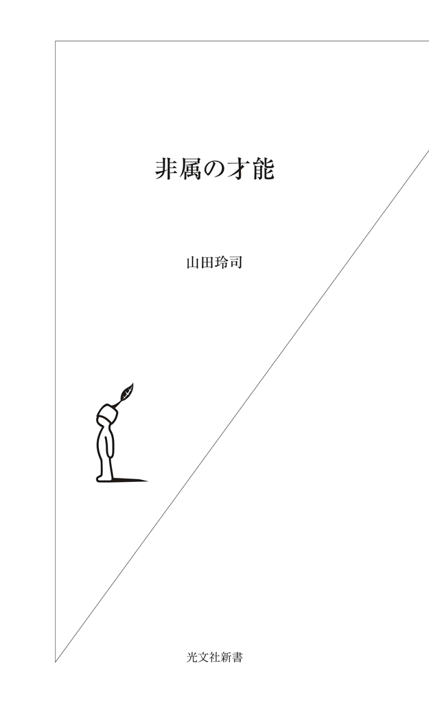

| 非属の才能 (光文社新書) | |
| 山田 玲司 | |
| (2007) | |
・「空気が読めない奴」と言われたことのあるあなた
・まわりから浮いているあなた
・「こんな世の中おかしい」と感じているあなた
・本当は行列なんかに並びたくないと思っているあなた
・のけ者になったことのあるあなた
おめでとうございます。
あなたには〝非属の才能〟があります。

あなたの才能は、いったいどこにあるのだろうか？
僕はこれまで、漫画の取材で数百人もの「才能のカタマリ」のような人たちに直接会って話を聞き、才能の在処を探ってきた。
その経験から見えてきたのは、
「才能というものは〝どこにも属せない感覚〟のなかにこそある」
という一つの結論だ。
学校にひとりも友人がいなかったという爆笑問題の太田光に大槻ケンヂ、そして「高校三年間で五分しかしゃべらなかった」というお笑い芸人のほっしゃん。
どんなギリギリの状況でも「ＹＥＳ」と言い続けるオノ・ヨーコに、「人の言うことは聞くな」と主張する五味太郎。「頭のなかを麻痺させるのがイヤだった」というよしもとばななに、「外界を見ろ」と叫ぶ富野由悠季。
小学校のクリスマス会を「自主参加でいいですよね」と言って堂々とサボっていた井上雄彦に、一五歳にして女性とつき合う可能性を１００％あきらめ、徹底的に自分の興味ある研究に没頭した荒俣宏。
さらには、二四時間三六五日、魚のことばかり考えているさかなクンに、四〇歳まで自分が何者なのか悩み続けたのっぽさん......。
彼らはみんな、自分のなかの「どこにも属せない感覚」を信じ続けた、言うなれば〝非属の才能〟の持ち主だ。
少し別の言い方をすれば、「みんなと同じ」という価値観に染まらなかった人間とも言えるだろう。
彼らは、群れの掟に従えば、人と違う自分だけの感覚、自分だけの才能がすり減ることを知っていた。だから、どんなに疎外され、いじめられ、孤立しようとも、まわりのみんなに合わせるようなことはしなかったのだ。
彼らは、才能がどういうところにあるのか、本能的に感じ取っていたのだろう。
ところで、僕たち日本人がどんな教育を受けているかといえば、どんな場面でも空気を読み、協調性を持つことがいちばん優先されるような教育だ。
しかも、その多くは「協調」などではなく「同調」の圧力だろう。
「みんながそう言っている」という顔のないモンスターに逆らうと、とたんに仲間外れにされ、生きる場所を奪われる。
誰にでもそういった経験が一度や二度はあるはずだ。
たしかに、みんなが右を向いているときに左を向くのは容易なことではない。まわりが「だよねー」と連呼しているなか、ひとり「そうは思わない」などと言えば、いじめられたり、奇人変人だと煙たがられることは目に見えている。
だから、日本人は主張しない。自分を押し殺す。
そうすれば、とりあえず仲間はできるし、いじめられずにすむからだ。
そんなこんなで、同調圧力がもっとも強い学生時代にまわりに合わせることを覚えた人間は、その気楽さゆえに、いつも行列のうしろに並んでいる自分の人生に疑いを持たなくなってしまう。
「自分はどういう人間か？」「どう生きるべきか？」「幸せとは何か？」といった人生の大問題は無視され、うやむやになる。
それでも、それなりに暮らせた時代はよかった。経済はずっと右肩上がりだったし、群れてさえいればソコソコの幸せを感じることができた。
しかし、そういった「恵まれた時代」はついに過ぎ去ってしまった。
いまや倒産やリストラは珍しいものではなく、格差や競争があたりまえの時代だ。「どんなときも横並び」といった群れは淘汰され、才能のない人間は退場を強いられてしまう。
言葉を換えれば、「どこに属しているか」より、「その人個人」の存在が問われるべき時代になったと言ってもいいだろう。
そんな時代に幸せに生きることができるのは、「みんなと同じ」といった楽を選ばず、自分の非属の部分に目を向け続けた人間だ。
もっと言えば、行列の最後尾に並ぶ人間ではなく、先頭に立ち、自ら行列を作るような人間だろう。
ずっとまわりに合わせて生きてきた人間には、主張すべき「自分」というものがない。もちろん、「これが人と違う私だけの才能です」と胸を張ることのできるような才能もない。
そんな人は、斬新な発想や独創性が決定的にものを言ういまの時代に、「使われるだけのパーツ」以上の働きは望まれないだろう。
要するに、「才能のない人間」として消耗されてしまうのだ。
僕はノートをまったく取らない子供だった。
小学校の家庭訪問のとき、担任の先生が「こんな子ははじめてです」と頭を抱えていた光景をよく覚えている。
先生たちに言わせると、僕は見事な「ダメ人間」だ。
なんでノートを取らなかったかといえば、黒板を書き写しているフリをして、漫画のアイデアを書き留めたり、詩や散文を書いたり、「人生とは何か？」なんてことを考えたりしていたからだ。
やることが多すぎて、授業を聞いている暇なんてなかった。だから、まわりのみんなが真面目にノートを取っているのが不思議でならなかった。
学校も授業も先生も相手にしていなかった。
そして、中学、高校でも毎日、授業も聞かず漫画を描いたり、謎の未確認動物の研究などを行ったりしていた。
当然、まわりからは変人扱いされ、価値観の近い友達はいないし、テレビの話題にもついていけなかったが、孤独を感じたことはなかった。
そんなこんなで、気がつくと二一年もプロの漫画家をやっている。
とはいえ、この職業は想像以上に過酷だ。
連載のため睡眠は満足に取れず、食事もいい加減になり、命を削って描いた作品がいともたやすく酷評され、あっという間に打ち切られることもざらにある。
それでも漫画を描いていると、ときどき、えも言われぬ幸福感が身体中を走り抜け、真夜中に叫びたいほど幸せな気持ちになることがある。
「ノッてきた、ノッてきたー」と言っていきなり笑い出す僕を、いつもアシスタントはあきれ顔で見ている。
こんな僕に、「自分の才能はどこにあるのか？」といった悩みはまったくない。
「それはあなたがプロの漫画家だからだろ」と言われればそれまでだが、僕自身は、「真面目にノートを取るような子供」じゃなかったからだと思っている。
子供の頃から、自分のなかの「どこにも属せない感覚」に従って、同調圧力にも負けずに非属的に生きてきたからこそ、自信を持ってそう言えるのだ。
もし、親や教師の言うことを素直に聞くような子供だったなら、漫画はとっくにやめていたはずだ。
「なんで僕だけ、こんなに漫画を描くのが好きなんだろう」という違和感を封印し、まわりの友達と同じように受験勉強に明け暮れて、いま頃、どこかで真面目に会社勤めでもしているのかもしれない。
もちろん、それでも幸せに生きていく自信はあるが、いまの僕ほど自分らしく幸せな暮らしは到底、できないはずだ。
「なんか違うなあ」といつも心のなかで思っているあなた。
実は、あなたには才能がある。
ただ、まわりの空気を読んで、いい人を演じて、その違和感を押さえつけて、ないことにしてきただけなのだ。
ところが、本当の才能や独創性といったものは、そういった属することのできない違和感のなかにこそある。
僕が自信を持ってそう言えるのは、実際に、「はみ出し者」「変人」「引きこもり」「いじめられっ子」「妄想家」「ひねくれ者」の人たちが、その非属っぷりゆえに大成功をおさめた例を死ぬほど見てきたからだ。
彼らは自分のやりたいことをやり、社会になにかしらの影響を与え、そして、実に幸せそうに毎日を過ごしている。
また、誰とでもうまくやっているように見える人でも、心のなかに「どこにも属せない何か」を抱えていて、クリエイティブの源は案外そのあたりにあるということも経験からわかってきた。
才能は、意外に身近なところにあった。
幸せに生きるための方法も、実はカンタンなものだった。
そんなにむずかしく考える必要はなかったのだ。
もし、あなたが「自分にはみんなと違うところがある」と感じているなら、そのみんなと違う部分をもっともっと誇っていい。
もし、あなたのなかに奇人変人の気質があるなら、どうかその気質を恥じるのではなく、思いっきり自信を持ってほしい。
もし、あなたがまわりから孤立して、絶望しているなら、いずれその経験があなたの人生をすばらしいものにしてくれることを知ってほしい。
「生まれながらの天才にしか、才能はない」
「まわりに合わせて我慢しないと、幸せにはなれない」
これは嘘だ。道はある。
あなたのなかにも必ず才能は眠っているし、どんな人でも自分らしく、幸せに生きることができる。
才能の扉をこじ開け、幸福な人生を送るための鍵は、〝非属〟というキーワードのなかにあるのだ。
目 次
おそらく、日本の学校でいちばん学ばされることは、「立ち位置の取り方」だろう。
教室という閉じた世界に一日中、何年もの間いなければならない子供たちは、その異常な空間にいかに存在すべきかという「ポジショニング」が最重要課題になってしまっている。
そこで行われている学習内容については、親も教師も「受験に合格するため」という合意がほぼ完璧になされているため、「生きることの意味」や「なぜ学ぶのか？」「自分とはいったい何者なのか？」などといった本質的な疑問を追求する本来の学問の姿からはほど遠い。
こうなると、そこで求められることは「考えない」ことであり、「疑問を持たない」ことだ。
「どうして勉強しなければならないのか？」という子供の疑問に対して明確な答えを持たないまま、多くの親が「いまだけでいいから受験勉強して、余計なことは考えないように」と言ってしまう。
もちろん、その先には有名大学卒業によるさまざまな「うま味」があるのだろう。
子会社、孫会社にしか入れず、親会社の年下の社員にアゴで使われることはないし、社会的信用があって住宅ローンも組みやすい。ニートやフリーターになって、親を心配させるようなことも少なくなる。
おそらく、そのあたりが親の本音なのだろう。「愛する子供のためを思って」というわけだ。
ところが、そういったうま味を味わえる有名大学・有名企業に入れる人間はごく一部であり、もし運よく入れたとしても、いつの日か唐突に、ずっと先送りにしてきた「疑問」が頭をもたげてくる。
結婚、出産、出世と世間的に幸福とされる生活のなかで、その日はいきなりやってくるのだ。
事故や病気、左遷、リストラ、倒産はなにも珍しいことではない。
交通事故による死者は毎年一万人を超え、ガンや脳梗塞、心臓病などの恐怖も絶えない。もしずっと健康体でいられたとしても、身内に不幸が起きることもある。
また、社内政治に敗れて左遷されることもあるだろうし、どんな大企業であろうと、もはや「右肩上がり」の時代でないことは誰しもが知っている。当然、リストラもあれば、ある日いきなり倒産する危険性もある。
狭い社会での立ち位置の取り方に腐心し、ひたすらノルマだけをこなしてきた人間は、こういった人生に必須の「逆境」に対処ができないのだ。
立ち止まらざるを得なくなったとき、人は必ず自分の内側にその答えを探し出そうとする。
なぜ、自分は生きているのか？
自分のやりたいことはなんなのか？
しかし、こういった人生の大問題をずっと先送りしてきた人間は、そのときはじめて自分のなかが空っぽであることに気づき、途方に暮れる。
最悪の場合、自殺に走ってしまう。
年間三万人もの自殺者を出すこの国の状況は異常と言うほかない。
ではどうすれば、人生の逆境にも折れることなく、幸福な人生を生きていくことができるのだろうか？
これについては、僕自身が数百人もの「いまを幸せに生きている人」に直接尋ねたことで確信できる一つの結論がある。
それは、ひと言でいえば、自分のなかの〝非属の才能〟を信じることだ。
僕はいま、『絶望に効く薬』という漫画（「週刊ヤングサンデー」連載中）のために毎週、各業界のトップランナーに取材を行っている。
漫画のテーマは、「どうすれば楽しく、幸せに生きることができるか」。
実際に、楽しそうに、幸せそうに生きている人に会いに行って、そのコツを聞きだそうというわけだ。
これまで、水木しげる（漫画家）、森毅（数学者）、紀藤正樹（弁護士）、オリバー・ストーン（映画監督）、日高正博（総合演出家）、柳美里（小説家）、木下デヴィッド（プロサーファー）など、数多くのオンリーワンな人たちから話を聞いてきたが、彼らの多くに共通するのは、子供の頃からとにかく学校が嫌いであったということだ。
右へ倣えを強要し、勉強という名の暗記をさせる教師に違和感を感じ、学校そのもののあり方に疑問を抱き、反発しない同級生に苛立ちを覚える。
彼らはそんな「出る杭」のような人ばかりであった。
日高氏や木下氏は退学すれすれの反抗をくり返し、旅や海で人生を決める出会いに遭遇した。学校からはみ出て、父親との確執の果てにたどり着いたベトナムでもはみ出たオリバー・ストーンは、その体験から名作『プラトーン』を生み出した。
柳さんは家出と学校出をくり返した果てに劇場で運命の人を見つけ、水木先生は昼過ぎに登校するというスローライフ戦法に出た。
かつての時代を支えた、軍隊的価値観の「兵隊型」（広く取ると体育会）の人たちは、そんな「右へ倣えを強要する学生時代」が青春の思い出になり得たのかもしれない。
そこでは、理不尽な教師や先輩の命令に対して疑問を持ったりせず、ある種の思考停止ができる人間が認められていたからだ（受験も同じ）。
ところが、斬新な発想や創造性が決定的にものを言ういまの時代において、疑問を持たず、自分でものを考えず、受験だけに努力しろと言うのは、開国から幕府滅亡までの激動の時代に、「藩で出世するために刀を振りまわせ」と言うのと同じことだろう。
そんな人間に、新たな時代を切り開くようなチカラはない。
こうなると、いままで学校に行かないことで迫害を受けてきた不登校児や、教師と対立して学校を中退したような人間のなかにこそ、この時代において貴重な才能の持ち主がいる可能性が高くなる。
同調圧力に負けず、群れ、属すことの安心にも甘えず、思考停止という楽も選択しない――非属の才能はまず、そういった「学校嫌い」という症状に表れるのだ。
こんな言い方をすると、真面目に学校に通っている人や、部活で甲子園を目指したり、ブラスバンドやバスケットボールに青春を燃やしたりしている人たちを否定しているように聞こえるかもしれない。
あらかじめ断っておくと、決してそのような人たちすべてを否定しているわけではない。おそらく誰でも一度は感じたことのある、「無条件に群れのルールに従うことのできない感覚」から生まれてくる可能性について言っているのである。
わかりやすい例を挙げるなら、野茂英雄の投球フォームやジョン・レノンの作曲法のことであり、桑田佳祐や忌野清志郎の歌い方や、ミッフィーの作者であるディック・ブルーナの絵の描き方のことを言っているのだ。
絶対にその人でなければ表現できない、のちにその人そのものが新しいカテゴリーになってしまうような種類の才能。
それこそが〝非属の才能〟である。
言い方を変えれば、コペルニクス的才能、もしくはコロンブス的才能とも言えるだろう。
人はこの手の「人と違う絶対的な才能」の持ち主を天才と呼んでしまい、自分たちとの間に「生まれながら」という線を引いて、向こう側の人にしてしまう。
とはいえ、彼らももともとはただの子供だったわけで、遺伝的要素以外の環境が才能を育んだ可能性も十分に考えられる。
つまり、誰のなかにも「プチコペルニクス」や「プチ佳祐」がいるのではないだろうか？ ということだ。
「基本の投球フォームにどうしてもなじめない」
「合奏のある部分にどうしても長いブレイクを入れたくなって仕方ない」
「１＋１が２だとはどうしても思えない」
「授業中、廃家電回収のおじさんの声の調子が毎日、微妙に変わるのが気になる」
「給食に出るイカ飯の魅力なら何時間でも語れる」
そんな要素なら誰にでも少しくらいはあって、そういうことは学校教育のなかで「非生産的」と言われ、ないがしろにされてしまう。
ところが、実はそんな非生産的な要素のなかにこそ、非属の才能は眠っているものなのだ。
いまの「まっとうな」教育現場では、野茂のような投球フォームは矯正され、清志郎のような歌い方はただの音痴と言われかねない。
誰のなかにもあるはずの非属の才能は、あっという間に潰されてしまうのである。
学校は、なによりも協調性が重視される世界だ。
それが、「みんなで仲良く力を合わせて」といったレベルならまだしも、往々にして度を超して、「みんなこうしろ！」といった同調圧力になる。
僕が中学生だったときの話だ。国語の先生に、
「流れ行く 大根の葉の 早さかな」
という俳句についての感想を求められたことがあった。
その句を詠んで僕の頭にパッと浮かんだのは、つぎのような光景だ。
「〝葉っぱが流れて行く〟と言うからには、上流で大根を洗っている人がいるんだな。大根の旬は冬だから、これは寒いよなあ。多分、おばあちゃんが大根を洗っているんだ。その手が真っ赤になっている――」
そんな感想を口にすると、先生はいきなり「ぜんぜん違う。これはスピード感を表現しているんだ」と言って、僕の答えを頭ごなしに否定した。
残念ながらこれは本当の話だ。
そのときの僕はそこそこの協調性を持った生徒だったので、ブチ切れてその場の空気を乱したりしなかったし、夜の校舎で窓ガラスを割ったり、盗んだバイクで走り出すこともなかった。
とはいえ、俳句の感想まで誰かと同じにすることはご勘弁を願いたかった。
「正月はいいものだ」とか「雨ばかりで残念です」とか「まだ結婚しないんですか？」とか「東大生は頭がいい」みたいな感覚まで他人様と合わせろとなると、それはもはや協調を求められているのではなく、同調を求められているのだ。
正月が大嫌いな人もいれば、雨になるとやたらとやる気が出る人もいる。結婚しなかったおかげで最高の人生を送れた人もいるし、まして「頭の悪い東大生」がいることは説明するまでもない。
学校は、人生でもっとも同調圧力が強い閉塞空間だろう。
「これが正解」「これがふつう」「これがあたりまえ」「これが常識」という同調を、教師は毎日これでもかというほど生徒に押しつけてくる。
やっかいなのは、それが生徒のためだと教師たちが本気で信じ込んでいることだ。完全に協調と同調を混同してしまっている。
そんな教師には、「先生の言う通りかもしれませんね」とその場をやり過ごして、距離を取るのが賢明だろう。実際、僕は国語の先生に対しても反発することなく、「そうですよね、おばあちゃんなわけないですよね」と適当にあしらった。
「みんなの常識」があまり当てにならないのは歴史が証明している。
僕たちは「国のために死ぬのが美徳」という常識が一瞬にして「消費こそが美徳」になった国に住んでいる。
だから、「自分の常識」が「学校の常識」と同じでなくてもなんら問題はないのだ。
むしろ、自覚のないまま危険な考えを信じ込んでいるほうが問題だろう。株も土地も値段が下がることはないと二〇年ばかり前の銀行員は真顔で言っていたし、太平洋戦争では神風は吹かず、ノストラダムスの予言はうやむやとなり、ホリエモンは忘れ去られてしまった。
だからといって、夜の校舎で窓ガラスは割らなくてもいいけれど、同調圧力が持つ危険性は学生時代から自覚しておいたほうがいい。
協調はしても同調してはいけないのだ。
どうして、日本の学校ではこうも他人に同調することがよしとされるのだろうか。
もちろん、単純に「生徒という群れ」を管理しやすくなるから、という事情はあるだろう。
「なぜ日本の教室は四〇人なのか？」という疑問に対して、「軍隊の小隊が四〇人だったから」という話を聞いたことがある。
つまり、日本の学校はいまだに戦争を引きずっているのだ。
朝礼もセーラー服も丸坊主も、軍隊の名残以外の何物でもない。
そして、それ以上に学校で、いや、この国で同調性がもてはやされる理由は、「同調さえしていれば、とりあえず無難に生きていける」という暗黙の了解があるからに違いない。
そういった「みんなと同じ」生き方がどんな生き方かといえば、誰かに石をぶつける人間の群れに紛れ、「そーだ、そーだ」と石を投げ、「誰が投げた石か？」と問われれば目を逸らし、問い詰められれば「みんなもしていたじゃないか」と居直るといった、昔のお坊さんが聞いたら「確実に地獄に堕ちますよ」と言われそうな生き方だ。
残念ながら、いまの日本の教育はそういった「責任を取らない大人」を量産している。
「赤信号、みんなで渡れば怖くない」のノリで談合や天下りは行われ、個人の名において責任が問われることはほとんどない。
また、教育における評価方法も、上限のない加点法ではなく、「一〇〇点」「優」といった上限からマイナスしていく減点法が主流のため、積極的に人と違うことにチャレンジするより、とりあえず人と同じことをしておいたほうが減点を最小限にとどめることができ、無難に生きていける。
「だったらなおのこと〝みんなと同じ〟がいいじゃないか」という声が聞こえてきそうだが、そういった生き方が許され、幸福になり得た時代はもう過ぎ去ってしまった。
しかし、学校の教師たちは時代の変化に疎く、いまだにそういった横並びの時代が続いていると思い込み、生徒に「無難な生き方」を強いてくる。
僕がここで言いたいのは、同調の限界はたかが「一〇〇点満点」ということだ。
それは、設問者の枠のなかからは出られない「限定された能力」だし、「望まれた答えを書くだけの能力」とも言える。
そんな世界で、貴重な青春時代を犠牲にして、必死の思いで頂点に立ったとしても、ビートたけしや勝新太郎のような満足のいく充実した人生は送れないだろう。
むしろ、「学歴だけが心の支え」という危うい人生が待っているのだ。
では、学校での同調圧力に屈しない人間はどうなるのか？
結論から先に言えば、学校という群れから追い出されてしまう。
黒柳徹子さんの国民的ベストセラー『窓際のトットちゃん』には、彼女の、非属の才能を持つがゆえの苦悩がありありと描かれている。
少女時代の彼女はあまりに好奇心が強く、行動力があり、自主性に富んだ性格だったため、まわりとのトラブルが絶えなかった。
たとえば、フタ付きの机をはじめて見たトットちゃんは、用事を作ってはパタンパタン音を立てて開けては閉めるし、ちんどん屋が通りかかれば学校に招き入れ、一曲披露させてしまう。
彼女がいては授業が進まないと判断した小学校は、ついにトットちゃんに退学を言い渡す。
転校先は、電車の車両を利用した「トモエ学園」だった。
小林宗作校長の教育理念は、「子供たちの生まれつき持っている素質を、どうまわりの大人たちが損なわないで大きくしてやれるか」。
そのため、授業スタイルは、黒板に書かれた科目のなかから子供が好きなものを選んで勝手にはじめるという、実にユニークなものであった。作文が好きな子は作文を書きはじめ、化学が好きな子はアルコールランプに火をつける。
教師には生徒の興味が一目瞭然で、効率もよく、午前中ですべての授業が終わってしまうから、午後はたいてい散歩になった。教師は菜の花が咲いていると足を止め、おしべとめしべの説明をはじめる。散歩が理科や歴史の勉強になっていることに、子供たちは気づいていなかった。
こうして、トットちゃんは才能の芽を摘まれることなく、黒柳徹子になった。
あの発明王エジソンもまた、学校を追い出された少年だ。
１＋１さえわからなかったエジソンは、どうしても教師と馬が合わず、わずか三カ月で放校処分となってしまう。
そんなエジソンに対して、もともと小学校の教師で教育熱心だった母・ナンシーは、ホームスクール形式で勉学を教えた。
彼女が特に気をつけたのは、エジソンの旺盛な好奇心を潰さないこと。ナンシーはエジソンのためだけに、地下室にさまざまな化学薬品をそろえ、エジソンは自分の好奇心のおもむくままに物事を調べ、実験にチャレンジすることができた。
のちに電球の発明で一万回もの失敗をくり返したとき、エジソンはこう言っている。
「失敗したのではない、一万回うまくゆかない方法を見つけたのだ」
もし、トットちゃんとエジソンのふたりを教室に閉じ込め、教師の理想とする「いい子」に教育することに成功してしまっていたとしたら、その損失は本人だけにとどまらないだろう。
傑物は、学校という群れのなかでは生まれにくいものなのだ。
フジロックフェスティバルを主催・運営する「スマッシュ」代表の日高正博氏は、傑物と呼ぶにふさわしい人物だが、彼は一五歳でホームレスになったという。
周囲の理不尽な同調圧力には決して従わなかった彼は、すべてに反抗をするような学生生活ののち、さまざまな放浪生活を続け、最終的には、世界に名を馳せる日本最大のロックフェスティバルを立ち上げるに至る。
学生時代、そんな彼のことを教師はいっさい認めず、後輩の生徒の前に引きずり出し、「こんな先輩にはなるなよ」と言ったという。
まさに「出る杭」だった彼のことが目障りだったのだろう。
そんな学校に嫌気が差した日高氏は自主退学し、家を出てホームレスになった。その後、彼は肉体労働で日銭を稼ぎながら、たったひとり、日本全国を車で旅してまわる。
「なんとかなるんだよ！」と日高氏は笑いながら当時を語ったが、どんな人とも分け隔てなく酒を酌み交わし、心を通わせることのできる彼の才能は、そういった孤立無援時代の経験が育んだと言えるだろう。
いくつもの職を転々としながら、やがて彼は音楽関係の仕事にたどりつく。
日高氏は、音楽はバンドだけが作るものではないと言う。ふつう、演出や音響、照明といった仕事は裏方と言われるが、「音楽の仕事に表も裏もないよ」とさらっと言ってのける。
そんな彼だからこそ、自分のバンドで成功するという「渋滞した道」にひっかかることはなかった。出会ったバンドの本質を見抜き、ステージに上げ、イベントという大きなエンタテインメントに仕上げていく総合演出家になったのである。
まわりの人間はみんな、彼のことを「大将」と呼ぶ。
音楽を愛し、誰とでも本音で向き合い、相手のいい部分を最大限引き出すことのできる彼の才能は、学校では決して評価されなかったが、前人未到の巨大イベントを立ち上げるときに大きくものを言った。
「こんな先輩にはなるなよ」という教師の命令を聞いていたら、残念ながらこんなにすごい先輩にはなれないだろう。
どんな人も、多かれ少なかれ「学校では評価されない才能」を持っている。
ある人は、「他人の気持ちがわかる」という才能かもしれない。またある人は、「いるだけでその場が和む」という才能かもしれない。はたまた、「とにかく歩ける」という才能の持ち主もいるだろう。
そういった見過ごされがちな些細な才能こそが、のちのち大きな才能へと育っていくことはこれまで述べてきた通りだ。
重要なのは、その才能を理解してくれる「理解者」がひとりでもいるかどうかということだろう。
学校という群れから追い出されたトットちゃんには小林校長という理解者と、トモエ学園という「正しき教育機関」の存在があり、エジソンには幸運にも母親という肉親の理解者がいた。
暴れん坊だった日高氏には、天才プロデューサー・ジョニー野村氏がいたと聞く。
学校は、異常なくらい閉鎖的な場所だ。
そこではある種の目に見えない空気が、常に「ムラの掟」を強いてくる。そういった状況のなかで、自分の価値観のみに従って生きていくのは至難の業だろう。
でも、そこにひとりでも理解者がいれば、一見、掟に従っているように見せかけて、非属の才能をすり減らすことなく、うまくムラのなかを泳いでいくことも可能かもしれない。
それくらい、理解者という存在は心強いものだ。
ところが、成長して大人になれば、世界が広がって自分の価値観に合う人間を見つけ出すこともできるようになるが、子供のうちは世界＝学校だ。狭い人間関係のなかに理解者など現れず、孤立無援になる可能性のほうが高い。
最初から強い人間なら、そんな状況にも耐えることもできるかもしれないが、そんな子供はまれだろう。
では、いったいどうすればいいのか？
これには簡単な方法がある。
学校に属せず、孤独を感じたときは、ジョン・レノンやイチローや坂本龍馬や尾崎豊といった、実在した（している）ヒーローを自分の身内だと思って、現実の理解者が現れる日まで勝手に「心の師」にしてしまえばいいのだ。
そうすれば、同調圧力にさらされる日々も、少しは楽にやり過ごせるようになるはずである。
この本に取り上げた人はもちろんのこと、歴史に名を残した偉人たちは見事なまでに非属の才能の持ち主だ。そんなことは、図書館に行って少し調べるだけでわかることだろう。
ムラの掟と場の空気を最優先し、とりあえず無難に生きた人間が歴史を変えることなどあり得ない。
僕はといえば、ずっと手治虫に私淑していた。
まわりの漫画好きが「山田の絵はデッサンが滅茶苦茶だ」などと僕の漫画を罵っても、ぜんぜんへっちゃらだった。手先生は「漫画は発想が第一」であり、多少のデッサン狂いなどは気にしない人だったからだ。
「これはこれでおもしろいですよ」
手先生ならそう言うだろうと、僕は心のなかで勝手に漫画の神様の声を聞いていたのである。
同じように、「ジョンならどう言うだろう」「尾崎ならわかってくれるさ」などと思えるようになれば、「規則だから髪を切れ」「とにかく勉強しろ」という教師たちに反抗をくり返し、学校をドロップアウトしたり、精神的に病んで入院したりする必要もなくなる。
聞くべきは、群れの号令より、心にいる理解者の声なのだ。
先日、実家が引越しするというので、一〇代の頃に自分が描いた漫画を引き取りに行って本当に驚いた。
高校時代の作品なのだが、その絵が恐ろしいほど下手なのだ。
そのひどさといったら、その場でシュレッダーに五回ほどかけて、ガソリンで火をつけて燃やしたあと、北極海に撒布したいくらいの出来なのである。
当時、もし漫画の全国アマチュアランキングがあったらおそらく最下位に近く、審査員のはらたいらさんに優しく、「君は漫画家以外の道を考えたほうがいいかもね」などと諭されていたかもしれない、そんな作品だった。
ところが、その作品の封筒にはタイトルとページ数に加え、自信満々に「作品ナンバー三七・一九八二年七月」とある。
その頃を思い出すと、僕はいま同様、自信に満ちあふれ、漫画家になれるかなれないかなどお構いなしに、完全に未来の巨匠作家の初期作品を描いている気分で、嬉々としてその漫画を描いていた。
たしかに、学校の教師と同級生は「お前が漫画家なんかになれるわけがない」とボロクソに言って笑っていたし、母もこの当時は心強い応援団などではなく、なかばあきれて「漫画以前に学校の成績をなんとかしなさい」と愚痴っていた。
ところが、当の本人は「そうだよなあ、みんなの言う通りだよ。僕みたいな絵のド下手な奴は漫画家なんかとても無理でございます。これからは改心して、真面目に英単語などを覚えて、専門学校で資格などを取って、税金も年金もしっかり納めながら日曜日には家族とホームセンターに行くような、ちゃんとした大人になります」とは思わなかった。
なにしろ勝手に身内だと思い込んでいる心の師・手先生は、本のなかで「漫画はふてぶてしく描こう」と言っているのだ。絵は大胆に「落書き精神で描け」とも言っている。
さらに、「他者の基本的人権だけは茶化してはならないが、あとはどこまでも荒唐無稽に無茶苦茶に描いてもいい。むしろ無茶苦茶なほどいい」とまで言っている。
さて、ここで信じるべきは、身近にいる「絵が下手なら漫画家になんかなれっこない」という一般民間人の意見か？ それとも、漫画の神様・手治虫大先生のお言葉か？
そんなわけで僕は、手先生の書いた『マンガの描き方』というたった一冊の本のおかげで漫画家になってしまったのだ。
これについては、「勝手に決めた心の師を自分だけの理解者にするといい」という話なのだが、本当はもうひとり、僕の自信を決定づけてくれた人がいる。
それは母方の祖母だ。
祖母は中学生だった僕に、「みんなはいろいろ言うと思うけど、おばあちゃんは玲ちゃんは漫画家になれると思うよ」と言ってくれたのだ。
たった一度の発言だったけれど、この言葉が僕のいまも続く自信の根拠になっている。
よく考えると、この言葉は祖母個人の意見だ。
世の中の（群れの）モノサシは関係なく、「私はこう思う」という、どこにも属さない自分自身の言葉である。
「みんな無理だって言ってるんだから、諦めたほうがいいんじゃない？」
同じように子供の将来を思いやっていても、こんなふうに言ってしまうと確実に子供のエネルギーを奪ってしまう。「みんなの意見」なんかより、「自分の意見」で励ましてほしいと子供は思っているからだ。
幸運なことに僕は、そんな言葉を早い時期に祖母からもらっていた。
会ったこともない大偉人を勝手に心の師にすることはできても、こればかりは運だと言わざるを得ないだろう。
とはいえ、自分の子供や孫や後輩などにそんな言葉を与えて、決定的な自信をつけてあげることはできるかもしれない。
時代の空気や周囲の常識などより、ただ本人を信じてあげればいいだけの話だ。何気ないひと言が時空を超えて、その人を支え続けるかもしれない。
祖母はその後すぐに、謎の文明病ヤコブにかかって死んでしまったが、あのときのひと言はいまなお僕の心のなかに生き続けている。
僕はいま、埼玉県のとあるベッドタウンに住んでいる。
初対面の人に埼玉在住だと言うと、「なんで埼玉なんかに？」などと十中八九、不可解な表情をするので、「もともとは東京なんですよ」と説明すると、とたんに「やっぱりそうですか」とひとり納得する。
どうやら相手から見ると僕はクリエイティブ職のベテランで、そういう華やかなる（勝手にそう見ている）仕事をしている人間が、平然と埼玉なんかに住んでいるのに合点がいかないらしいのだ。
特に埼玉に思い入れがあるわけではないが、都心への交通の便がいい（電車で一時間弱）わりには、大好きな水田がまだまだあって、白鷺が飛んでいるのも気にいっている。
聞いた話だと、都心から南に離れるのと北に離れるのでは、同じ距離でも土地の値段は倍近く違うらしい。つまり、神奈川方面に住むと、埼玉で買える家の半分の大きさの家しか買えないのである。
逆に言えば、同じ通勤時間にもかかわらず、神奈川では六〇〇〇万円するマンションが、埼玉では三〇〇〇万円で買えるらしいのだ。これはかなり乱暴な試算だが、デタラメとは言い切れない。
では、それほどまでに神奈川はすばらしい環境で、埼玉は地獄のような場所なのだろうか？ 謎の巨大昆虫が現れて、娘をさらって生き血を吸うのだろうか？
首都圏以外の人や外国人にはピンとこないだろうが、東京に住んでいる人にはその理由がよくわかるはずだ。
つまり、土地のブランド名にお金を払っているのである。
たしかに、「ダサイたま」とまで言われる埼玉より、横浜や湘南といったオシャレなイメージの神奈川に住んだほうが気分はいいだろう。それは僕も正直に認めよう。
とはいえ、たとえ一〇〇〇万円の違いであっても、僕には大きいと思う。
ふつうのサラリーマンが毎月一〇万円を貯金するのは、決して楽なことではないだろう。できたとしても年に一二〇万円にしかならない。そんな暮らしを一〇年近くしなければ、一〇〇〇万円は貯められないのだ。
もしイメージのいい土地に家を買うために六〇〇〇万円借りたら、月に二〇万円の返済でも、利子がついて三五年近くかかるうえに、固定資産税までついてくる。
こういった無謀な取引を銀行のような存在が支えているため、「頭金一〇〇万円で夢の暮らし」などといったメッセージで人々は乗せられ、見事に悪魔の契約を交わしてしまう。
この国では、そんな話は珍しいことではない。
「もう一〇〇〇万出せば東京に住めますよ」「もう一〇〇〇万出せば隣の世田谷区に住めますよ」というバカな話があたりまえに行われているのだ。
それにしても、人生の限られた貴重な時間を労働に充てて、僕たちはお金を稼いでいるというのに、一〇〇〇万円はそんなに安いのだろうか？ 自分の人生の時間をそんなふうに使っても後悔しないのだろうか？
ただ土地のブランド名に価値を感じないだけで、無駄なお金を不動産屋や銀行や国に取られずにすむ。言い方を変えれば、「埼玉でもいいや」と心に決めるだけで一〇〇〇万円くらいは得をするのだ。
ちなみに僕は、埼玉に住んでもまるで平気だったため、売れない漫画家のくせにローンで苦しまずにすんでいるし、巨大昆虫に襲われてもいない。
エルメスのバーキンは女性の憧れだという。
エルメス社の社長が、ジェーン・バーキンというカリスマ女優のために作ったバッグのことだ。
一〇〇万円近くするそのバッグはいつも予約待ちで、買うのはたいへんだというが、苦労して手に入れたそのバッグを友人に褒められたとしても、よく考えてみると、褒められているのはバーキンであり、その人自身ではない。
シロガネーゼやパリジェンヌに憧れるのもわかるが、そういう人は、みんなが価値を認めるブランドで武装すれば、自分自身の価値も上がるとでも思っているのだろうか。
まさに虎の威を借る狐の話だが、まさか本気でジェーン・バーキンやパリジェンヌになろうと思っているわけではないだろう。ささやかな女優気分を味わいたいだけなのかもしれないし、単に「バーキンが買える経済力」を自慢したいだけなのかもしれない。
とはいえ、バッグ一つに一〇〇万円は高すぎる。
バーキンでなくても、たかが財布やたかが時計に大金を払うのは、やはり少しどこか「ズレている」と言わざるを得ない。
本人は本気でその価値があると信じているのだろうが、革ならまだしも、ブランドのロゴが入ったナイロン製のバッグにも一〇万円の値がつけられ、しかもそれが飛ぶように売れる状況は、僕にとっては気味が悪い。
こんなことを言うと女性から大ブーイングを食らいそうだが、男の立場から見ると、バーキンを持った女性は、「ジェーン・バーキンの威光にあやかるために大金を出す一般人」にしか見えないのだ。
逆に、ジョージ・クルーニーの着ている何百万円のスーツを着てデートに現れた日本人男性は、ジョージ・クルーニーに見えるだろうか。
そこにはどうしようもない壁がある。
バーキンを欲しがる女の群れに属している限り、ジェーン・バーキン的魅力を獲得できる日は遠く、いつまでも空しい散財を続けることになるだろう。
バーキンはただの鞄、ダイヤモンドはただの石だ。
映画『ティファニーで朝食を』のエンディングでオードリー・ヘプバーンが選んだ指輪は、恋人と自分にとっては最高に価値のある「オモチャの指輪」だった。
とはいえ、「なんだかんだいっても世田谷」「結局は東大」「医者がいちばん」「やっぱりベンツ」「バーキン最高」と言うなら、思う存分その道を突き進んでみたらいい。
ずっと欲しかったブランド物のバッグが「高揚感は手に入れるまで」だったように、学歴や資格やモノは、いったん手に入れてしまうと、思っていたほどの幸福感や充実感を与えてくれるわけではないことがわかってしまう。
そもそも、そういったものの大半は、いくらか努力し、いくらかお金を出せば誰でもすぐに手に入れられるものだ。
世田谷に住みたければ引っ越すのにビザはいらないし、ベンツならヤナセの代理店に行けば手に入る。大ヒットしたある漫画では、「東大はテクニックだけで誰でも入れる」と言っている。そんな漫画なんてどうでもいいが、人生のすべてを受験勉強に費やせば、ある程度の学歴は簡単に手に入れられるだろう。
問題は、医者や弁護士や東大生や電通マンになる試験はあっても、ブルース・リーになる試験はないということだ。
みんなに偉いと言われる「タグ（値札）のついた何か」にはなれても、「その人でなければならないという唯一無二の存在」には絶対になれないのである。
逆に言えば、ブルース・リーは東大を出ていなくてもブルース・リーだし、ベッカムが埼玉に住んだら、埼玉のほうが変わるかもしれない。
そこまで大物にならなくてもいいと思うかもしれないが、たいがいの人が本当に求めているのは、そんなふうに、自分が自分のままで認められる人生だろう。
東大だから、医者だからという理由でもてはやされている状態は、お金があるから女にモテている成金社長や、若くて痩せているときだけチヤホヤされるキャバクラ嬢みたいなもので、その人自身が愛されているわけではないのだ。
虎の威を借る狐は結局、狐であり、いつまで経っても虎にはなれない。
それならば、自分で自分を誇れる「最高の狐」になるほうがいい。
有名企業の役員などを勤め上げた人は、定年間際、ただの人になるのがつらいと漏らすらしい。それはつまり、タグを外されたときに、ただの狐だった自分を見つけてしまうからなのだろう。
一時期、「アダルトチルドレン」という言葉がもてはやされた。
親に愛されたいがために、自分の意思を押し殺して親の言う通りに生きてきた子供が、大人になってはじめて「自分とはなんなのか？」という問題にぶつかり、苦しみ続ける。
そんな症例が、ここ数十年激増しているという。
戦後生まれの親たちは、群れることで幸せを実感できる幸運な時代を生きてきた。青信号も赤信号も、みんなで渡ってきた世代だ。
そんな世代の価値観は何かといえば、つぎのひと言に集約される。
「いかに〝良い群れ〟に属すか」
偏差値の高い大学を出て、誰もが知っている大企業に勤め、良家のお嬢さんと結婚し（女性なら、弁護士や医者と結婚し）、高級住宅地と呼ばれる成城や芦屋に住む......。本気でそういった人生が最上であると信じている人間が、僕のまわりにも腐るほどいる。
そして、当然のように、彼らは自分の子供たちにもその価値観を押しつけてきた。
これは、親が子供に「自分と同じやり方で生きろ」と命令する、もっとも強力な同調圧力だろう（失敗した自分のようにならないために命令通りに生きろ、という圧力もある）。
そんな親のもとで育った人間は、無意識に、より良いタグのついた集団に属すことに、エネルギーの大半を使う大人になってしまう。
僕の知り合いの大学生は、「本音を言えば、会社選びの基準はブランド企業かどうか」だと言っていた。彼の友人の女性は、結婚して東京から千葉に移り住むことを死ぬほど苦痛に感じたという。
彼らには、「良い群れに属さないと幸せになれない」という親からの呪いがかけられている。
――みんなが認めるタグには価値がある。
こうなると価値の判断は「自分」ではなく、常に「みんな」だ。
時計ならロレックス、財布はヴィトン、車ならベンツかＢＭＷ、住むなら世田谷区か港区などと言う人間の多くは、ピンからキリまですべてを吟味してそう結論づけているわけではなく、みんなが賞賛するブランドを選んでいるだけだったりする。
僕には、排気ガスの充満する都心より、千葉の田舎のほうが遥かに魅力的に映る。
ところが、彼らと彼らの親にそんな視点はほとんどない。
結局、アダルトチルドレンは親が決めた人生を生きることになる。自分でものごとの価値を決められないから、ブランドのタグに頼らざるを得ないのだ。
生まれたときは、まるで世紀の天才がこの世に誕生したかのように自分の子供に期待するくせに、いざ群れのなかでレースがはじまると、とたんに「この子の将来のために、少しでも良い学校に入れてあげないとかわいそうだ」と言う。
そして、お金に余裕のある家は有名幼稚園への「お受験」に明け暮れ、ほかの家庭は定番の中学受験に勤しむ。
「子供にとっていちばん良い環境を与えてあげることが親の役目（公立じゃ下流の生徒ばかりでグレるかもしれないし、教師もロクな奴がいない！）」
「高卒と一流大卒では、大人になったときの選択肢の数が天と地ほど違う（高卒じゃまともな職につけず、人生を棒に振るぞ！）」
などというのがそういった親の定番のセリフだろう。
とにかく、自分の子供を（なるべく早く）良い学校に押し込むことが最優先で、「〝良い環境〟の本当の意味」や「選択肢の質」については無頓着だ。
本当のところ、「私の子供はたいした才能も能力もないのだから、せめて良い群れに入ってくれさえすれば、あまり苦労せずに安定した人生が送れる」という親心なのだと思う。
つまりこれは、自分の子供の背中に「私は凡人」というタグを貼りつけているのと同じことだ。
やがて、そういった家庭で育った子供は、ただ漠然と有名大学や有名企業を目指すような大人になる。
ところが、もしお望みのブランド企業に就職できたとしても、企業が求めているのは悲しいことに凡人ではない。他社を出し抜くアイデアを出せる人間であり、膠着状態を打破できる才能を持った人間なのだ。
社会学には、「予言の自己成就」という考え方がある。
「最初の誤った予言が新しい行動を呼び起こし、その行動が当初の誤った予言を真実にする」ということらしいが、簡単な例を挙げるならば、銀行の「取付騒動」がそうだ。
「この銀行は倒産するらしい！」というデマによって、経営上、なんの問題もない銀行に預金者が殺到して、預金をすべて引き出してしまったため、本当に潰れてしまう――まさに予言が成就してしまうわけだが、子供に凡人のタグをつける親の例も、これとまったく同じではないだろうか。
子供が凡人になるのは、親がそう仕向けているからなのだ。
「そんなこと言ったって、うちの子は天才じゃないんだから（凡人なんだから）仕方ないじゃないか」
と開き直る親もいるかもしれない。
こういった話をすると必ず議題にあがるのが、例の「天才」という特別枠についてだ。
第１章でも少し述べたが、そういった唯一無二の存在には「絶対的な才能」がないとなれないのだろうか。
ここで一つ重要な思い違いがあると思うのは、はたして人間には天才と凡人の二種類しかいないのか？ という点についてだ。
たしかに、そういうことにしてしまえば気は楽になるのだろうが、現実はそんなに単純ではない。「ハリー・ポッター」シリーズの作者であるＪ・Ｋ・ローリングは、子供の頃からずば抜けた文章力を持った神童ではなかったし、水木しげる氏は、生まれながらにして妖怪と話せた怪童ではなかったと聞く。
世界的デザイナーにして日本一のお祭り男・山本寛斎氏も、小さい頃は引っ込み思案の目立たない子供で、はじめから極彩色に彩られた天才的センスの服をデザインするような麒麟児ではなかったそうだ。
僕自身も、絵の下手な、どこにでもいるただの漫画好きの子供だった。
そして、プロとして活躍している友人の漫画家たちも、ずば抜けた才能を生まれながらにして持っていたという人は少ない。ちょっとだけ人と違う何かを持った「ふつうの子供」だったという。
それでも好きな漫画を描くことで生活ができるのだから十分だと思うし、そのうちの何人かは、したたかにヒットを飛ばして、ちょっといい暮らしをしていたりする。
「天才とまではいかなくとも、凡人とまでもいかない」
クリエーターと呼ばれる人ですら、そんな人がほとんどなのだ。
『あたしンち』で国民的な漫画家となった、けらえいこさんは一見、ものすごくふつうの人だ。それでも彼女と話をすると、生活の細部におもしろさを見出す才能がすごい。
僕は彼女が売れっ子になる前から、その独特の視点とセンスが大好きだったが、ひと目見て「天才だ！」というわかりやすい作風ではなかったため、彼女はデビューしてからしばらくは、なかなかメジャー誌から声がかからなかった。
それでもあきらめずに努力を続けてきた彼女を、僕は知っている。
そんな彼女のことも、何も知らない人たちは「天才だから売れたんだ」と言うのだろうか？
「天才は１％のひらめきと９９％の努力」という有名なエジソンの言葉があるが、それはかなり真実に近い。
自分の子供に凡人のタグをつける親たちは、「天才という絶対的な才能は１００％先天的なもの」だとでも思っているのだろうか。
１％の「わかりやすくない才能の芽」を見つけてあげるのが本来の親の役目のはずなのに、そのように勘違いしている人間には、自分の子供の才能は決して見えてはこない。
だから、とりあえず「良い学校」に子供を押し込み、子育てした気分に浸ろうとする。
長嶋茂雄より成績のいい選手はいくらでもいた。
それでも彼が天才と呼ばれ、「球界の神」にまでなったのは、「ボールが止まって見える」といったずば抜けた才能がゆえではなく、妙な英語や派手な空振りといった言動やカリスマ性など、案外「野球の才能以外」のせいだったりする。
長嶋の存在は、当時の野球界の常識からかけ離れていた。
彼は自分の感性に従って、周囲にも流されず、ただただ長嶋茂雄を生きたのだ。
天才の構成要素は、ちょっとした才能と大いなる努力、そして、群れの価値観に流されず、「自分という絶対的なブランド」を信じ続ける〝自分力〟なのかもしれない。
才能の比重は意外に低いのだ。
僕はブランド物に疎く、いつも本当にどうでもいい服を着ているが、それになんらかのコンプレックスを感じたことは一度もない。
なぜなら、自分自身がブランドであって、僕が着た瞬間、その服は山田玲司セレクトのプレミア服になると本気で思っているからだ。
服についたタグに関係なく、ただ気に入ったものを着ている。
漫画家デビューする遥か前の超一般人の頃からそうで、同級生には「山田の着ているその変な服、どこで売ってるの？」とよく聞かれたものだ。
どうして自分はブランドに惑わされずにすんでいるのか、一度じっくり考えてみたことがあったが、それは僕の父親のおかげだろう。
父は、僕のことを世間一般の価値観で計るようなことはしなかった。
父がよく言っていたのは、「自分の価値観は自分の世代で終わり。自分の人生は支えてくれたかもしれないが、子供の人生は子供が考えるものだから邪魔はしない」という種類のことだった。
つまり父は、僕にどうしろこうしろとは言わず、「自分の人生は自分で決めろ」と言っていたのだ。子供を未完成な人間と見るのではなく、ひとりの独立した個人として尊重してくれていたのだ。
これは、子供にとっては絶対的に信頼されたということで、同時にそれだけの信頼を裏切ることはできないという責任感が生じる。
こうなると、僕の人生ははじめから僕のものだ。僕は父に、人生の先輩として謙虚に意見を聞くようになっていた。
父は人生についての的確なアドバイスをしてくれるし、会社を興すタイミングや税金などについての助言もしてくれるのだが（父は小さな会社の経営者だ）、「俺の言うとおりにしろ」などと命令したことは一度もない。
たしかに、「自分の人生で学んだことを子供に伝えることができないのはおかしい」と反論する人もいるかもしれないが、それはまったく逆で、自分が自分の考えで生きることを認めてもらった子供は、親の言い分にも耳を貸せるようになるものなのだ。
誰だって、他人の話をまるで聞かない人の話など、聞く気にはなれないだろう。
伝説的番組『できるかな』の「のっぽさん」こと高見映氏は、子供を一度として未完成な人間として扱ったことはないという。
高見氏は、子供は「小さな人」なだけで、すでに立派な個人だと言う。
また、絵本作家の五味太郎氏は、「子供の問題」のすべては「大人の問題」だと主張していた。大人が自分の人生をどう生きるかで、その子供がどうなるのかが決まるのだと言う。
つまりこれは、親の生き方のすべてが子供のベーシックになる、ということだろう。
子供へのしつけが甘いから問題が起こるのではなく、大人の自身へのしつけが甘いから問題が起こるのだ。
「君を信用しているよ」
この簡単なひと言が、子供をブランドいらずで幸せに生きられる「自分力のある人間」にしてくれる。
このことに確信が持てる理由は、なにより僕がそうだからだ。
とはいえ、子供は経験不足なので、どこで何をしでかすかわからない。
近所の子を殴ったり、おばあちゃんの財布からお金を盗んだり、ママのお気に入りの口紅で巨大壁画を描いたりするかもしれない。放っておくと、車に飛び込んだり、暴走族に飛び込んだり、麻薬組織に飛び込んだりするんじゃないかと心配になる。
「人生にはいたるところに穴がある。私はいっぱい落ちた。だからお前には落ちてほしくない」
子供に自分のような「失敗した人生」を歩ませないために、先回りして穴を埋め、大げさに穴への恐怖心を植えつけようとする。
しまいには、
「お父さんな、人生ぜんぶ先送りにしてきたんだ。だからお前も最後まで先送りにして逃げろ。運が良ければ逃げ切れるぞ。社会っていうのはそういうもんだ。厳しいんだ。穴があったら迷わず遠回りして行け」
なんてことを背中で語ってしまう。
そんな親の姿を見続けた子供は、当然のように、失敗の危険性があるチャレンジよりも先送りを優先する人間になり、ちょっとした失敗ですぐに挫折し、「もうダメだ」と言い出すようになる。
これでは、逆境の耐性がなさすぎる。「負け知らず」は、ときに最大の弱点となるのだ。
結局、穴とのつき合い方は穴に落ちてみなければわからない。
だから、親が本当にすべきことは、子供に失敗させることだ。
それなのに、失敗というすばらしい体験を子供から奪ってしまってはなんにもならない。家賃が払えず、電気も水道も止められた生活。それを親が立て替えてしまったら、笑い話にすらならないではないか。
そんな人生では、終焉によみがえる走馬灯のシーンが少なすぎる。
僕が取材した各業界のトップランナーは、みんな一度は人生の大きな穴に落ちた人たちだった。
「あの頃は、本当につらかったですよ」
そう笑いながら当時を振り返る彼らのセリフには、決まって続きがある。
「でも、あの挫折があったからいまの私がいるんです」
成功への道は失敗が作る。迷路に迷ったねずみがあきらめて動くのをやめたら、永遠に出ることはできないだろう。
僕自身、一二歳から漫画の新人賞に挑戦し続け、約一〇回目の投稿（作品ナンバーは約一〇〇番だった）でようやくデビューすることができた。連載が軌道に乗って、漫画家として食えるようになったのも、十数本の連載が無惨にも打ち切られたあとのことだった。
一〇連敗なんていうのは、失敗のうちには入らないのだ。一〇日雨でも一一日目に晴れがくる――これが僕の座右の銘だ。
ミルクをこぼしただけで鬼のように子供を叱るお母さんがいる。
もしかしたら、その子供はうまく飲むための試行錯誤をしていたのかもしれないのに、問答無用でひっぱたいたりするのだ。
そんな光景を何度も目撃したことがある。
たとえ子供がテレビやおもちゃに気がいっていてミルクをこぼしてしまったのだとしても、鬼に叱られるほどの悪事だとはまったく思えない。もしかしたらそのとき、その子供は、空想の宇宙船で銀河を旅している最中だったのかもしれないのだ。
「この子はいつも、ただボーッとしているだけなんです」とか、「母親は忙しいんだからそんな空想にかまっている暇はないんです」とおっしゃるかもしれない。
ところが、この時期に子供の失敗を容認するということは、実は巨大な先行投資になるのだ。
家中の調味料をひっくり返し、すべての化粧品をぶちまけているわが子に、「あなたはいま、どんな旅に出ているの？」と、笑いながら聞いてみてほしい。
「ふざけないで！ 大事な物を台無しにして、ダメなものはダメだと教えるのが大人の役目です！」とおっしゃるかもしれないが、それはともかく横に置いておいて、子供の言い分を寛容な姿勢で聞くことによる効果を冷静に考えていただきたい。
「高価な化粧品やキャビアの瓶詰めよりもあなたの挑戦に価値がある」というメッセージは生涯にわたって子供を支え、「失敗に負けない心」を作るのだ。
そんなものはニューヨークでも売ってないし、シャネルのマスカラより、一九六五年もののボルドーワインより価値がある。
僕はミルクをこぼして鬼に怒られたことがない。
セロテープを一本丸ごと使って「セロテープ遊園地」を作っても、ベートーベンのＬＰ盤レコードを引っかいて傷をつけても、鬼は出てこなかった。
それどころか、いつでも落書きができるように壁に大きな模造紙を貼るという周到さで、家族は僕の試行錯誤を歓迎してくれた。
おかげで、何回連載を打ち切られようが、彼女を寝取られようが、ブログが炎上しようが、平気でやりたいことを続けられている。
子供の未来は、「親が子供の失敗をどれだけ許せるかで決まる」と考えていいと思う。
東京の下町でテレビのロケをしているとき、公園で一輪車の練習をしている少女に出会った。その一輪車はおばあちゃんからのクリスマスプレゼントで、少女は出掛ける際におばあちゃんからこう言われたらしい。
「いっぱい転んできな」
少女は失敗に負けない明るい大人になるだろう。
おばあちゃんはどんな高価な物よりもすばらしいプレゼントを孫に贈っていたのだ。
最近、郊外型の巨大ショッピングモールがやたらと増えてきた。
地元商店街が廃れていくなかで、消費者はこのアメリカ型のライフスタイルにまたしてもからめ取られようとしている。
そういったショッピングモールのなかには必ず、焼肉やラーメン、イタリアンからクレープ屋、たこ焼き屋まで、ありとあらゆる種類の飲食店がズラリと並んでいるが、そのどれもが、成功した有名店のフランチャイズだ。
僕にはそれらのお店がすべて、大きな口を開けて、魚の群れが飛び込んでくるのを待ち構えている「定置網」に見える。
どのお店もこぎれいで、それなりにおいしく、店員は明るくサービスもいいのだが、これといった印象がない。ガツーンと殴られたような衝撃を受けるようなことなどまずあり得ない。つぎの日には、何を食べたか、どんな味だったのかも忘れてしまう。
上野のアメ横や新橋駅前の古い雑居ビルなどの「そこにしかないお店」はなく、気がつくと、みんなが世界中で買える外資系飲食店の飲み物を飲み、痩せるらしいという健康器具を試し、携帯電話を機種変更し、ペットコーナーでチワワやトイプードルを見ている。
どこのモールでもほとんど同じようなものが並べられ、油断すると京都であろうが上海であろうがホノルルであろうが、同じフードチェーンの同じハンバーガーを食べていたりしかねない。
一見、「自分の意思で自由に買い物をしている」ように見えるのだが、実際には選択肢は限定され、みんなと同じものをみんなと同じタイミングでみんなと同じ値段で買うしかないようになっている。
「みんながそうなら仕方ない」と考えるのは楽だが、支払いはそんなに楽ではない。
なにしろ、値段の常識的価格は企業側が決めているのだ。事実、多くの人は原価数十円のコーヒーに三〇〇円払い、一年後にはほぼタダになるような携帯電話に数万円を払う羽目になっている。
これは、まさに網にかかった瞬間だ。
消費社会である現代には、そういった定置網がそこらじゅうに仕掛けられている。
オリコンチャートを見てみんなが買うＣＤを買い、ベストセラーの棚だけを見て本を選び、テレビで紹介されたお店に行列して、クリスマスにはブランド物をプレゼントし、婚約指輪には給料の三カ月分をはたく......。
人生の定置網は目に見えないので、気がつくといつのまにかあたり一面に定置網が仕掛けられ、身動きが取れなくなってしまうことがあるのだ。
大きな群れの価値観に従って生きるのは楽だけれども、世の中にはそんな思考停止の魚の群れをからめ取ってやろうと、いくつもの定置網が仕掛けられている。
しかも、その漁はマスコミと一心同体になって行われ、両者はその取りぶんを分け合っているのだ。
企業と連動したキャンペーンのＣＭは、壊れたサルのおもちゃみたいにくり返し流され、報道番組のなかにまでそれは侵入している。テレビ局は自社制作の映画の宣伝を「これでもか」といわんばかりに垂れ流す。
「これを買え」
「これを食え」
「ここへ行け」
「これを見ろ」
「みんなはそうしているみたいだ」
「もう間に合わなくなりますよ」
思考停止の群れは見事に網へと追い込まれ、行列を作るが、それが満足のいくものだったかどうかの検証は（仕掛けた側には）不要。すでにつぎのキャンペーンがはじまっているからだ。
こんな「こうしろ、ああしろ！」の応酬につき合っているうちに、たちまちお金が尽きる。するとご丁寧に、無人のサラ金マシーンがお出迎えというわけだ。
なにも東京湾に沈められるところまでいかなくても、今度はその支払いのために仕事は辞められないし、残業も断れない。
気づくと「三五年の住宅ローンを抱え、お盆には大渋滞の高速道路でイラついているオレ」といった悲惨なことになっている。
まったく身動きができない状態に、「どうしてこんなことになったんだ？」と振り返ってみると、なんてことはない、ただ「みんなと同じ」ことをしてきただけだったりする。
アメリカがグローバル経済を世界中に押し広げた理由も、これと同質のものだろう。
市場経済という漁場を国外にまで広げ、定置網を仕掛け、思考停止の魚の群れをメディア操作で巧みに追い込み、一網打尽にしてやろうというわけだ。
無料で携帯電話を配るのも、無料でソフトをダウンロードさせるのも、初回数カ月は無料の契約も、すべては思考停止の魚の群れを定置網に追い込み、「支払いのための奴隷」にするためだ。
デヴィッド・フィンチャー監督の映画『ファイト・クラブ』は、そういった消費社会との戦いをテーマにした名作である。
「消費社会の何が悪い？」という空気に本国アメリカでは無視され、日本ではブラッド・ピットのことしか話題に上らなかった作品だが、支払いのための奴隷にされた男の社会に対するレジスタンスを描く、という視点が実にすばらしい。
もちろん、僕はあなたがショッピングモールに行くのを止めたりはしない。
だが、そういった何気ない日常のなかにも、恐ろしい「人生の定置網」が仕掛けられているという事実には一度目を向けておいてもいいのではないだろうか（ちなみにアメ横では、巨大なカツオを五〇〇円で売っていたり、生きたスッポンが束で買えたりする。オランダの郵便配達員のキュートな制服が売られている近くで、ビン詰めのフルーツ牛乳を牛乳スタンドで飲むことができる）。
「みんなの認めるものの何が悪い」と言う人もいるだろう。多くの人が認めているのだから、そこにはなんらかの価値があるはずだ、という理屈だ。
たしかに、それも一理ある。
おまけに、この国でみんなと同じ選択をしないで生きるのは至難の業だ。
しかし、僕がここで言いたいのは、みんなの行く方向にただついていくことに慣れてしまうと、正しいとされることを必死に努力しているのに、いつまで経っても報われない事態になることが間々あるということだ。
たとえば、ショッピングモールに入るようなお店に就職し、地道な努力が認められて店長に抜擢されたり、脱サラして、なけなしの貯金を元手にオーナー店長になったとしよう。
そうしたら、いったいどんな毎日が待っているのだろうか。
おそらく、まわりのお店との客の奪い合いに加え、全国のチェーン店との売り上げの比較にさらされ、激しいストレスの日々が続くことになるだろう。
そんな毎日を生きていれば、「世の中は甘くない」し、「やりたいことをやりながら人生を楽しく生きている人間はほんの一握りの天才か、生まれながらの資産家だけだ」なんて思ってしまうのも無理はない。
「人生とは戦いの連続なんだ。受験でも出し抜かれるな」
自然と自分の子供にそんなことを言ってしまったりもするだろう。
ところが、よくよく考えてみると、その人がその仕事を選んだのは、みんなが知っている「成功したお店」というタグを仕事選びの基準にするという、ある種の思考停止が生んだ結果だということに気づく。
「いまどき商店街はダメらしいから、流行りの巨大モールで外資系のなんとかっていうお店をやれば、確実に安定して儲けられる」などという動機の段階にこそ甘さがある。
その時点で、いつの間にか人生の定置網にひっかかっていたのだ。
これがもし、旅先で食べて感動した食材を自分で仕入れ、自ら編み出したレシピによってお客さんに提供するようなお店だったらどうだろう。
チェーン店の店長以上に苦労は絶えないかもしれないが、その苦労のすべてがストレスになるだろうか？
みかん栽培を生業としていた永田照喜治氏は、若い頃から植物をよく観察する人だったという。
あるとき永田氏は、過酷な土地に植えられたみかんのほうが、肥沃な土地に植えられたみかんより甘くておいしいことに気づく。そこで彼は肥沃な土地を手放し、石だらけの海沿いの土地を購入して、単独で甘いみかんの開発に挑んだ。最低限の肥料と水で、植物が本来持っている力を最大限まで引き出そうと試行錯誤をくり返したのだ。
まわりの人はさんざん永田氏を非難したが、彼はまったく動じなかった。
やがてその研究は国内最高峰の学者たちに認められ、水に沈み、フルーツのような甘さを誇るトマトや、生で食べられるタマネギなどを生む「永田農法」へとつながっていく。
まさに「非属の農夫」とも言える永田氏は、いまなんとロボットによる農業に取り組んでいるという。野外での過酷な肉体労働があたりまえの農業を、快適で安全に楽しくできるものに変えようとしているのだ。
「農地はただ必死に耕せばいいのではない」と永田氏は言う。
体に悪いうさぎ跳びを野球少年にさんざんやらせてきたように、この国ではよく、考えずに意味のない努力をさせがちだ。
そして、その根拠はたいがい「みんながしているから」である。
野球はどちらかといえば瞬発系の「早筋」スポーツなのに、いまだにただひたすら走らせるなど、やみくもに「遅筋」を鍛えさせているコーチが多いと聞く。
永田氏はかつて特攻隊にいた。
「みんながしているから」と、お国のために死んでいく仲間を見てきたのだろう。
もし彼がずっと常識や伝統といったものに従っていたら、僕たちはいつまでも水っぽくてすっぱいトマトしか食べられなかったのかもしれない。
人生で自分が使えるエネルギーには限界がある。
そうなると、どの部分にエネルギーを注ぐべきかを考えなくてはならない。
本質的なことを考えずに、群れのなかをうまく泳ぎ切ることだけにエネルギーを注いでしまうと、もはや自分の人生を好転させることはむずかしくなってしまう。
たとえチェーン店で身を粉にして働いたとしても、店長以上の待遇はなかなか望めないだろう。成功して莫大な収入を得ることも、海外で新しい出会いがあったり、密かに抱えていた夢がかなったりするようなこともない。
携帯電話でも買うように仕事を選ぶと、知らないうちに「意味のないうさぎ跳び」や「耕さなくてもいい畑を必死に耕す」羽目になりかねないのだ。
もちろん、成功しているチェーン店で商売のイロハを学びたいとか、将来的には本部の社長になりたいという人もいるだろう。
しかし大半の人は、「ただなんとなく有名だから」といった漠然とした理由で定置網にはまり、そのなかでうさぎ跳びをしながら、出る杭に嫉妬している。
ただ、そんな人ほど「真面目に一生懸命生きている」ように見えるから人生は恐ろしい。
自分で考えたり、行動することを怠けているにもかかわらず、だ。
そんな人が「俺だって朝から晩まで頑張っているんだ」なんて食ってかかってきても、肝心のところで怠け者なのだから、相手にしなくていいだろう。
ここまできて、「うさぎ跳び選手の努力」を称える気にはなれない。
知り合いの漁師がみんな、「魚が捕れない」と言う。
環境問題が背景なのはわかってはいるものの、実際に海に出て釣りをしてみると、その深刻さはここ数年、身に沁みる。
ところで、そんなときにどうしても向かってしまいがちなのが、「かつて大量に魚が捕れた漁場」だろう。
ところが、「いま」はすでに「かつて」ではなく、その後、幾度にもわたって大量の人間が押しかけ、おまけにゴミや廃液まで流し込んで小魚すら住めなくなっている可能性が高い漁場だったりするのだ。
パチンコに行って少しの時間で大儲けした人は、その後、その何十、何百倍もの時間と財産をつぎ込んでしまう。
それを人生のささやかな冒険と言うならば仕方ないが、自分が銀行員になって、それなりに安定した幸せな人生を過ごせたからといって、「なにがなんでも銀行員になれ」と子供に指図するのは筋違いだ。
時代が移り変わっていることに無自覚だと、親子ともども不幸になる可能性がある。
これも思考停止という習慣が生んだ結果だ。かつての漁場にはもはや魚はいないと考えるべきだろう。
井上雄彦という漫画家はなかなかすごい男だ。
漫画の売り上げが何億だろうと知ったことじゃないと思っている僕も、この寡黙な男には何度も驚かされてきた。
特に驚いたのは、あの社会現象まで巻き起こしたバスケットボール漫画『ＳＬＡＭ ＤＵＮＫ』の連載が終わったときのことだった。
「もう過去のことは全部なかったことにします」と言って、本当にあの日本一売り上げのある少年誌を出て、まったくジャンルの違う時代劇を描きはじめたのだ。
漫画業界の厳しさを嫌というほど知っているだけに、この行動は賞賛に値する。
なぜなら、なによりも読者がヒットした前作と同じような作品を待っているからだ。編集者も読者のニーズがわかっているので仕事はやりやすいし、作者も描き慣れたものを描けばいいのだから楽だろう。
つまり、「パート２」という、ヒット作の続編を描くことは、すべての人にとってリスクの少ない安全な橋なのだ。
ところが、いざ続編を描きはじめるとソコソコの結果は出るものの、パート１ほどの新鮮さはなく、作者のモチベーションも上がらず、結果として焼き直しがくり返され、多くの作品が先細りの宿命をたどっていく。
つまり、あのとき井上がとった行動は、もっとも勇気のいる、もっとも正しい決断だったのだ。
お互い忙しく、久しぶりに彼と会ったのは、その時代劇漫画『バガボンド』が講談社漫画賞を受賞したパーティーでのことだった。
成功体験にとらわれてはいけないと頭ではわかっていても、ここまで潔く行動できる人間はそうはいないだろう。
ほとんどの人が、成功体験の網からなかなか自由になれないでいる。
一度入ったラーメン屋がおいしかったので、週の半分はその店に通うとか、高校時代にデートで行った場所が好評だったので、相手が替わるたびにそこに行くとかいったことをしてしまう。
しまいには、学生時代に好きだったアイドルグループの「さよならコンサート《限定ＤＶＤボックス》」なんかを「大人買いだ」とか言って買ってしまったりもする。
それでは、魚のいない過去の漁場に向かう漁師となんら変わりがないだろう。結局、出会ったことのない新しい魚を捕えることも、巨大なマグロを釣り上げることも叶わない。
とはいえ、「リスクの少ないソコソコの人生」ならいいと思うかもしれないが、あのときの魚はもういないのだ。思い出のアイドルは、違う海でたくましいオバさんになっている。
野球をやるなら松井かイチローになれ、と子供に言う親がいる。サッカーならカズかナカタで、パソコンをいじるならビル・ゲイツか三木谷になれというわけだ。
そんな僕も、手治虫に憧れて、手治虫を超えることが人生の目標だった人間だ。
こういうわかりやすい夢を語るのは気持ちがよく、若い時代ならまわりの目も温かい。そこで語られるのは、松井やイチローの想像を絶する収入や、セレブな暮らしぶりについてであり、自分がそうなったときの（勝手な）バラ色の未来だろう。
ところがそれは、「自分自身がレースにエントリーする」までのつかの間の幸せだったりする。
いざ現実に勝負してみると、９９％の人は、自分が大多数の人間の一部にすぎないことを思い知らされるからだ。
人気スポーツや漫画、音楽の世界で頂点を目指すことは、ゴールデンウィークに行楽地へと向かう高速道路に乗るのと同じことだろう。
つまり、王道は大渋滞しているのだ。
宝くじを買うような感覚で勝つことしか考えていないと、この「９９・９％の負け」に対処ができない。いつまでも「勝っていたはずの自分」にとらわれ、のちの人生を敗北感を抱えたまま生きることになる。
漫画の世界なら、「持ち込み」や「公募」をするまでは、名だたる有名漫画家の作品を上から評価したりできるが、いざ漫画家のレースにエントリーしてみると、連載すら取れず、ヒット作を出すことがイバラの道で、さらにその人気を維持し続けることは奇跡に近いことがわかってしまう。
実際、僕がそうだった。
ところが、手治虫の時代はまだ漫画家の社会的地位は低く、収入面も厳しかったため、その道は王道などではなく、まして渋滞の高速道路でもなかった。
ビル・ゲイツや三木谷氏は、インターネットなど誰も知らない時代から、その将来性に自分の未来を賭けたから成功したのだ。
王道のメジャーリーグで成功した日本人が松井やイチローなど数えるほどしかいないことも、渋滞の道を行くむずかしさを表わしている。
王道とは、みんなが知っている漁場なのだ。すでに定置網である可能性が高い。
残り少ない魚を大勢で取り合うのもいいが、逆に王道を逸れることによって、新しい漁場を見つけることもあるのである。
あのＳＭ界の巨匠・団鬼六氏は、学校の先生だった。
彼は授業中、生徒に自習させている間にＳＭ小説『花と蛇』を書き上げたという。
あげくに、完成した原稿を生徒に頼んで東京の出版社に送らせていたというから、さすがに業界の神になる人は違う。
僕が「執筆に集中したくありませんでしたか？」と聞くと、「隠れてやるのがいいんだよ、ウシシ」と団氏はお茶目に笑った。
彼は「教師はかくあるべし」という王道にも、「小説家はかくあるべし」という王道にも属さない生き方をしてきた人間だ。
そんな彼を世間が放っておくはずもなく、何度も大金持ちや社長みたいなものに祭り上げたが、当の団氏は得た金をぜんぶ博打や相場に投げ込んで、気がつくともとの怪しい自由人に戻っていた。
天性のギャンブラーだった父親の遺伝子もあるのだろうけど、僕には「権威」や「安定」が人生のおもしろさを奪ってしまうことに、団氏が感覚的に気づいていたからだと思っている。
「授業中に隠れて書くＳＭ小説がいちばん楽しい創作活動だ」と彼は言う。
さすがはサブカルの帝王、人生の本質を見事に突いている。
村上春樹氏は夜明けに執筆するらしい。
まだ暗いうちにコーヒーとサンドイッチなどの食事をすませ、ゆっくりと明るくなっていく時間帯に彼は物語世界のなかを旋回しているというわけだ。そして、昼には仕事を終え、スポーツをしたりジャズを楽しんだりするという。
僕は、彼のライフスタイルに非属の才能を感じずにはいられない。
村上氏と同時代の小説家には、銀座のバーにたむろして、朝まで浴びるほど酒を飲むような人があたりまえにいたからだ。
もし朝六時にはじまって昼過ぎに終わる会社があったら、絶対に困る人もいるだろうが、慣れてしまえば通勤ラッシュは避けられるし、空気はきれいだし、夏は涼しいし、車は少なくて静かだし、なによりも体にいい。
通信手段がこれだけ発達したのにもかかわらず、相変わらず都心に会社が集中しているのは、よくよく考えるとおかしな状況だ。
小説家はバーで朝まで酒を飲み、破滅的に生きていくという王道がすでに消えかかっている時代に、企業は渋滞だらけの都心で数百万、数千万円のテナント料を払っている。
利益を上げないと首を吊る羽目になりかねないリスクを背負ってまで、都心のオフィスは必要なのだろうか。
日本を代表する映像クリエーターで、デジタルアートを誰よりも早くメディアに持ち込んだ高城剛氏は、「東京をやめた」と言っていた。
その少し前には「テレビをやめた」と言い、「ネットもやめた」と言う。
「インターネットって、いまはもうニューフロンティアって感じがしないでしょ」と笑いながら、「いまから沖縄に行こうかな。僕は正月は旧暦で祝うんです」なんて言っていた。
八〇年代、車のなかで生活していた高城氏に仕事を依頼したい人は、新宿西口に停めてある彼の車のワイパーに仕事の依頼書を挟んでおいたらしい。
僕には彼が「いかに王道から逸れて生きていくことができるか」ということに挑戦し続けている人に見える。
本当に魅力的なものは、そもそも道のないところにあるのだろう。
「情報ダイエットをするだけで、人間は劇的に変わりますよ」
東京もテレビもネットも捨てた彼には、二〇〇を超える仕事の依頼があり、それはいまも同時並行で進んでいる。
僕の友人は、一八万円で買った中古の軽トラに乗っている。
お金がないからではない。事実、軽トラの前はドイツ車に乗っていた。
「まわりの友達はみんな〝いい車〟に乗ってますよ。軽トラに乗ってる人間なんて僕くらいです。だから、軽トラに関しては誰よりも詳しい自信があります。ライバルゼロですよ。まさに原野に道を通す屯田兵の気分です」
そう言って笑うこの男は、あえて若者に人気のない町に住み、鍵の壊れた部屋に平気で住んでいる。サーフィンをやりながら、相撲取りの人格的魅力を語る。
何をするにもライバルゼロ地帯を行く傾向があるのだ。
そして彼は案の定、若くしてとてつもない仕事を成功させ、周囲を唖然とさせている。
おそらく、何人かの人間は彼のことを「ひねくれ者」だとか「変人」だとか言っているのだろう。
しかし、軽トラはたいていの荷物を簡単に運べて、燃費はすこぶるよく、税金も安い。多少ぶつけたところで、ドイツ車のように、代えのパーツが本国から届くのは来月でして......みたいな面倒な話とも無縁だ。
「高速を使って遠出するには不便ですが、そういったときはレンタカーを借ります。そもそも、車ってそんなにスピードを出すもんじゃないでしょ。だったらスポーツカーも軽トラも変わりませんよ」
「車でスピードを出すのって、右足を踏み込めば誰にでもできること。サーフィンでスピードを出せる人のほうが一〇〇〇倍はかっこいいですね」
ここまで書くと、なんだか軽トラに乗っていない人間がえらく間抜けな人間に思えてくるが、そもそも必要以上のいい車に乗りなさいと言っているのは自動車メーカーの人間だ。
彼らの暮らしを豊かにするために生きているわけではないので、ひねくれ者と陰口を叩かれようが、自分がいいと思った車に乗ればいいだけの話だろう。
「死んでも行列には並ばない」なんていうのは正直しんどいので、ほどほどに流しつつも、世の中が「いまはこれです！」なんて言い出したら、一度は「ひねくれスイッチ」を押したほうが賢明だ。
とにかく、正しいか正しくないかは別として、カジノの「逆張り」のように、主流な意見や動きがあれば、その一八〇度逆をひねくれながら攻めるのだ。
なにしろ、ひねくれた魚は定置網にかかりにくいし、釣るのも面倒だろう。振り込め詐欺の兄ちゃんも、ひねくれ婆さんには手こずるに違いない。
ついでに言うと、アルマーニを雑巾にしていた友人もいるし、彼女へのクリスマスプレゼントに荒巻鮭を丸ごと一匹送った友人もいる。
実に痛快な、これら非属の才能の持ち主たちは、いまも楽しく人生を生きている。
定置網にかからないもう一つの方法は、偶然や直感を大事にするということだ。
「シーナ＆ロケッツ」のカリスマギタリスト鮎川誠氏は、六〇歳近い年齢にもかかわらず、「毎日が昨日とは違う感動だ」と話していた。
定置網や成功体験、王道の泥沼にハマり、身動きが取れなくなるようなことはまるでないという。
新しい世界と出会う極意は、犬の散歩のとき、自分が犬をリードしようとはせず、犬について行くことだという。
犬は野性の王様で、飼い犬に導かれるまま入ったこともない路地に入っていくと、そこにはいままで知らなかった「新しい何か」が待っているそうだ。
鮎川氏が言っているのは、なにも犬の散歩に限ったことではなく、そういった精神哲学のことなのだろう。
心持ち一つで、なにもニューヨークやローマやインドに行かなくても、定置網のない新しい世界は見つかるのだ。
また、村上龍氏に「どうして本ごとに書くテーマをガラリと変えるんですか？」と尋ねたときのことだ。
彼は、「計算とか戦略とか、そういうのないんですよ。リスが喉渇いたら小川のところまで降りていくでしょ。あんな感じです」と答えてくれたが、それは言葉を換えれば「直感を大事にする」ということだろう。
人は無意識に思考や行動をパターン化させてしまうものだ。
僕の友人は、「インターネットで辞書を引くような愚行は絶対にしない」と言っていた。必ず広辞苑で引くそうなのだが、それはなぜか？
「アナログの辞書では、たとえば〝獅子舞〟のとなりに〝静寂〟と〝地子米〟という言葉が載っています。僕は辞書を引くときは両隣の言葉も同時に調べるので、一度に三語を吸収することができるんです」
と、友人はその理由を明らかにしてくれたが、これも未知の言葉との偶然の出会いを大切にしているということだろう。
僕のはじめての海外旅行は、二〇代なかばのときに行ったエジプトだった。あまりに無謀だと言われたが、いま行くべきだと直感で判断したのだ。
そして僕はいま、その旅で出会った同い年の男と仕事をしている。
海外旅行はハワイか韓国あたりからはじめるものだ、という当時の常識より、自分の直感を優先したおかげで、ふだんは出会うことのない才能を持った人間と偶然の出会いを果たすことができた。
彼はものすごい毒舌家で、周囲の反感を買うことも多い男だが、僕とは恐ろしく相性がいい。
この本も、彼の協力なしでは存在し得なかった。
あのときの一瞬の判断が、僕の未来を大きく変えてくれたのだ。
僕はどちらかというと経験至上主義的な傾向があるのだけれども、人生を変えた出会いはたいてい「なんとなく直感」で決めたときに訪れることが多い。これは理屈じゃなくて、長い人生で得た実感だ。
仏教では、どうやらそれを「縁」と言うらしい。
「ふつうはこうするだろう」とか「いつもこうしているから」と言って、直感をないがしろにしてはいけない。
直感には、定置網を回避するチカラが宿っているのだ。
よく言う「ゆで蛙」の話がある。
蛙を熱湯のなかに放り込むと慌てて飛び出すが、水の入った鍋に入れ、少しずつ温度を上げていくと、蛙は飛び出すことなく気づいたらゆであがってしまう、という話だ。
この話をすると、ほとんどの人が決まって「人間は蛙ほどバカじゃない。熱くなってきたら自分から飛び出すさ」と笑うが、本当にそうだろうか？
もし誰かが「何か良からぬことが起こっている」と気づいたとしても、となりで呑気に構えている仲間を見たら、「まあコイツも平気そうだし、気にしなくていいか......」と、思考停止してしまうのではないだろうか。
さらに、「やばいぞ、逃げよう！」と言い出したとしても、まわりから「わけのわからないことを言うな！」と丸め込まれ、熱さに耐えつつも、やはり最後にはゆであがってしまうのではないだろうか。
たとえば、環境問題はゆで蛙の話そのものだ。
三〇年も前から、環境学者が「このままでは深刻な環境破壊が起こる。一刻も早く手を打たなければならない」と言っていたにもかかわらず、理解できない（もしくは理解したくない）多数派のほうが支配的で、結局、地球は沸騰寸前にまでなってしまった。
たしかに、人間はゆで蛙ほどバカではない。ただしそれは、「ひとりでいれば」という条件付きのことかもしれない。群れた途端に危険を察知する感覚は鈍りはじめ、群れの感覚を優先するようになり、しまいには蛙と同じくバカになってしまう（実は、ゆで蛙の話は寓話にすぎず、実際に実験を行うと、蛙は熱くなってきたら自分から飛び出すという。ということは、人間は蛙以下のバカということだ）。
「三人寄れば文殊の知恵」と言うが、それは自分の頭で考えることのできる人間が集まったときの話で、「三人寄れば場の空気で」といったことのほうが多いのが現実だろう。
下手に自分の意見を言おうものなら、その考えが斬新だったり革新的だったりすればするほど理解できる人数は少なく、器が小さく頭が悪い人間のほうが声が大きく支配的だった場合、悲しいことに救いの賢者の口は封じられてしまうのだ。
環境問題が長いあいだ放置されたのは、当然といえば当然のことなのである。
基本的に民主主義は多数決の文化だ。選挙に限らず、多数決でものごとを決めることが多い。
文化祭の出し物なども、多数決で決める場合がほとんどだろう。
ただし、僕の事務所では絶対に多数決をしない。なぜなら一見、公平なやり方に見えても、多数決をすれば多数派が勝つに決まっているからだ。
多数派が導き出すのは、「あのとき、ああしたからうまくいった。だから今回もうまくいくに違いない」という成功体験に支配された群れの論理にすぎない。
これは、過去の戦争やビジネスの世界に多く見られ、前述した漫画の「パート２」や映画のリメイク物がつまらない原因にもなっている。
結果が見えないことへの不安を打ち消す根拠が過去の成功だと、群れはそれに従いやすいのだ。
そして、さらに言えば、多数派とは自然に生まれるものというより、往々にして、いちばん権力を持った人間が作るものだ。
たとえば学校では、声の大きいボスが「俺の言うことに逆らうなよ」という空気を教室に形成して、クラスメイトはなんとなくそれに逆らえず同じ意見になってしまうようなケースが多い。
これが、一部の利益団体に都合のいいように場の空気が操作されると、さらにタチが悪い。しかし残念ながら、すでにメディアはそのために機能していると言っていいだろう。族議員などという存在がふつうに許される異常事態も続いている。
「道路は必要だ」というボスの大きな声と巧みな根回しで、この国は四〇兆円もの借金を作ってしまった。決して、「それだけの予算を自然エネルギーを使った発電所の建設に使えばいい」という少数意見は採用されない。
「こうすればオイシイ思いができる」という立場の人たちが「どうでもいい」と思っている人たちをコントロールして多数決は決まるのだ。
これでは、全体にとって良い結論になるとは思えない。
むしろ僕は、一票しか集まらないような少数意見に惹かれる人間だ。
ブームと呼ばれるものは、みんなが見向きもしない道をお構いなしに突き進んだ人からはじまることが多い。
つまり、時代を動かすような流行は、少数派から生まれるということだ。
ラップもブログもヨガも有機野菜も、ロックですら、はじめの頃は「なんでそんなものを？」と言われる存在だった。
そして、そんなものに熱くなる人はまず間違いなく「変わり者」と呼ばれた。
ジョン・レノンもジャニス・ジョプリンもシド・ビシャスもダリもタランティーノも松本人志も井上陽水も、見事なまでに変わり者だ。
しかし、実際には、そういった変わり者がやがて群れ全体の流れを変え、いつしか彼らは「ヒーロー」と呼ばれる存在になる。
醜いアヒルの子はやがて白鳥になる。
最近だと定番なのが『スイミー』という絵本だ。
赤い小さな魚の群れのなかに一匹だけ黒い魚（スイミー）が混じっている。スイミーはそのからだの色ゆえにいじめられ、ずっと孤独だった。
ところが、群れが巨大なマグロに襲われたとき、スイミーは大活躍する。
「ぼくが、め（目）になろう」
群れ全体で赤い大きな魚のふりをして、マグロを追いやることに成功するのだ。
この絵本は、「みんなで力を合わせる」ことの大切さを語っていると理解されがちだが、実はそうではない。
変わり者のメリットについての話なのだ。つまり、非属の才能がテーマだと言っていい。
こういった童話や民話は世界中に散在している。
人間は長い歴史のなかで、「群れることのメリットとデメリット」を何度も経験し、そのなかで膠着状態を打破するヒーローとして、非属のキャラクターを描いてきた。
ドン・キホーテしかり、孫悟空しかり。
変わり者のいない群れは、多数決と同じでいつも同じ思考・行動をくり返し、環境や時代の変化に対応できず、やがて群れごと淘汰されてしまう。
学校や会社などでは、変わり者は「百害あって一利なし」とまで言われてしまうが、皮肉なことに、停滞した群れの未来はたいがいこの手の「迫害されがちな才能」にかかっている。
変わり者は一利なしどころか、百利を生む可能性を秘めているのだ。
争わないことで生き延びてきた生き物がたくさんいるという。
ダーウィンの「進化論」以後、強い者が弱い者を退けて生き延びてきたと単純に理解されがちだが、最近ではそうでもないことがわかってきた。
つまり、「みんなが昼に行動するなら、私はそのあいだ寝てますよ」みたいな戦略も、生存競争では有効な戦略なのだ。
あえて崖の上で暮らすことを選んだヤマユリやドールシープ、まさかの超深海生物に、灼熱の砂漠に住み着いた変わり者までいる。
そもそも、海での過酷な生存競争から逃れるため陸に上がった両生類も、それまで常識とされていた生活圏から抜け出した相当の変わり者に違いない。東京以外に住むことが想像できない人間のなかで、ひとりだけ考えもしない土地に移り住むようなものだろう。
ところが、彼らが見つけた場所は、「陸上」という手つかずの新天地だった。
生き物もまた長い歴史のなかで、渋滞の高速道路や定置網を抜け出した変わり者のおかげで繁栄を続けてきたのである。
人間とチンパンジーの遺伝子は一・二三パーセントしか違いがないという。まったく違う種に見えて、設計図である遺伝子にはわずかな違いしかないのだ。
遺伝子のコピーの精度は高く、ほとんど完璧にその資質を子孫に伝えてきた。
とはいえ、遺伝子はまれに些細なエラーも起こす。それまでの種にとって理解不能な性質やまるで利用価値のないように思われる性質を唐突に生み出すのだ。
しかし、そんな意味不明で無用な性質（エラー）が、ときとして劇的な環境適応能力を発揮することもある。
たとえば、脊椎動物の要である背骨から、ウロコが進化した羽毛、育児場所を体の一部にしてしまった有袋類の袋まで、もともとはすべて遺伝子のエラーだったという。
エラーによって、新しい種への進化の可能性が開かれてきた。それは、無用なエラーなどではなく、有用なエラーだったのだ。
もしも遺伝子がエラーを起こさない１００％の精度を誇っていたら、僕たちはいまもバクテリアのまま海を漂っているのかもしれない。
最近では、じっとしていられない子供は「注意欠陥・多動性障害」だと言われ、治療の対象とされてしまうらしい。
ところが、実はそういった「じっとしていられない」性質は、ジャングルなどあらゆる方向からの危険がある環境で獲物を探したりするときには、かなり有用な能力になるとも言われている。
場面が変われば、「無用の障害」は「有用な才能」としてもてはやされるかもしれないのだ。
僕は、親から何度言われても机を片づけられない子供だった。いまでも机の上はグチャグチャで、まったく整理ができない。自分の部屋も仕事場もいつもとっちらかっている。
几帳面な性格の持ち主から見ればただのだらしない人間だし、「整理整頓ができない人間は何をやってもダメ」といった話まで聞く。下手したら、やはり注意欠陥障害や多動性障害とまで言われてしまう。
しかし、僕は整理などしなくていいと思っている。なぜなら、きちんと整理してしまうと、「アイデアの化学反応」が生まれなくなるからだ。
新しいアイデアは既存のアイデアの組み合わせにすぎない、とはよく言われることだが、僕は本当にその通りだと思っている。僕の代表作の一つである『Ｂバージン』も、恋愛漫画と生物漫画の組み合わせから生まれた作品である。
整理整頓はアイデアの敵だ。
どうしても種類別や時系列・優先順位順に整理してしまうため（そもそも整理とはそういうもの）、無秩序な書類の山から一見、無関係な資料同士の意外なつながり、つまりアイデアを発見したりするようなことは起こりづらくなる。
整理整頓ができない言い訳に聞こえるかもしれないが、事実、最近のアメリカの複数の研究でも同じような結果が出ているという。
障害とまで言われ、治療や改善が必要とされる性質のなかにこそ、才能の芽やアイデアの種は眠っているのかもしれないのだ。
前述の高城剛氏の机は真っ赤なビリヤード台だった。
その背後には巨大なスクリーンがあり、僕が取材に訪れたときには、二つのパソコンで音楽を作りながら、アクセサリーのデザインをしていた。
部屋はゴチャゴチャで、全長三メートルはある巨大な雪だるまのオブジェが、山のように積まれたいくつもの携帯電話を覗き込んでいた。
「僕ね、〝しまう〟って行為が大嫌いなんですよ」
お受験とかをさせたがる親にこんな子供が生まれたら、ひっくり返って病院や変なカウンセリングに子供を担ぎ込むかもしれないが、なんてことはない。
ただ「才能がある」というだけのことなのだ。
僕がよく行く「ヴィレッジヴァンガード」という本屋は、変わり者の本屋だ。
ふつう、雑誌はジャンルごとに、小説は作家か出版社ごとに並んでいるが、この本屋では、村上春樹の小説の横に（村上氏が影響を受けた）フィッツジェラルドの小説と作中で登場するジャズのＣＤが置いてある。
Ｌ．Ｌ．ビーンのアウトドアジャケットのポケットにヘミングウェイの文庫本を入れて売っていたりもする。その横には釣り竿まで陳列されている徹底ぶりだ。
訪れるたびに好奇心を刺激される本屋だが、その異端ぶりゆえ、ほかの本屋から理解されず、疎まれることも多いという。
しかし、返品できるが粗利益率の低い書籍・雑誌と、返品できないが粗利益率の高い雑貨を組み合わせて売るという販売方法は、ベストセラーとコミックス頼りの中小書店にとっては、新しい活路となるやり方かもしれない。
年間一〇〇〇店以上の本屋が閉店に追いやられているというデータもあるくらいで、何もせずにじっとしていれば、みんなゆで蛙になってしまうかもしれないのだ。
変わり者が新しい道を作り、進化はエラーからはじまる――。
であれば、異端であることを堂々と誇ればいい。
存在やアイデアが斬新であればあるほど、革新的であればあるほど、異端であればあるほど、多数派からは理解されず疎まれ、攻撃されるかもしれない。しかし、そういった異端の変わり者こそが群れの未来を切り開くことも間違いないのだ。
パーソナルコンピュータやｉＰｏｄといった独創的なアイデアをつぎつぎと生み出したスティーブ・ジョブズもまた、異端中の異端児だったという。
二〇歳でアップル社を創業したジョブズは、大学をたった半年でドロップアウトした人物だ。彼は在学中、その高い授業料に見合う価値が見出せず、中退して実家のガレージに引きこもった。
そして、そこで彼は「パソコンを作って売る」という目標を見つけ、アップル社を立ち上げる。当時、まだ世界には一台もパソコンなるものが存在していなかったことを考えると、その発想がいかに飛び抜けたものだったかがわかるだろう。
やがて、彼の会社は四〇〇〇人もの従業員を抱える一大企業となった。
ところが、二八歳にして「最高の創造物」であるマッキントッシュを生み出したジョブズは、その一年後、突如としてアップル社から追い出されてしまう。
なんと、自分が作った会社をクビになったのだ。
ジョブズが経営者として招き入れた人物は取締役会を味方につけ、独断専行をくり返す厄介者を群れから追い出したのである。
失意のどん底に突き落とされたジョブズであったが、おもしろいのはここからだ。
ジョブズという異端児を追い出したあとのアップル社は、ただの一パソコンメーカーに成り下がり、マイクロソフト社とのＯＳ戦争に完敗してしまう。そしてしまいには、経営難に陥ってしまうのである。
にっちもさっちもいかなくなったアップル社の経営陣が下した判断は、「ジョブズを復帰させる」ことだった。
クビになってから一一年、再びアップル社に舞い戻った彼は、その後、ｉＭａｃやｉＰｏｄ、ｉＰｈｏｎｅといった革新的商品を立て続けに生み出し、クリエーターにしか見向きされていなかったアップルブランドを一般の消費者にも認めさせることに成功する。
僕には、このジョブズの波瀾万丈の人生が、群れと個人の関係をみごとに象徴しているように思えてならない。結局、企業という営利団体も、ときとして繁栄のために、変わり者の才能に頼らざるを得なくなるということだ。
グーグル社には、世界中から「とびきり優秀な変わり者」が集まってくるという。
一九九八年、ふたりのアメリカ人学生がはじめたベンチャー企業は、たった一〇年にして、時価総額一八兆円（二〇〇七年六月時点）の一大企業へと驚異的な成長を遂げた。
まさにアメリカンドリームを体現したグーグルであるが、その人材募集の方法が実におもしろい。
聞いた話によると、ある年は高速道路から見える看板に、
「｛〝ｅ〟のなかで、最初に出てくる連続した一〇桁の素数｝.com」
とだけ書かれた広告を載せたそうだ（グーグルとはどこにも書かれていない）。
もちろん僕にはチンプンカンプンだが、この問題を解いて（答えは「7427466391.com」）、そのサイトに足を踏み入れると、さらに新たな「難問」が用意されている。
そして、それを解くとようやく、
「グーグルの採用サイトへようこそ」
といったメッセージが現れるという仕組みだ。
高速道路から看板を見た人は、長い道のりを経てはじめて、それが「グーグルの人材募集広告」であったことがわかる。
高度な数式を解く能力と、「この看板はなんだろう？」と疑問に思い、立ち止まって考えることのできる能力――その二つを兼ねそろえた「優秀な変わり者」こそが、世界最強のインターネット企業・グーグルの原動力となっているのだ。
一方の日本企業はといえば、あいかわらず「秀才型の人材」を採り続けている。
最近ではようやく、採用時に「大学名を不問」にする企業が増えてきたというが、それでも「大学新卒」一辺倒であることに違いはない。
「お勉強ができるだけの人間はもういらない」などと豪語している企業であっても、決して、天才に化ける可能性を秘めたフリーターや引きこもり、二〇代すべてを研究に打ち込んだ文系の博士卒（博士課程修了者）には見向きもしない。
なんだかんだ言っても、横並びが大好きなのだ。
ただ、高度経済成長から「量より質」の成熟した社会にシフトしつつある時代に、非属の才能を持つ人材を一定数確保するような方向に変えていかなければ、企業という大きな船は、ただ沈むのを見守るだけの烏合の衆になりかねない。
変わり者が群れを動かす――このシンプルな事実に気づいた企業だけが生き残る時代が、いよいよ訪れようとしている。
バブルの時代は「三高」といって、高学歴・高収入・高身長がモテる男の条件だった。特に、学歴に対する信仰は絶対的で、みんなが「いい大学」と、その延長にある「いい会社」に入ろうと躍起になっていた。
しかしいまは、高学歴だからといってモテる時代ではない。
時代はいとも簡単に人を裏切る。二〇〇〇年前後の超就職氷河期には、東大や早慶を出ても就職できない人間がゴロゴロ存在した。
「小学校から受験戦争を闘い抜いてきたのに......」
そういった恨みの声が聞こえてきそうだが、なにも時代のせいだけではないだろう。「いい大学を出ればいい会社に就職できる」と無条件に信じてしまった本人にも責任はあるのだ。
そして残念ながら、そのような人間は女性にも人気がないようだ。
僕は恋愛をテーマにした漫画も描いているが、世の中には「普遍的にモテる方法」があると思っている。
話は少し逸れるが、男にとって避けて通ることのできない重要なテーマなので、簡単に触れることにしよう。
どうすればモテるようになるのか？
男に生まれると、そんなことばかりを考えて生きることになる。
「話を聞く能力」や「女心の理解力」、そして「勇気」と「想像力」あたりが大筋の回答なのだろうが、決定的に言えることは、若い女性の遺伝子は常に「つぎの時代に生き残れる遺伝子」を持った相手を探しているということだ。
相変わらず、有名大学卒や医者や弁護士を結婚相手に望む女性も多く存在するが、若い人ほど、相手がどこに属しているかより、どんな個性（才能）を持っているかに視点が移っている気がする。
「配給待ちの長い行列に並んでいるオス」と「前人未到の山に分け入って獲物を探してくるオス」の違いを、彼女たちは遺伝子レベルで本能的に嗅ぎ分けているとも言える。
彼女たちの本音は、圧倒的に成功したオスが自分の想像を超える素敵な暮らしをプレゼントしてくれる、といったところだろう。
配給待ちの列でつまらない人生を生きているオスは、ただ単に生活の保障を得るための相手くらいにしか見てもらえない。
最近、生活力のないダメ男（だめんず）に貢ぐ女が話題になっているが、おそらく彼女たちは、遺伝子レベルで有用なエラーを起こしているオスを求めているのだ。
そして、そういった遺伝子の持ち主は、いわゆるエリートと言われる男たちよりも、夢追いフリーターや群れから外れた男たちのなかにこそ存在することに、彼女たちも気づいている。
動物行動学者の竹内久美子さんは、その時代の若い女性が下す判断が遺伝子的にもっとも正しい選択だと言う。
つまり、群れのなか限定の優等生に、いまのメスの遺伝子は「ＮＯ」を突きつけているのだ。
ダメ男はダメと言われながらも、女性を惹きつけてしまうなんらかの魅力を持っているわけで、それが「生活力や肩書きがない」というハンデをも超えるならば、そのオスは大化けして、誰もいない圧倒的な新天地を見つけてしまう可能性がある。
その昔、名を上げる作家や芸人は、食えない時代、ヒモとして女性に食べさせてもらうことが多かったというのは、よく聞く話だ。
そもそも、中学や高校時代にモテるのは、「教室の外」で派手にやっているタイプの男だし、少女漫画の主人公が好きになる男は、ほとんどが彼女を「ここではないどこか」へ連れ出してくれるキャラクターだ。
彼らは「こんな場所あったんだ」という場所に彼女を連れて行き、先生やクラスの優等生が絶対に言わないようなセリフを言う。
そういった非属の男がモテるのは、当然といえば当然のことだろう。
では、いままでモテなかった男は、どうすればモテるようになるのだろうか？
作家の荒俣宏氏は一五歳のとき、自分が女性とつき合う可能性を１００％あきらめ、以降、徹底的に自分の興味ある研究に没頭してきたという。
つまり、彼は非属であり続けた。
ところが、そんな彼を世の女性が放っておくわけもなく、僕が会いに行ったときには客室乗務員をしていた美しい奥さんが幸せそうに寄り添っていた。
荒俣氏は大の風呂嫌いで、服装にもまったく執着がなく、怪人と呼ばれていた作家だ。もしも恋愛情報誌が彼について診断したならば、その風貌を見て「女性とつき合う希望は少ない」と即決するだろう。
せいぜい髪を整え、無難な身なりをさせて流行の気取ったレストランにでも行くことをすすめるのがオチだ。もしくは、話術を磨き、女心を理解することをレクチャーしてくれるかもしれない。
ところが、メスの遺伝子ははるかに優秀で、何が人間にとっての価値かということを見抜いてしまう。
僕は長い間、マニュアルで恋愛をすることの無謀さと滑稽さを描いてきた。それは、自分の体験から、マニュアルなどが通用するほど女性は単純ではないことを知っていたからだ。
前述した『Ｂバージン』という作品では、亀オタクだから女性にモテないと信じ込んだ男（まさに荒俣氏だ）を主人公に選んだ。そして、彼があえて亀を捨て、マニュアル通りに「女性の望む理想の男性」を演じる様を描いた。
長いドラマの果てに、ヒロインは主人公が亀オタクであるがゆえに彼を愛するようになっていくが、これは僕の希望的観測や妄想ではない。
女性が何か特別なものにのめり込んでいる男性に魅かれるものだと感づいていたからこそ、そのように描いたのだ。
「モテない、ああモテない」といつも嘆いていた友人は、雑誌やテレビで取り上げられたお店に行き、ＣＤショップの店頭に平積みされるようなアルバムを買っていた。
オイシイと言われているバイトをして、オイシイと言われている業界に就職を望んでいた。
ある旅行のときだ。
そのモテない友人と、大学の後輩のなかでいちばん女性に人気のあった男にそれぞれカメラを渡して、「自由に撮っていいからな」と言ってみた。
モテない友人は、観光名所で記念写真ばかり撮っていた。
一方、後輩から戻ってきたフィルムには、観光名所はおろか、人間がまったく写っていなかった。
同じ場所にいながら僕も気づかなかった空の蒼さや海の煌めき、路地裏の生活感や誰かの足跡など、「なにかしら美しいもの」が写真いっぱいに広がっていたのである。
彼は、崩れそうなボロアパートに二〇年も住んでいて、見るからに変人だが、女性にはいつも愛されていて、あるときから漫画家をはじめ、日本より欧米で売れる作家になった。
彼とは長いつき合いだが、ＣＤショップの店頭に平積みされたアルバムを彼が買ったのを見たことはない。
属を外したいと思ったらどうすればいいのだろうか。
たとえば学生なら、なにも学校を辞めたりしなくても非属にはなれる。まずは、小さなところからはじめてみればいい。
青春ドラマの定番みたいだが、自分が何をしたいかわからず、まわりに流されるままに毎日、学校に通っていると、あるときふと海が見たくなったりするときがないだろうか。
群れのなかで居心地が悪くなる瞬間は誰にでもあるはずだ。
そんなときは、学校の最寄り駅を乗り過ごして、本当に海まで行ってしまえばいい。
もちろん、いつものレール（ルーティーン）からはみ出すことに対する恐れや罪悪感はあるだろう。学校を無断で休めば、親や教師から怒られるのは目に見えているし、授業も一日分先に進んでしまう。問題になれば、友達から「何やってんだよ」と白い目で見られてしまうかもしれない。
しかし、そんな損得勘定は無視して、とにかく外の世界に出て、凝り固まった頭をほぐすきっかけを自分に与えてあげることだ。
訪れた海で漁師に「おめえ、どこからきたんだ？」と話しかけられ、気づいたらその漁師の家に泊まっていたなんてこともあるし、「自分には似合わない」と思っていたサーフィンをはじめて体験して、一発でハマってしまうこともあるだろう。
行く前には想像もしなかった出会いや出来事に遭遇して、それまで自分がいかに小さな群れのなかで汲々としていたかに気づくかもしれない。
たとえつぎの日、もとのルーティーンに舞い戻ったとしても、もはや学校に真面目に行っていた仲間とは違う属の人間になっているはずだ。
属から完全に外れることはできなくても、自分の属をある程度、客観視することができるようになるだろう。
さらに、本当にどうしようもなくなったときは、「途方に暮れる」旅に出てみてはどうか。
どうせなら徹底的に途方に暮れるのがいい。迷わず稚内まで行ってみる。そして、ノシャップ岬の先端で途方に暮れてみる。
すると、人生を変えるほどの出会いはなくとも、たとえば、「日本の東京の杉並区の××高校の３年のＢ組の男の○○グループ」「日本の上場会社の電機メーカーの株式会社△△の新規事業部の開発主任」などという、ちっぽけな属のなかでにっちもさっちもいかなくなっていた自分がバカらしく思えてくるはずだ。
こういう話もある。
その昔、脚本家の倉本聰氏は仕事でトラブルがあって、とにかく東京から遠く離れたいと思い、その足で羽田に向かって北海道行きのチケットを買った。
「男は悩んだら北に向かう」
それくらいの理由だったが、札幌の場末の酒場でとなりに座った男に偶然「当てもないなら富良野にでも行ってみれば」と勧められ、その美しさに感動した倉本氏が完成させたのがあの『北の国から』であるという。
「ここではないどこか」を求める気持ちは、人間が本来持っている生存本能の一つなのだろう。枯れた草原からシマウマが移動するように、生き残るために別の場所へ行くべきときがある。
ところが、そんなときですら、「枯れた草原に居続ける努力」を強要されてはいないだろうか。
シマウマなら群れそのものが移動するが、人間の世界は群れそのものが「枯れた草原」であったりするのだから、おかしいと思ったら旅に出てサボタージュするのも、生き残るための一手段のはずだ。
アジアを旅すると、大勢の途方に暮れた日本の若者に出会う。
話をしてみると、彼らの多くは途方に暮れているというより、「自分探し」の迷路に迷い込んでいることがわかる。
気になるのがその真面目さだ。必死になって海外で自分を探し出そうとしている。
そんな彼らの多くが、かつて「いまは受験のことだけ考える」みたいな時間を生きてきた人間だ。
その後、群れの流れに流されて就職し、虚ろな目をした先輩たちを見てようやく気づく。
「――自分の将来の姿じゃないか」
そして、彼らは会社を辞め、自分が何者なのかを知るために定番のバックパッカーになる。
もちろん、何もしないよりは遥かにマシなのだが、なにも大学を出て就職してから自分を探すこともないだろう。
自分は最初から探してもいいはずだ。
進学や就職といった人生の決断を境に、「よーいドン！」で自分探しをはじめる日本の若者たちは、悲しいことに、ドッグレースの檻に入れられ、スタートの合図をおとなしく待ち続ける犬の姿とダブって見える。
小学生の頃から「本当の自分はどうしたいのか？」を考えていれば、大人になってから無理してインドに行かなくてもすむはずだ。
自分探しとは、自分の「非属の才能」を見つけることにほかならない。
だったら、スタートの合図が鳴る前から、属を外して物事を見たり考えたりする習慣をつければいい。
するといつの間にか、自分探しの迷路に迷い込むようなこともなくなるのだ。
映画『男はつらいよ』の寅さんは、「フーテンの寅」というように、ぷらっと帰ってきてはまたぷらっとどこかへ消えてしまう。
といっても、なにも寅さんは毎回、自分探しの旅に出ていたわけではない。
僕は、みんなの膠着しがちな日常に新しい風を吹き込むために、寅さんはあえてフーテンであり続けたのだと思っている。
毎回、いろいろな事件を起こす寅さんは実に困った人だが、周囲はみんな彼に対して寛大だ。どんな揉め事が持ち上がっても、
「しょうがねえな、寅はまた出て行っちまって」
ことはそれですんでしまう。
日々の生活に縛られている人たちは、みんな寅さんの「非属っぷり」に救われていたのだ。
「あそこにこんなきれいな娘さんがいてな」
彼は、みんなが心の底ではやりたいと思っていることを代わりにやってあげることで、いわばルーティーンでストレスフルな日常の安全弁の役割を果たしていたのである。
そんな寅さんのおかげで毎年、日本中のみんなも救われていたのだろう（寅さんシリーズは毎年、正月とお盆に公開されていた）。
会社に長くいると、ごくたまに「失踪者」が出るという。一週間ほどでぷらっと戻ってくると、当の本人はめちゃくちゃ怒られるのだが、周囲の評価は案外、「あいつ、あれから一皮剥けたよな」だったりするらしい。
ならば、行き詰まったら一度、〝プチ寅さん〟をやってみればいい。
ところが実際は、一度失踪してしまうとそのまま会社を辞めてしまう人間が多い。これでは、せっかくの一皮剥けた貴重な人材が会社に残らない。
もし、この先もまだ終身雇用などを本気で続けていくというなら、入社したときに社員に「失踪チケット」を三枚あげておけばいい。
三枚は大げさでも、一枚なら「あり」だろう。
というのも、失踪して戻ってきた者は、失踪しなかった者よりクリエイティブな仕事をする可能性が高いからだ。
会社という小さな属から一度外れて物事を見た経験は、必ずプラスに働く。だったら、事前に失踪権さえ与えておけばいいだけの話だろう
失踪が権利になれば、たとえ行き詰まっても自殺しなくていい。
〝失踪したいときランキング〟や〝一度は行きたい失踪地〟が雑誌などで特集されたりするようになれば、人生少しは生きやすくなるのではないだろうか。
日本人は、群れから一度はみ出した者を二度と群れに受け入れないことがほとんどだ。それでは非属の才能の持ち主を孤立させるだけで、群れ自体の利益にも結びつかない。
前章でも述べたが、井戸の外の大海を知る貴重な人材を再び井戸のなかに迎え入れることこそが、井戸のなかに多少なりの「幸福と繁栄」をもたらすことにつながると思うのだが、どうだろうか。
元衆議院議員の山本譲司氏は、二六歳で都議会議員に初当選した、その世界のスーパーエリートだった。
育ちが良く、子供の頃から学業は優秀で、スポーツもできるほうだったという。
有名大学に合格したあとも、彼は社会の貧困や差別などの問題を積極的に学び、福祉のエキスパートとして政界に入った。
何一つ大きな挫折をしないまま夢を叶えた彼だったが、ある日、秘書給与流用疑惑で実刑判決を受けてしまう。
山本氏が、人生最大の穴に落ちた瞬間だった。
一気に奈落の底に突き落とされ、絶望にさいなまれる日々だったというが、彼はそこでまったく新しい自分と出会うことになる。
山本氏が投獄された刑務所には、累犯障害者と呼ばれる、生きていくために刑務所を終の住処にせざるを得ない（そのために微罪をくり返す）障害者たちがいた。
それまで読んだ文献にはほとんど載っていない彼らの存在に、山本氏はものすごい衝撃を受ける。議員としてわかっていた現実は、わかったつもりの現実でしかなかったのだ。
いわば、新幹線から車窓の風景を見ただけで、通過した土地のことを知ったつもりでいたのである。
山本氏は独房に入れられ、雑音のない静寂のなかで何日も自分自身と向き合い、人生を振り返った。そして、弱者の味方として、差別や貧困に喘ぐ人たちのために活動をしてきたつもりが、いつの間にか政界という大きな渦に飲み込まれ、本来の自分を見失っていたことに気づく。
彼は牢獄に追いやられてようやく、その強大な属を外すことができたのだ。
山本氏は言う。
「人は誰でも一度は牢屋に入ったほうがいいと思いますよ。吉田松陰もそうでしたからね。私にとって〝塀のなか〟は、人生でいちばんの学校だったような気がします」
僕が会ったときの山本氏は、テレビで見る怖い顔の政治家とはうってかわって、穏やかで優しい顔をしていた。
彼はいま、障害者の人たちの施設で働きながら、本当に「あるべき福祉」を求めてさまざまな活動を行っている。
政治家として張り詰めた毎日を生きていたときは、心休まる暇もなく、決して幸せな暮らしではなかったという。
しかし山本氏はいま、心の底から幸せだと胸を張る。
成功し続けている人がもっとも恐れる「失敗」は、彼にとっては「幸せへの入口」にすぎなかったのだ。
村上春樹氏の短編にこんな話がある。
寒い夜の海岸で焚き火を見つめながら「死にたい」とつぶやく若い女性に、男は言う。
「焚き火が消えたら、嫌でも目が覚める」
人はある程度、満たされていると、自分自身がどのような状態にあるのかわからなくなってしまうものらしい。
たとえば、会社員でそこそこの稼ぎがあり、特に不健康というわけではなく、仕事もそこそこおもしろければ、頭の片隅にあったはずの「こうなりたい」といった夢や希望は無視され、いつの間にか、会社からの指示を忠実に守る、いくらでも代用の効く「典型的なサラリーマン」になってしまう。
一方、厳しい環境にある人間は、「現実に何をすべきか？」ということに頭を働かせ、いつでも自分の能力を最大限に発揮する。
つい先日お会いした堀井雄二氏は、家庭用ゲーム機の性能がわずか８ビット（いまのゲーム機がスポーツカーだとすると、三輪車程度）だった時代に「ドラゴンクエスト」を生み出し、ゲームの世界に革命をもたらした人物だ。
堀井氏は、当時のゲーム作りはビジュアルでごまかせないぶん、なによりもアイデアが重要だったと言っていた。
たとえば、残りの体力を示す数字（ヒットポイント）が敵から攻撃を受けるたびに振動し、ゼロに近づくにつれて赤みを増していくシステムは、どうすれば限られた容量のなかで戦闘に臨場感を出せるか、考えに考え抜いて生まれたものだという。
つまり、情報が少なければ少ないほど、制約が多ければ多いほど想像力は豊かになると言っていい。
場合によっては、飢えや貧困ですら頭をクリアにしてくれる。
あなたのまわりにあるなんらかの「暖かな焚き火」が、あなたの才能を曇らせてはいないだろうか？
群れのなかにいる安心感もその一つかもしれないし、「自分が日頃、どんなことでその場を誤魔化しているのか」を考えることで、自分の才能を曇らせている焚き火の正体がなんであるかがわかるかもしれない。
「なんとなくつけてるテレビ」とか「暇ならパチスロ」とか「寂しければ携帯電話」とかで自分を誤魔化しているのなら、数日間それらを禁じるだけで、止まっていた「なんらかの能力」が目覚め出す可能性もあるのだ。
ロシアの巨匠アニメ作家、ユーリ・ノルシュテイン氏が日本の若手アニメ作家の作品を見たときのことだ。
あまりに独自の視点や身体的感覚の欠けた「頭で作った」作品群を見てあきれたノルシュテイン氏は、「どうすればよいか？」と聞かれ、
「一度、川に落としたらいい」
と笑ったという。
ここだけの話、漫画家でも売れてしまうと巨額の収入と名誉が焚き火となってしまい、魂の抜けた作品をダラダラ描いていても平気な人がいる。
幸い自分は焚き火になるほどのものをいただいたことがないので助かっているが、川に落とされてもそれは「避けたい病」だ。
新しい火をおこす失敗を恐れ、すでに燃えている焚き火が消えるまでじーっと身動きしない人間が多いと、なんとなく自分もその輪に混ざってぼんやりと火にあたってしまいがちだ。
そんな人は、つぎのひと言を肝に銘じておくといいだろう。
「新しいことにチャレンジすれば、結果は必ず〝失敗〟である」
東京大学名誉教授の畑村洋太郎氏は、大学で工学系の失敗を数多く見てきた経験から、「失敗学」なる学問をはじめた人物だ。
畑村氏は、「いつも成功してますって奴がいたら、そいつは新しいことをやんない奴だ」と言う。
彼によれば、たまたまやってうまくいくのは「千三」といって一〇〇〇回に三回らしい。ということは、新しいことをやれば９９・７％は失敗するということだ。
それなのに、一度失敗しただけで「俺はダメだ〜」と思い込み、「やっぱり前例のないことはしないほうがいいんだ」と考えてしまうと、もう未来はない。
消えゆく焚き火をただ眺めるだけの人生が待っている。
畑村氏は、「失敗から本当の成長がはじまるんだ」と言って、「もし失敗しても人のせいにすればいいんだよ」とニコやかに助言してくれた。
エジソンが、一万回の実験失敗に対して、「一万回うまくゆかない方法を見つけたのだ」と言ったように、失敗は「この方向にいくとダメになる」という重要な教訓をもたらしてくれる。
たとえばＦ１では、オフシーズンに十分なテストをしたチームが勝つと言われている。練習中にとびきり高価なエンジンが壊れたりしても、それは「いいこと」なのだ。失敗することでその原因を洗い出し、成功への最短ルートを作り上げていくことが彼らのやり方なのである。
何年か前、つぎの連載をヒットさせなくては漫画家が続けられないとガチガチになっていた僕に、ある編集長が言った。
「山田君、打率は三割で十分なんだよ」
この言葉は、（明日をも知れない漫画家と、大手出版社の社員という温度差こそあれ）僕には救いだった。
あの手治虫でさえ、ヒット作の打率は二割に及ばなかったという。
アトムやブラック・ジャックやジャングル大帝の陰に、おびただしい数の報われない作品があるのだ。
実のところ、人生は思ったより長く、「失敗は即失格」ではない。
たとえ手痛い失敗や挫折をしても、まったく違う世界でその経験が生きてくることが多々あるのだ。
『さおだけ屋はなぜ潰れないのか？』という会計学の入門書で大ブレイクした会計士の山田真哉氏は、もともと歴史や哲学の専門家を目指していたという。
「大学教授になって、仙人みたいに暮らしたいと夢見ていました」
とはいえ、実際、大学に入学してみると、大学教授は仙人とはかけ離れた存在であるということがわかり、山田氏は人生の目的を失ってしまう。
仕方なく、山田氏は塾講師のアルバイトに精を出したが、高校生に現代文を教えているうちに、彼は「もっとわかりやすく、おもしろく教えたい」という欲求にかられたという。
「文学史を小説仕立てにしてみたり、授業中に踊ったり花火をしたりと、いろいろ試してみました」
やがて山田氏は関西の大学を卒業して、東京の大手予備校に就職するが、たった二カ月で「漠然とした不安」が襲いかかり、彼は辞表を置いて、一度も振り返らずに神戸の実家に逃げ帰ってしまう。
「もう本当に、ダメな若者の典型でした」
自宅でニート状態になった山田氏であったが、すると今度は周囲の目が耐えられなくなり、「なんでもいいから資格を取ろう」と決意する。そして彼は一年後、公認会計士になった。
「会計は超合理的なもので、自分にはまったく向いてない世界ですよ」
そう言って笑う山田氏は、やがて会計専門学校の広報誌で小説（「女子大生会計士の事件簿」シリーズ）を書きはじめ、一気にその才能を開花させた。
「ものを書くときに役立ったのが、中国の思想家・韓非子の〝暗喩（たとえ話）〟による説得術と、高校生に現代文を教えてきた〝伝える〟テクニックでした」
山田氏は自宅に引きこもっていた時期、「もう一切をリセットしよう」と過去との断絶を決意したというが、彼の二度にわたる挫折体験は、「会計を一般の人にもわかりやすく、おもしろく伝える」ときに抜群の力を発揮した。
そしてその結晶が、二九歳のときに出版し、ミリオンセラーとなった『さおだけ屋はなぜ潰れないのか？』なのである。
ほとんどの成功者が、その数倍以上の失敗や挫折を経験している。
失敗や挫折は、挑戦のなによりの証しなのだ。
新しいことに挑戦する際、心得ておくべきことがもう一つある。
それは、他人の意見を聞き入れてはいけない、ということだ。
五味太郎氏は「人が何を言おうが聞くな」とくり返し、竹内久美子さんに至っては「人の言うことは９９％聞くな」とまで言っている。
といっても、なにもこれは、他人の言うことを頭ごなしに否定しろ、という意味では決してない。
単に、危うい価値観に支配された群れのなかから発される「人の言うこと」についての話なのだ（事実、五味氏は個人として向き合うと実に真摯に話を聞いてくれる人だし、竹内さんも恩師や友人、世界中の研究家の言うことには真剣に耳を傾けている）。
竹内さんは、「人間がものを話すときには、ほとんどの場合、相手を操作しようという無意識が根底にある」と指摘する。
これが群れのルールに集約されたとき、例の「漠然とした同調圧力」になるのだ。
「この服を着ないとおかしい」
「この曲を聞かないとおかしい」
「このドラマを見ないとおかしい」
「このお店で食べないとおかしい」
これらの価値観の根拠は常にあいまいで、なんらかのメディアが操作していることが多く、決してその人個人の意思から生まれたものではない。
あえて言えば、広告代理店やテレビ屋や雑誌編集者の「いびつな村」が生んだ常識なのだ。ひとりのカリスマが生み出した価値観などではなく、「時代の空気」という怪しいものに常に左右される価値観である。
もちろん、そこには利害関係のあるスポンサーがいて、組織の上下関係とライバルとのえげつない競争がある。
そういった世界から発信される空気が群れの価値観を操作しているならば、そんなものは１％も聞く必要はないのだ。
ハイビジョンテレビは発売当初、二〇〇万円はしていた。携帯電話は三〇万円で、パソコンで絵を描くことにかかる金額は一〇〇万円以上が常識だった。
昭和初期の話ではない。ほんのひと昔前の話だ。
「いまこれを買わないと、とんでもなく時代に取り残される」
そんなセリフをよく聞かされたものだが、こういった話は、バブル時代に土地を買いまくった人たちの感覚とほとんど変わらない。
ところが、いまやハイビジョンテレビは数万円台にまで下がり、触れたばかりの子供がいきなり使いこなせるほど、パソコンは高性能かつ低価格になった。
携帯電話はたった一円で買うことができる時代だ。
過去の遺産となった巨大で高価な電化製品たちは、高いリサイクル料とともにゴミ捨て場に捨てられる運命をたどった。
「みんなが買うとき」なんて無視して、「自分が買うべきとき」にそれらを購入した人なら、そんな仕打ちも苦ではないだろう。
ところがこの国では、みんながチワワを買うときにチワワを買い、みんながニンテンドーＤＳを買うときにニンテンドーＤＳを買う。
当然、そこには行列が生まれ、価格は高騰する。
「一年待てば、たいていのものが半額で手に入る」
そんなふうに買い物上手な友人は言い切るが、まんざら嘘でもない。
子供の頃ごくたまに「これが欲しい」と父に言うと、「お前が本当にそれが必要だと思うなら買いなさい」と言われた。
あとになって考えると、父は「まわりの空気ではなく、自分の意思で判断しろ」と言いたかったのだろう。
父は、僕がただひとり制服を着ずに高校に通っていても、赤ペンキで政治的なメッセージを殴り書きしたコートを着てパンクバンドをやっていても、ひと言も文句を言わなかった。
父は小さな会社の経営者だが、彼の会社は、バブル時代の嵐のような銀行の押しつけ融資にも、ギャンブル同然の株にも手を出さなかった数少ない会社の一つだ。
父は時代の空気に支配された人の言うことなど一切聞かず、自分で経営判断を行い、会社はいまも順調に存続している。
人の言うことを聞かないことと、ものを知らないことは同義ではない。
このあたりを勘違いしている人間が（特に若者に）多い。
文学の話になったら「あっ、ボク理系なんで」と言い、ちょっと昔の話題には「世代が違いますよー」と言う。
いちばん多いのが、「興味ないんで」というセリフだ。どうやら、学校や仲間内で常識とされること以外は知らなくてもいいということらしい。
これは、いわゆる養老孟司氏の言うところの「バカの壁」の類いだろう。「興味ない」という壁を作ることで、自分の存在価値を守りたいだけのことだ。
ただし、「興味ない」の生き方は、楽しみのほうも圧倒的に少なくなってしまう。
たとえば、「サッカーに興味ない」と公言する人がいかに残念な状態にあるか、サッカー好きの人にはよくわかるはずだ。同様に、日本映画に興味ない、沖縄に興味ない、ビートルズに興味ないなんて言う人に「なんてもったいない！」と感じる人はたくさんいることだろう。
いつも「何かおもしろいことないかなあ」と言ってくる僕の友人たちはたいてい新しい旅をしない。
知らない町にも、売れていないバンドのライブにも行かない。新しい作家の本も読まない。いつも同じ経路で学校や会社に通う。遊ぶのも同じ街。同じラーメン屋に通い、ずっと同じジャンルの音楽を聴いている。
それでいて、僕が「いい波がきてるからサーフィンしてみようぜ」と誘っても、「そういうのはあんまり」とか「泳げないから」とか「興味ない」と言って逃げる。
そんなんでは「何かおもしろいこと」などあるはずがないということに、当の本人たちも気づいていない。
一方、僕は全方位にカメラを向けるタイプの人間だ。
「興味ない」を禁句にして、とりあえず手当たり次第に興味を持ってみる。
同じ作家の本ばかりをずっと読むようなことはない。いつも新しい作家を試してみる。自分の好みと異なるジャンルの映画も見てみる。
当然、失敗することも多い。
「ああ、つまらなかった」と悔やむことなど日常茶飯事だ。
自分の好みに合った作家の作品なら、最低限のおもしろさは保証してくれることだろうし、時間を無駄にすることも少なくなる。
しかし、だからといって、同じようなものばかり読んでいたのでは、とんでもなく自分に合ったすばらしい作品があることも知らずに人生を終えてしまうことになりかねない。
それは、長い目で見れば人生の大損失だ。
とはいえ、三六〇度全方向に興味を持ち続けるのは楽なことではない。正直言って、僕でもたまに「興味ないなー」と言ってしまうことがある。
そんなときは、「興味ないと言ったり、思ったりしたこと自体が興味を持つチャンス」だと考え、一度は無理矢理にでも興味を持つようにしている。
アシスタントのどうでもいいバカ話にもいちいち首を突っ込んで、「それってどこがおもしろいの？」と聞いては、見たり聞いたり試したりしている。大嫌いなネット業界の話も聞くし、僕には関係のない彼らの友人の恋愛話もちゃんと聞く。
社会からは興味を持たれない彼らでも、十分におもしろい出会いを与えてくれる。インド音楽もパンクラスもターンＡガンダムもサウスパークも盛岡冷麺も彼らから教わったものだ。
「アシの話は興味ない」なんてもったいないことは、とても言えない。
「興味ない」を禁句にする前に、まずは日に一度、何か「はじめてのこと」をするだけでもいい。
行ったことのないお店に行くとか、通ったことのない道を歩くとか、聴いたことのないアーティストの曲を聴くとか、そんな簡単なことで十分だろう。
いちばんのおすすめは、話したことのない同級生や同僚に話しかけてみることだ。
人から話を聞くことは、「新しい体験」に出会う最高の近道だと思っている。
僕は先日、ある版画のギャラリーで河童研究会の人に出会った。彼は、君さえその気ならどこまでも河童の世界を案内してあげるよ、と言ってくれた。
ふつうに生活していては、河童に興味を持つことなどまずあり得ない。生身の人間はまさに宝の山だ。
たとえば試しに、あまり話をしたことのない人に、人生で見た映画のベスト三を尋ねてみたらいいだろう。人生で行って良かったと思う土地ベスト三でも、最高のＣＤベスト三でもいい。
ベスト三を聞いたら、今度は迷わずそれを体験してみることだ。
なにしろその人が人生で最高だと思ったシロモノがそうそうハズれるとは思えない。逆に、思いっきり理解不能なものなら、それはそれで貴重な経験だろう。
こうしてみると、いままで知らなかった「何かおもしろいこと」に出会うのは、そんなにむずかしいことではないことがわかるはずだ。
鳥の専門家でミュージシャンの永井真人氏（♪鳥くん）は、「何かを本気で三回すすめられたら、絶対にそれを試してみることにしている」と言っていた。
パソコンいらずだった彼は、友人にパソコンでの曲作りをすすめられ（本気で三回）、それを試してみたら、とたんに見事な作曲家になってしまった。
こういう生き方をしていると、気づいたらどういうわけかラクダに乗っていたり、離島の漁師と酒を飲んで馬鹿騒ぎをしていたり、パリでオペラを見ていたりするかもしれない。
「興味ない」を禁句にすることで広がる可能性は馬鹿にはできないのだ。
「興味ない」ならまだしも、最近では「意味わかんねえ」とくる。
この発言の背後には、「意味がわかるように話せないあんたが悪い」という心理が見え隠れする。
政治家に「もっと国民にわかる言葉で言ってください」などと偉そうな口を利くくせに、当の本人は衆議院と参議院の区別もつかなかったりする。
しまいには、新聞も「ら致」「破たん」「憂うつ」などとおかしな日本語を平気で使うようになった。
自分自身の教養のなさのせいなのに、国民・購読者という名の群れは完全にお客様という神様になっているから、「基準はこっちに合わせなさい」というわけだ。
「そっちが勉強不足なだけでしょう」とは、誰も声を大にしては言わない。
そんなふうにバカの壁で自分を囲って、「興味ねえ」「意味わかんねえ」とやっているとどうなるかといえば、待っているのはやはり定置網だ。
そういう人は、「いまだけ半額」とか「一週間で痩せました」とか、すぐに意味のわかるもので囲い込むだけで、簡単にだますことができてしまう。
そんなわけだから、しばらくすると火を噴くパソコンを買わされたり、痩せるサプリメントに発癌性物質が入っていたり、儲かるはずの話が友達を紹介しないと借金を抱える羽目になったりする。
「興味ねえ」「意味わかんねえ」の先に、恐ろしい罠が仕掛けられているのだ。
その典型が、悪質な企業の契約書だろう。
オイシイ情報だけ大きく書かれていて、高い利子などといった肝心の情報は、紙の隅っこにアリの触覚並みの小さな文字で書かれていたりする。こんなものは、経済に少しでも興味があればひっかからずにすむ初級のトラップだ。
環境問題は、特に「興味ない」人たちが犠牲になる。
電磁波の深刻な健康被害が報告された欧米では、鉄塔の近くには住宅や保育所は建てないのが常識だが、日本ではいまだにそういった事情を無視した不動産売買が行われている。
環境ホルモン問題もうやむやなままだが、これも安全性が確認されたわけではない。ダイオキシンの被害状況や、六ヶ所村の核燃料再処理工場から海に排出される放射性物質の危険性などはめったに話題にのぼらない。
エイズ検査の広告で、
「カレシの元カノの元カレを、知っていますか」
というキャッチコピーが使われていたが、このコピーではじめてハッとするようでは、残念ながらＨＩＶの爆発的感染は避けられないだろう。
最近、芸能人に簡単な漢字の問題なんかを出して珍回答を笑う、といった変なテレビ番組が流行っている。
受験勉強で育った視聴者には、小学校で教わるレベルの問題が解けない芸能人の回答は、安心して（優越感とともに）笑えるのだろう。
特に、九九ができない人間には、嬉々として遠慮のない嘲笑を向ける。
ところが、テレビに出てくるような連中は、一流大学のように数百人が毎年合格できるような甘い世界から這い上がってきているわけではない。
彼らに必要なのは、学校では絶対に教えてくれない「笑いのツボの押し方」だったり、「発想の斬新さ」だったり、数値化できない「魅力」だったりするのだ。
「そんなことも知らないなんて......」という上目線の蔑みは、ステージが違う彼らにはまったく通用しない。彼らにとっては、「たかだか学校で出されるしょうもない知識問題」程度でしかない。
「九九ぐらいできてあたりまえ。それができない人間はダメ人間」という思い込みは、ある意味、学校という群れの後遺症だろう。本質を考えれば、それが人間の価値とは無関係だと気づくはずだ。
一方で博学の芸能人も多いが、これもまた、学校で教わった類いの知識ではなく、ほとんどが大人になってから自らの興味に従って自力で学んだものである。
学生時代はおもしろく思えなかったけれど、社会に出てからやたら学問がしたくなった、などというのはよく聞く話だ。
そういった純粋な知識欲をもとにした学びは、人間の血となり骨となる。
よくいる幕末オタクは、学校の歴史の授業でその世界に目覚めたわけではなく、たいがい『竜馬がゆく』とか「新撰組」などがきっかけだ。
決してテストの点にはならないが、幕末の人間群像を知ることは、人生のある局面ではなんらかの手助けをしてくれることだろう。
九九は知らなくても、中岡慎太郎の生き様を知っている人のほうが、楽しく人生の危機を乗り越えられるに違いないのだ。
日本を変えた坂本龍馬のアドバンテージは、藩の空気が読める能力ではなく、藩の外、国の外の情勢や歴史、哲学など、平たく言えば「教養」に裏打ちされた、世界の動きを見ることのできる能力にあった。
龍馬は土佐藩を脱藩し、幕府にも、もちろん 摩や長州にも属さず、己の信念に従って「大政奉還」を実現させたが、近代化の流れのなかにあって、龍馬の目は常に世界に向けられていたと言えるだろう。
摩や長州にも属さず、己の信念に従って「大政奉還」を実現させたが、近代化の流れのなかにあって、龍馬の目は常に世界に向けられていたと言えるだろう。
世界が進む方向を的確につかみ、そのうえで、日本にいる自分はどうするべきかを考えた人が坂本龍馬なのだ。
そして、そんな龍馬を支えていたものの一つが教養であろう。
この時期、時代を変えた多くの偉人たちもまた、古今東西の本を読み、実際に世界を見てまわり、藩や日本という群れを遠くから眺めんとした人たちだった。
属を離れたとたんに世界は広がる。
地元のことしか知らなかった人間があるとき隣町を知り、隣国を知り、果てはブラジルを知る。相対性理論を知り、カルマの法則を知り、ロシア料理を知り、ボルネオの妖怪を知る。
教養は廃れたと言われて久しいが、「追いつけ追い越せ」の〝戦後工業社会幕府〟の幕末とも言えるいま、時代を再び変えるためには、知識よりも教養がなにより必要になる。
自分の属す群れの外にどれだけの世界が広がっているのか？ どんな変化が起こっているのか？ どんな可能性があるのか？
そういった「世界」を知っている人間こそが、維新を起こすのだ。
かつて輝いていた同い年の友人が、年をとるごとに魅力のないつまらない人間になっていくことがある。実のところ、高校時代の友人で、いまもまだ輝いている人間はひとりも思い当たらない。
彼らは世界を知るどころか、ほぼ確実になんらかの定置網に引っかかり、新興宗教に入るか、マルチ商法にでものめり込んでいない限り、未来に希望を持って、新しい何かを熱く語るようなことはない。
そうなってしまう境目はまずは就職で、つぎに結婚と自宅の購入、そして子供の誕生あたりが定番だろう。
彼らと会って話をすると、みんながみんな同じような話題で、同じような幸せを語り、同じような愚痴を漏らす。
世界が完全に閉じてしまっている。
そんななか、僕が「最近、○○をはじめてさあー」などと目を爛々と輝かせて語り出そうものなら、「山田はいつも楽しそうでいいよなあ」「俺らは身動きが取れなくてさ」などと遠い目をしながら言われてしまう。
「凡人だから、山田みたいに好きには生きられないよ」とまで言われることもあるが、僕だってなにも選ばれし魔法使いなわけじゃない。いつまで経っても白いフクロウが魔法学校の入学案内を持ってきてくれないので、もがき苦しみながらも、なんとか好きなことをしながら生きているだけだ。
皮肉なことに、結婚などの「人生における幸福の象徴的出来事」が逆に自分の生き方を狭め、生活の細々した雑事に追われているうちに、自分が「納税マシーン」や「消費マシーン」にされていることすらわからなくなってしまうのだろう。
とはいえ、僕も年をとるごとに保守的になっていく自分にイライラすることがある。
僕の心の師匠でもあるみうらじゅん氏は、新しいことにチャレンジすることに関しては、達人の域に達した人物だ。
みうら氏は「マイブーム」の仕掛人でもあるが、彼は毎回ころころ変わるマイブームを「無理してでもやり通す」と言っていた。
その昔、「女装ブーム」と「杖ブーム」が同時に訪れたときは、女装して杖をつきながら街を歩いたという。
「正直つらいけど、俺は無理するよー」と笑って話すみうら氏は、生涯「身動きが取れなくて」といったセリフは吐かないだろう。
自分を凡人だと決めつけ、身動きが取れないと嘆く人は、いったいどのくらいのことを試したのだろうか？
僕が出会った非属の才能の持ち主の多くが、「とにかくなんでもやってみろ」とアドバイスしてくれたが、それは、自分がまだ気づいていないなんらかの才能に出会う可能性を広げることでもある。
その道の一流と言われる人でも、「たまたまそれをやったら向いていた」といった人が多い。
もしも、黒澤明が映画を撮らなかったら？
もしも、武豊が馬に乗らなかったら？
もしも、松本人志が漫才をやらなかったら？
あなたは、これらのことを本気でやってみたことがあるだろうか？ 少なくとも僕は、映画監督も乗馬も漫才もやったことがない。
好きでもないことを無理にやる必要はないと思うが、少しでもやりたいと思ったことはやってみたほうがいいだろう。彼らは、明らかに「やってみた人」なのだ。
「なんとなくやってみたい」というのを含めれば、自分の可能性はかなりの数あるはずだ。
年齢はあまり関係ない。
前出ののっぽさんは、日本のアステアと言われるほどの実力派ダンサーだが、五〇歳になってはじめた水泳で全日本の二位（「五〇〜五五歳の部・平泳ぎ」）に輝いた。
なんと、それまではカナヅチだったという。
「年金風来坊シゲさん」こと金井重さんがバックパッカーになったのは五六歳のときだ。それまで彼女は、労働組合の偉い人として、組織のなかでひたすら真面目に働いてきたという。
旅のおもしろさにハマったシゲさんは、その後、世界約一八〇カ国をまわり、八〇歳になったいまも、バックパックを背負って女ひとり旅を続けている。
彼女は旅の天才だったのだ。
僕自身、インタビュー形式の漫画を描きはじめるまで、自分がインタビューに向いていることに気づかなかった。僕はまだ、漫画と子供相手の絵の講師とパンクバンドくらいしかまともに試したことがない。
ひたすら群れのなかにいて、気がつくと何もかもあきらめ、定置網にかかったまま自分の子供に人生を賭けたり、自殺するくらいなら、そのエネルギーを使って「やったことはないけど、やってみたかったこと」を全力でやってみたらいい。
そこで大切なのは、すぐに生産性や順位などの結果を求めないことだ。
もちろん、まわりの言うことなど９９％聞かなくていい。
「自分が楽しいか？」とか、「何かいままでに感じたことのないことを感じるか？」といった感覚を大切にして、お金にならなくても続けるべきだろう。
群れの空気より自分自身を信じて、人の評価を無視して自分なりの努力を重ねていけば、いずれ自分の隠れていた才能がなんであるかがわかるときがくるはずだ。
そして、そのときはじめて、非属の扉はこじ開けられるのだろう。
ダーウィンは、実に二三年という月日をかけて「進化論」を完成させた。彼は、そのほとんどの時間を研究室にこもって研究に費やしたという。
彼は、教会の権威が絶大だった時代に「人間と猿の祖先は共通している」などという学説を発表すれば、自分がどんな目に遭わされるか、よく知っていたのだろう。
それでも、彼の考えでは人間は「神が創ったもの」ではなく、さまざまな動植物とともに長い年月をかけて進化を遂げてきた生き物の一つにすぎなかった。
進化論の発表を前に、彼は慎重に推敲を重ねたという。
やがて、満を持してダーウィンの『種の起原』は刊行され、たいへんな物議をかもすことになる。
そんな彼の家はかなりの名家で経済的ゆとりがあったため、彼は安心して閉じこもり、世間の流れに惑わされずに自分と対話する時間を持つことができた。
その「豊かな時間」の成果が人類にもたらした影響は計り知れない。
ところで、これとよく似た状況が、いまの日本社会にもある。
いわゆる「引きこもり」の存在がそうだ。
その数二〇〇万人とも三〇〇万人とも言われている引きこもりであるが、彼らの親の多くは団塊世代で、経済的にゆとりのある家庭が多い。自分で働かなくても親が面倒を見てくれるので、安心して引きこもれるのだろう。
そんな彼らがほぼ共通して訴えているのは、「この世界は自分にとって異常なところだ」という主張である。
これは、「神が人間を創ったと信じ込んでいる人間ばかりの世界は異常だ」というダーウィンの考えと同じものだし、戦に明け暮れる俗世を離れて仏門に入った多くの名僧の選択にも通じるものだ。
そういった引きこもりの（口には出さない）主張に対して、親や教師や世間は「自分たちにとっての正しい世界」に属させようと、学校や企業に無理やり押し込め、それを「社会復帰」と呼ぶ。
つまりそれは、自宅にこもっているダーウィンを教会に連れて行き、心から「人間は神が創った」と信じ込ませようとしているのと同じことだ。
たしかに、引きこもりの「違和感」について聞く耳を持たず、「とりあえずガソリンスタンドで働かせたり、専門学校にでも入れよう」などという「とりあえずの社会復帰」をさせてしまえば、少なくとも親は安心するかもしれない。
しかしそれでは、子供が体を張って主張してきた、異常な世界に違和感を覚えることのできる能力は葬られてしまう。
ダーウィンは自分の違和感に二三年もの間、じっくり向かい合い、異常な世界そのものを変えてしまった。しかし、もしそんな彼が現代に生きていたなら、間違いなく引きこもりだと言われ、後ろ指をさされていたはずだ。
多くの大人が、引きこもりのことを「甘え」だという。
しかし、なにも彼らは、単純に甘えだけから「自分だけの世界」に逃げているわけではない。
むしろ僕は、引きこもりに走るような人間にこそ、非属の才能を開花させる可能性があると信じている。彼らはまっとうな感覚の持ち主であり、彼らにとって「引きこもる」ということは、おのれの内なる宇宙に耳を傾けるための最低条件なのだ。
僕は、どちらかというと、引きこもりのことをバッシングする人間のほうが甘えているように思えてならない。
彼らは往々にして、大きな群れのなかで、思考停止という「甘えた状態」にいることが多い。「みんながすることは正しい」「まわりの人が右を向いたら自分も右を向く」と無条件で考えるのは、自分の頭（感覚）を使わないもっとも楽な方法だろう。
そんななか、引きこもりはその楽を取らず、自分の感覚を信じるという、ある意味「苦行」を選んだ人たちだ。
その昔、「山ごもり」や「お堂入り」といった苦行によって、俗世を離れて自分を見つめることは、仏教や禅の世界ではあたりまえのこととされていた。
かの達磨大師は、壁に向かって九年間座り続けたという。
一般の人にも、何年も地元を離れて旅に出る「お伊勢詣で」や「お遍路」などのプチ出家イベントがあり、群れを離れて個人に戻る体験をすることができた。
引きこもりは、そういった習慣がなくなった現代における、いわば「修行期間」とも言うべきものなのではないだろうか。
日本を代表する臨床心理学者の故・河合隼雄さんによれば、引きこもりは「さなぎ」の状態だという。
外から見たらたいした変化がないように見えても、そのなかでは大きな変化が起きている可能性があり、少なくとも学校などの共同体で「だよねー」とまわりに合わせて生きる時間に比べて、決して質の劣るものではない。
そんなさなぎ状態の息子がある日、合鴨農法に興味があると言い出したり、空き缶を集めて巨大オブジェを作り出したり、もしくは、仏像マニアを極めるとか、ネイティブアメリカンと杯を交わして日本人をやめてしまっても、むしろそれは喜ばしき才能の芽生えであり、それを「さなぎの羽化」だと思えばいい。
蝶になったら、どこへでも飛んでいけるのだ。
ところが、蝶になる可能性に満ちた「引きこもり」という行為も、ときとして悲惨な結末を招くことがある。
自宅に引きこもったまま三〇代、四〇代と年を重ねるうち、年老いた両親に対して突如、暴力をふるい出すようなケースがそうだ。
そういったケースでは、親の側に理解がないことが多い。
引きこもってしまうのは、親や世間に対して、子供が拒否反応を示しているということである。それなのに、そういった子供の気持ちをかえりみず、「立派な社会人」になれなかった子供を一方的に恥じ、世間体を気にするあまり家庭内に隠してしまおうとする親がいる。
閉鎖的な空間での極端に狭い一方通行な人間関係と、社会から置き去りにされた不安感によって、いつの日か引きこもりの拒否反応は拒絶となり、逃げ場のない怒りに変わる。
子供をひとりの人間と認めず、親の見栄や成功体験、世間のつまらない常識を「子供の気持ち以上の価値」として押しつけてしまうと、待っているものは１００％悲惨な未来だ。
そのようにならないためには、なによりもまず、引きこもりに対する考え方を改めなければならない。第１章で、僕は「学校嫌いは才能のサイン」だと述べたが、引きこもりの場合もまったく同じである。
要は、群れの価値観よりも自分の価値観を信じる人間というなによりの証拠なのだ。
だったらそれを十分に尊重し、引きこもりを有用な修行期間にするよう、協力してあげればいいだけのことではないだろうか。
では、どんなふうに引きこもれば、引きこもり期間を非属の才能を伸ばす修行期間にすることができるようになるのだろうか？
パンクロックの世界でカリスマと呼ばれた町田康氏は、バンドで生活していくことに疲れ、バブル全盛の八〇年代末期に突如、世間から完全に身を隠した。
つまり、引きこもったのだ。
そして、暇を持て余した彼は毎日、図書館に通って本を読みはじめた。とはいえ、それは生半可なものではなく、図書館の本すべてを読破するくらいのすさまじい読書量であった。
尾崎放哉、井伏二、色川武大、織田作之助......片っ端から世界各国の文学を読破し、自宅では再放送の時代劇をこれも片っ端から見まくったという。
時間だけはあり余るほどあった。彼はその時間を、文学と時代劇にすべてつぎ込んだのだ。
そして数年後、彼は一冊の詩集を皮切りに、異端の小説家として鮮やかに文壇に躍り出て、やがて芥川賞作家となる。
代表作は『パンク侍、斬られて候』。愛してやまない時代劇は、「町田節」とも言うべき彼の完全にオリジナルな文体によって、傑作時代小説に昇華した。題材といい文体といい、引きこもり時代に蓄えた圧倒的な知識がベースになっていることは言うまでもない。
団塊の少し前の世代までは、世界文学全集などを読破するのはなにも珍しいことではなかったという。情報が少なく、本が貴重だったという背景があるにせよ、彼らは文学に触れることで、自分のなかに「豊かな内的宇宙」を育んできた。
つまり、現実の世界で生きた人間と交流しなくても、読書をすることで、時空を超えて人（作者）と接することができるのである。
特に、昔の作品でいまもなお読まれているものは、その精神性が高いことは明らかであって、現代の危うい洗脳の砂嵐から生まれたものより遥かに価値が高いと言えるだろう。
いまは亡き文豪たちと一対一のサシで語り合う――これほどの贅沢はない。図書館や本屋には、歴史的な偉人がいつでも大勢、あなたのことを待ってくれている。
町田氏は引きこもっていた数年の間、彼らスーパースターたちと饒舌な会話をくり返してきたわけだ。
群れ全体の幸福を考えるのが「政治」だとしたら、群れからはぐれた一匹の子羊の内面を照らすのが「文学」だろう。
つまり、群れから離れ、自ら引きこもろうとするときには、文学が効果的に働かないわけがないのだ。
そこには、いつの時代も孤独にならざるを得ない人間の根深い真実がある。
とにかく、ジャンルや時代、国籍、評価を問わず、手当たり次第、片っ端から徹底的に読むことだ。図書館に行って目に飛び込んだものから読んでいってもいいし、ア行のいちばん最初から順に読んだっていい。もちろん、「私のオススメの一冊」みたいな本でもいいし、直木賞・芥川賞をぜんぶ読んだっていい。
目標はまず一〇〇冊。玉石混淆でも、それだけ読めば、必ず一冊はその後の人生を支えてくれるようなバイブルに出会えるはずだ。砂浜でダイヤを探しているような気分で、気長に読み続けてほしい。
「本なんか読んでなんの意味があるの？」などと言う人間は、まず間違いなく、続けて一〇〇冊もの本を読んだことのない人間なので、相手にしなくていいだろう。
ところで、読書を開始するにあたっては、二つのことに注意してほしい。
一つは、ドストエフスキーや芥川龍之介、太宰治、川端康成、三島由紀夫といった、いわゆる文豪の作品は敷居が高いから......などと言って安易に避けないことだ。
彼らの、時代を超えて愛される作品には必ず「何か」が潜んでいる。
どんなに権威のある世界的文学といえども、もとは作者個人の報われない恋や、漠然とした不安などが動機となっていたりするので、敷居は高くとも、自分と無縁のものでは決してない。
案外、太宰の心情は現代の引きこもりと変わりがないし、川端や三島の作品はラブコメとしても読むことができる。
とにかく一度、修行だと思って最後まで読んでみることだ。
そしてもう一つは、その作品が書かれた時代背景や作者についての解説を読むことである。
ただ作品を読むだけより、その作者がどんな人生を送ったのか、どんな恋をして、どんな友人がいて、どんな死に方をしたのかを知ってからのほうが読書にも気持ちが入るというものだろう。
恋人を奪われた中原中也の詩集を読んだあと、その恋人を奪った小林秀雄の作品を読んでもいいし、三島最後の一年について調べたあとに『金閣寺』や『潮騒』『若きサムライのために』を読んでもいい。
過去の作品はその時代の精神を反映しているのは言うまでもなく、それを知ることは、刹那的な現代の空気に翻弄されずにすむチカラになる。
時代背景まで理解して作品と向き合うことで、その時代と現代の二つの視点から重層的にものごとを考えることができるようになるのである。
そういった能力は必ず、引きこもりから脱したときに役立つはずだ。
「明治初期ならこうするだろう」とか「ロシア革命のときはこうした」といった視点を持つだけで、選択肢は格段に広がる。
「いまどきはこうする」しか知らない人には決して超えられない壁があるのだ。
もちろん、触れる対象は文学だけに限らない。映画でもいいし、音楽でもいいし、絵画でも漫画でも構わない。
大切なのは、やはり「作者と一対一で向き合う」という姿勢だ。
映画は評判が悪ければつぎはない世界の人たちがギリギリまで作り込んだ二時間だし、音楽のＣＤも契約があって売れなければつぎはないわけで、これもまた本気の十数曲だ。つまり、どんな駄作にも少しは見るべき点があるのである。
世間の評判は横において、自分はどう感じるかを大事にして作者と一対一で向き合うと、いつか必ず求めていた答えと出会うときが来るだろう。
漫画の売れなかった引きこもりの極貧時代に僕が出会ったのは、映画監督のゴダールだった。
もちろん、直接会ったわけではないのだが、このやんちゃな理想主義者は、ともかく型破りな映画を作っては、多くの映画少年の人生を攪乱した男である。
それまでの僕は、美大や漫画業界の「ふつう」にとらわれすぎて、前に進めずに苦しんでいた。
そんな迷いのときに出会った彼の作品は、「いくらでも自由にやっていい」と言っている気がした。
「君は君のやり方で行け」
そんなゴダールの声を聞いたとき、何かが開け、僕の人生は一瞬で変わった。
ところで、引きこもりを人生のジャンピングチャンスにするために、絶対に守らなければならないルールがある。
それは、外からのリアルタイムな情報を入れない、ということだ。
たとえ小さなニュース一つであっても、報道する側がそれを選択している以上、群れの論理が働いている可能性がある。
人気の番組、流行のファッション、ロス疑惑から亀田騒動までその時期限定の話題などは、せっかく内面の旅をはじめた人をもとの危うい世界に引き戻し、孤独を忘れさせ、かりそめの安心感に埋もれさせてしまうだろう。
特にテレビは一切、見る必要はない。
視聴率とは、群れの価値観迎合率にほかならない。そんな視聴率を毎分（！）計って、その結果に一喜一憂することを宿命づけられた「視聴率至上主義」のテレビ業界に、いい番組を期待するのはお門違いというものだ。
人気タレントが各番組をはしごする様子は、僕には「異常な世界」にしか映らない。僕の知り合いのテレビ屋は「視聴率争いが激しくて」と不満を漏らしていたが、たった数局しかないのに同じタレントを使いまわしていて、「なにが争いだ」と正直思ってしまう。
また、バラエティ番組に顕著だが、テレビは視聴者に「ここで笑って」「ここで泣きなさい」とひたすら命令をくり返す。視聴者に自分で考える時間を与えない。
テレビは人間から「自分」を奪おうとするモンスターだ。
もしかすると、自らの非属の才能を強く自覚している人にとっては、テレビは耐えがたい家電なのではないだろうか。
引きこもりの期間中は、テレビはケーブルを外し、映画やドキュメンタリーを見るためだけのモニターとして使えばいい。
もちろん、インターネットも絶対につないではいけない。
ネットでは、群れの価値観ではなく、自分の価値観と似た人間を見つけやすいように思えるが、それは大きな罠だ。
たしかに、テレビよりは「自分で考える」時間が持てるだろうが、今度は「自分と同じように考える人間もいるんだ」という安心感が芽生えてしまう。
そして、もしネットの世界にどっぷりハマり、顔もわからない相手と「かりそめの仲間関係」を作ってしまったとすれば、もう目も当てられない。
そこには、「自分たちは違う」という（小さな）群れが生まれてしまい、結局、「だよねー」の世界にいるのと変わりがなくなってしまうのだ。それでは、せっかく引きこもった意味がないだろう。
引きこもるからには、「自分は誰とも違うんだ」「誰ともわかり合えないんだ」「たったひとりなんだ」という非属の感覚を大切にしてほしい。
それは、ある種の危機感だ。
群れの価値観にこれ以上合わせることができないという、抜き差しならない状況から引きこもりを選択するのであれば、しばらくの間、連帯・共感から来る安心感や満足感は捨てるべきだろう。
だから、携帯電話は一刻も早く解約しなければならない（もしくは電源を切る必要がある）。
ケータイを持つことで「いつでもどこでも」誰かとつながれるという安心感は、引きこもりを修行期間にするための最大の障害物になる。
僕の友人が、自分を見つめ直すためにひとり富士山に登ったときの話だ。
登頂に成功し、いわゆる「御来光」を迎えて神妙な気持ちでいたら、となりの若者がケータイを取り出して、「あっ、御来光がはじまった！ チョー感動するんだけど」と大声で話しはじめたという。
泣けてくる話だが、どうやら富士山頂は「バリ３」の圏内らしい。昔からの聖地も、ケータイの手にかかればあっという間に俗世に変わってしまう。
ケータイはたしかに便利な存在だが、自分の内面と向き合うときにはもっとも不便で、もっとも危険な存在になることは、よく知っておいたほうがいいだろう（一つつけ加えると、ケータイの登場によって、「すれ違い」が生む恋愛のドキドキ感も減ってしまった。いまの高校生は、「昔の人はケータイなしでどうやって恋愛してたの？」と素朴な疑問を口にするが、『ローマの休日』も『君の名は』も『カサブランカ』も、簡単にはつながれないからこそ心に美しく残る恋愛になっている）。
俗世とのパイプをつなぐのは、多少の同調圧力には動じない個人を確立し、定置網にかからない自信ができてからでも遅くはない。
隅田川の花火大会に行ったときの話だ。
シートに座って花火を観賞していると、テレビ東京の取材クルーがやってきて、いきなりテレビ中継をはじめた。どうやら、地元家族の花火観賞をしながらの「一家団欒」を撮りたいようなのだが、運が悪いことに、その家族は僕の目の前にシートを広げて陣取っていた。
そして――イヤな予感は的中した。
いざ撮影がはじまると、大人数の（立っている）撮影クルーのせいで視界は遮られ、撮影が終わるまでの五分間、花火はまったく見えなくなってしまったのだ。というより、インタビュアーの女性タレントが僕の目の前一メートルに立ちはだかったせいで、花火ではなく彼女のお尻しか見えなかった。
僕が驚いたのは、撮影前にタレントからも撮影クルーからも、「お詫びのひと言」がなかったということだ。撮影後にやっとスタッフのひとりが「ご迷惑かけました」と言ったが、ときすでに遅しだろう。
実は、もっと驚いたことがある。
それは、撮影直前にＡＤらしき人物が○○ビールを飲んでいる僕のところにやってきて、「△△さんの提供なんで、○○ビールは隠してもらえますか」となにも悪びれずに言ってきたことだ。
まわりの人は、ＡＤの「手みやげ」である△△ビールをもらって、「（撮影がはじまったら）おいしそうに飲みますよ」と嬉しそうにはしゃいでいたが、僕はまったくもって笑えなかった。
本書で何度もくり返し言っていることだが、「いまはこれを買いましょう」という空気のほとんどはメディアによって作られている。もっと言うとそれは、広告代理店や出版社やテレビ局の背後にいる民間企業が作っている。
どうやらそんな世界では、テレビマンやスポンサーが水戸黄門になって当然ということらしい。
「この紋所が目に入らぬか！」のノリで、自由に自分の好きなビールすら飲ませてくれない。
とはいえ、彼らが僕らを幸せにしてくれるかといえばとんでもない。せいぜい、割高の新製品を買わされるだけだ。お金だけやたらとかかって、一向に自分は幸せに近づけない。
企業は基本的に、人々の幸福ではなく、利益を追求する群れである。
いつものものをいつものように買わせるために、つまり定置網を仕掛けるために、企業は死ぬほどの努力をしているのだ。
そのことを実感するためには、一度引きこもって消費社会から距離を置くしか方法がないだろう。
そうすることではじめて、「何が本当に必要で、何が本当の価値なのか？」というものごとの本質が見えてくるのである。
本当にテレビとネットとケータイなしで、消費社会から距離を置いて引きこもることができれば、かなりの希望があるだろう。
そうやって、嫌でも自分と向き合わざるを得ない状況を作れば、いずれ、俗世で感じていた違和感の正体や「自分のすべきこと」が少しずつ見えてくる。
雑音は消え、鳥のさえずりや森のざわめきまで聞こえてくるようになる。
前述したように、僕自身が引きこもりに近かったのは、漫画家デビューしてヒットが出るまでの極貧時代だった。
いくら自分が良いと思う漫画を描いても掲載はされず、経済的にはかなり厳しい状態にあった。
そんななか、僕は生活費を極限まで削り、そのなけなしのお金でひたすら過去の名画に触れ、過去の映画を見て、過去の文学を読んでいた。
特にゴダールには傾倒し、彼の本から人生哲学を学び、スケッチブック片手に彼の映画を何度もくり返し見た。気に入った構図はスケッチし、セリフを書き写した。
運がいいことに、当時はネットもケータイもなかったし、窓のないボロアパートの一室でとにかく漫画を描きまくっていた。
そして、それ以外の時間はほとんど、埼玉の田んぼで空を見上げていた。
そんなことをしても、お金や漫画のアイデアは降ってこないことはわかっていた。いま思い返せば、ただ途方に暮れていただけなのかもしれないが、空をボーッと眺めていると、ゴダールやピカソや中原中也たちと直接、触れ合える瞬間があった。
そして、そんな生活が二年も続いていたある日、いつものように空を見ていたら、唐突に一つの言葉が頭をよぎったのである。
「千年前も千年後も空はこうして空のままだ。いま、お前の体が動くなら、戦え――」
当時、僕はそれを神の声だといって大騒ぎしていたが、もしかしたら本当に神の声だったのかもしれない。もしくは、敬愛する偉大な死者たちが語りかけてくれたのか？ それはいまでもわからない。
ただ僕はその後、つまらないプライドをドブに捨て、全力で（それまで嫌っていた）エンタテインメント作品を描きあげ、人生で最大のピンチを突破することができたことだけは確かだ。
俗世から距離を置き、自然のなかで自分、そして死者に向き合うと、「大いなる何か」が扉を開いてくれる。大昔から人はそれを「修行」と呼んでいたのだろう。
いま現在、引きこもっている人に対して僕は言いたい。
いま、君の体が動くなら、戦え――と。そうすれば、必ず道はひらけるはずだ。なぜなら、引きこもっているという時点で君には才能があるのだから。あとは、その才能を自覚し、どう伸ばしていくかという問題だけが残っているにすぎない。
俗世に吹き荒れる洗脳の砂嵐から身を逃れ、引きこもることで自分の頭のなかが少しずつクリアになってきたら、今度は自分で創るステージに入るといいだろう。
はじめは紙にメモ程度の文や、落書きなどでいい。
あくまでも無責任に、ダラダラと書けばいい。
もちろん、折り紙でも作曲でも、落語でもレゴでもまったく構わない。創る対象はなんだっていい。とにかく、思いついた表現方法すべてを試すことだ。
昔から「ちょっとやってみたいな」と思っていたことを、断片的にでもカタチにしていくのである。
ここで重要なのは、決して人に見せないことだ。
創るものが時代に合うかどうか、下手かどうか、他人にどう思われるかなどは一切考えず、ただ自分が求めるものを創ればいい。
井原西鶴が誰に見せるわけでもなく、ひとり書き続けていた原稿があった。
座敷に投げ出してあったその原稿を弟子が見つけ、あまりのおもしろさに出版してしまうと、それは庶民の間で空前の大ヒットとなった。
それがあの『好色一代男』だ。
デザイナーだった五味太郎氏があまりの激務に倒れ、部屋にこもっていたとき、なんとなく描いたのが絵本だったという。それを偶然見た知人が、「これ、出版しましょう」と言い、彼は世界的な絵本作家になった。
もし彼らが、最初から人に見せることを前提に創っていたとしたら、作品の純度は落ちていたに違いない。それは、公開が前提のウェブ日記がつまらないのと同じことだ。
プロの漫画家として漫画を描いていると、いろいろなしがらみがあって自由に漫画を描くことができず、ストレスが溜まることがある。
そんなとき僕は、別にもう一作、自分だけのために漫画を描くことにしているが、案外そういった作品がのちに日の目を見るものなのだ。
人に見せるだけならまだいい。もし見た人の意見を聞き入れ、作品そのものに手を加えようとするなら、それは限りなく駄作に近くなってしまうだろう。
手治虫は、作品にオリジナリティーを出すためには、「描いている最中に人の意見を聞かず、ただただマイペースに描くこと」だと言っている。
スティーヴン・スピルバーグは、映画制作のプロセスのなかで口を挟んでくるさまざまな人間（スポンサーやプロデューサー）が、映画そのものをつまらなくしてしまうといって、自分の映画制作会社「ドリームワークス」を設立した。
彼は、しがらみのなかで映画の魂が削がれていくことをなによりも嫌ったのだ。
人の意見を聞き入れれば、無難なものができあがるに決まっている。内容は平均値にどんどん近づき、作品は本質的駄作に向けて一直線だ。
あのダーウィンでさえ、『種の起原』のあまりの反響（反発）に、第二稿、第三稿と改稿をくり返してしまったが、『利己的な遺伝子』で有名な動物学者のリチャード・ドーキンスによれば、第一稿がいちばん刺激的でおもしろかったという。
死者と語る第一ステージからものを創る第二ステージに入ったら、ひたすら楽しんで自分の好きなものを自分の好きなように創ることが大切だ。
間違っても、できあがった作品をネットに公開してはいけない。罵詈雑言が飛んできて、立ち直れなくなるのがオチだ。場合によってはそれ以上、まったく創ることができなくなってしまう。
友人の超人気漫画家と飲みにいったときのことだ。
彼女は日本でも五本の指に入るほどの実力派漫画家で、売り上げも常に順調なのだが、その日はしきりにネットに書き込まれた自分への悪口に傷つき、嘆いていた。
「こんな人物描写の下手な女はすぐさま漫画家を辞めたほうがいい、なんて書いてる奴がいるの」
もし彼女がそんな意見に耳を貸してしまえば、その損失は彼女だけでなく、読者全体のものになってしまう。
そう、人の意見を聞き入れるのは、プロの意見だけでいい。
知り合いの編集者は、「著者がアマゾンのレビュー（素人の評価）を気にしすぎる」と嘆いていた。人によっては、２ちゃんねるに自分のスレッドを立ててまで、自作の評価を知ろうとするらしい。
少し滑稽な話だが、同じ作家として気持ちがわからなくもない。
僕も、若いうちはそういった気持ちが強かった。しかし、いまは信頼のできるプロの編集者の意見と、「こいつは」と思える数人の友人にしか聞かないようにしている。
漠然とした「みんなの意見」ほど当てにならないものはないからだ。
その証拠は腐るほどある。
手治虫の未完の名作『火の鳥』は連載当時なかなか人気が出ず、水木しげるの代表作『ゲゲゲの鬼太郎』第一話の人気投票は最下位だった。
『ファーストガンダム（機動戦士ガンダム）』も『宇宙船艦ヤマト』も視聴率が低く、打ち切りになっている。黒澤明は「もうあんたは古い」と映画を撮らせてもらえなかった時期に自殺未遂まではかっているが、ジョージ・ルーカスたちの支援でチャンスをもらうと、すぐに名作『影武者』を撮った。
群れの価値観が作る意味のない意見に負けてしまえば、すべての革新的可能性は消えてしまうのである。
人間はみんな、一度どこかで徹底的に引きこもってみたらいい。
「本当はそうは思わないのになあ」などと内心思いつつ、「みんながそう言うなら私もそうしますよ」なんて生き方をするより、よほど得るものは大きいはずだ。
たしかに、みんなと違う生き方をしていると、群れからは「孤立」しているように見えるかもしれないが、案外、自分自身でいられるという意味では「孤独」じゃなかったりする。
山頭火やゴッホの人生は孤独だったのだろうか？
むしろ、群れに合わせて群れのなかで生きるほうがずっと孤独感を味わうことがあるだろう。孤立こそしていないが、そこにいるのはただまわりに同調しているだけの人間で、「自分」ではないからだ。
若い女性のカリスマと言われて久しい浜崎あゆみの歌詞は、孤独について歌っているものが多い。
浜崎が好きなような女性は、少し偏見が入っているかもしれないが、だいたいみんな同じ格好をしていて、いつもケータイで友達と連絡を取り合っているような「群れの人間」だろう。
そんな、いつも友達とつながっているはずの彼女たちが、どうして孤独についての歌を支持するのか？
その理由は、彼女たちの会話を聞けばすぐにわかる。
彼女らの会話では、「だよねー」と「てゆうか」で安直な同意と強引な話題の切り替えがくり返され、「やってらんないよね」という空気さえ崩さなければ、相手の話なんて聞いていなくても構わないのだ。
ましてや、「あなたはいまこんなこと言っているけど、本当はこうなんじゃないの？」などという深い心のやり取りなどほとんどない。
これでは孤独になって当然だろう。
これはなにも彼女たちに限らず、学校のグループや会社の派閥、主婦のご近所仲間などの群れでも本質的には大差ない。
群れる人ほど、孤独になりやすいのだ。
いくら大盛り上がりでおしゃべりしていようとも、心はバラバラで、つながりはたいしてなかったりする。
逆に、割り箸でお城を作ってしまう人や、カメムシの研究に命をかける人など、どう考えても群れから孤立してそうな人に、孤独で死にそうな人はあまりいない。
とある取材で僕が出会った埼玉出身の職人さんは、昔からスペインのあらゆる文化とスペインの生ハムが大好きで、ついには仕事を辞めて自分で生ハムを作りはじめてしまった人物だ。
彼の生ハムは、僕の人生で最高のハムだった。
埼玉の田舎では明らかに孤立していたであろう彼は、本場のスペイン人にも認められる生ハム職人となったが（ちなみに彼は日本で最初にイベリコ豚を紹介した人だ）、もし彼が無理して地元の農協にでも入っていたら、さぞや孤独感を味わったことだろう。
仲間外れが嫌だから、孤独が嫌だからといって、自分を殺して群れに従うと、そこには本当の孤独が待っている。
幼稚園なんかで友達と遊ばず、ひたすらアリの行列を眺めていたり、粘土でしか遊ばないような子供を見ると、大騒ぎして無理やり友達の輪に混ぜようとする親や先生がいるが、そういう余計なことはぜひやめていただきたい。
たしかに、子供時代は集団生活のルールを覚える大事な時期かもしれないし、仲間と楽しく過ごすことは人生のなかで大きな喜びになるだろう。
でも、子供時代は自分を作る時期でもあるのだ。
早くから「だよねー」と意味もなくまわりに合わせる訓練ばかりしていたら、「自分は何がしたいの？人間」ができあがるだけだろう。
自分が孤立してようが、自分の子供が孤立してようが、そのとき本人が何かにひたすら向き合っているならば、心配することはまったくない。
息子がいきなり引きこもっても、それほど絶望する必要もない。
「オリジナルな自分」という貴重なお宝は、そんな「ひとりでアリを眺めている時間」や「引きこもって自分の内面を見つめる時間」に生まれるかもしれないからだ。
――独創性は孤立が作る。
だから、孤立を必要以上に恐れる理由はなにもないのである。
非属の才能の持ち主がみんなとうまくやっていくには、ちょっとしたコツが必要になってくる。
なにしろ、群れに違和感を感じているくらいならまだしも、「奇人変人」や「ひねくれ者」とまで言われるくらいに才能が表面化していると、本人はまわりの人間を馬鹿にしがちだし、まわりの人間は「あの人はちょっと変わってるから......」と言って変人から距離を置きがちだ。
非属の才能の持ち主は、どうしても孤立してしまう。
ふつうの人間からすれば、彼らは言うことは聞かないし、傍若無人にふるまうし、派手に引きこもるし、要はタチの悪い「困ったさん」たちだろう。
古今東西の天才たちが伝説の奇行をするたびに、まわりで我慢し、ふつうをしていた人たちは、正直うんざりしていたに違いない。
「盗んだバイクで走り出す」と歌っていた某カリスマ歌手に対して、かつてバイクを盗まれたことのある僕の貧乏なアシスタントは怒りをぶちまけていた。
彼らにすれば、非属の才能など知ったことじゃなく、ただの迷惑な個人主義者にしか見えないのだ。
さて、ではどうすればいい？
自分を譲らず、まわりに迷惑をかけながら、非属の道を驀進するか？ それとも、群れの同調圧力に屈して、みんなと一緒に真面目な羊になって浜崎を聴くか？
どちらもしなくていい。
非属でいながらもまわりのみんなに必要とされ、にぎやかに人生を楽しむことは可能なのだ。そういう人は実際、いくらでもいる。
孤高の小説家だった吉行淳之介は、プライベートでは男女問わず愛され、彼が来るという情報だけでバーは明るくなったという。手治虫もたいへんな社交家で、あの激務のなか、数多くの友人と親交を結んでいた。
みうらじゅん氏や糸井重里氏などは、言わずもがなのにぎやかな人生である。
そして、僕もそのひとりだ。
さんざん書いてきた通り、僕はかなりの変人だし、流行とかみんなの常識なんてお構いなしに自分力全開で生きているが、心を許せる友人には事欠かないし、少なくとも直接かかわった人のなかに僕を悩ます敵はいない。
数百回のインタビューで一度も相手を怒らせたことがないし、その多くは実にいい関係になっている。二〇年以上の漫画家生活で喧嘩別れした担当編集者もいないし、どんなにクセのある仕事相手ともソコソコうまくやっている。
仕事柄、時間がないのでどうしても疎遠になりがちだが、ものすごくたくさんの人とつながりを持てているのだ。
非属をつらぬきながら、みんなと幸せに生きる方法――僕には、その秘訣を語る資格があるだろう。
僕の友達に、さかなクンという男がいる。
某テレビ番組で「日本一の魚通」に輝いた彼は、人生のほとんどの時間を魚とともに過ごしてきた、筋金入りの変人だ。
そんな超ウルトラ魚オタクの彼は、いままでの人生で一度もいじめにあったことがないという。同調圧力の強い学生時代も、みんなと仲良く学生生活を過ごしたそうだ。
「でも、はじめは浮いてましたよ」
そう語る彼は、自分の特技を生かしてクラスメイトを釣りにエスコートしたり、魚のおもしろイラストを描いてあげたりしているうちに、クラスの人気者になった。
とにかく、さかなクンは眩しいほどに明るい人だ。
実際に会って話をしてみると、彼の魚話は相手に合わせてわかりやすく噛み砕かれており、実におもしろい。
「僕が知ってることは、魚の世界のまだほんの一部なんです！」
目を輝かせながら魚ワールドのすばらしさを語る彼の話に、知らず知らずのうちにこちらも引き込まれていく。
さかなクンは、自分のオタクトークがときとして相手に迷惑をかけることを十分承知していて、そのうえで話をするため、彼の話は決して押しつけがましくない見事なエンタテインメントになっている。
そして、いつも幸せそうな彼といると、なんだかこちらまで幸せな気分になってくる。
僕は、彼のような生き方のなかにこそ、孤立しがちな非属の才能の持ち主が幸せに生きていくためのヒントが隠されていると思う。
やり方次第で、みんなから愛されながら生きていくことはやはり可能なのだ。
さかなクンは、その生きた証拠であろう。
群れから離れて自分独自の考えで生きていると、群れの人からは変わった人だと思われる。ところが、その才能が目に見える形になると、変わり者はとたんにリーダー的存在や人気者になったりする。
その人の「変わっている部分」がみんなに喜びを与えたり、なんらかの利益をもたらしたりすることで、みんなはその非属の変わり者を歓迎するようになるわけだ。
さかなクンがまさにそうだろう。
彼の場合、常人を超えた知識に加え、その明るいキャラクターがみんなに幸せをもたらした。その力はあまりにもパワフルで、彼は瞬く間に全国区の人気者になってしまった。
しかし一方で、さかなクンのように何かに関して膨大な知識とパワフルなキャラクターを持ちながら、完全にまわりから嫌われてしまう変わり者もいる。
この差は、どこから生まれてしまうのだろうか？
結局、嫌われ者の変人になってしまうのは、「個人主義の病」にかかった人間だろう。つまり、自立した個人であるのはいいが、自我が強すぎて、まわりとの協調性を軽視してしまうのだ。
同調しないのはいいが、協調もしないような人間は、猫くらいしか話し相手がいなくなってしまう。
そういった、危険な「自分病」の例をいくつか挙げてみることにしよう。
「ふつうはかっこわるい」と思っている人間は、人より変わっていればいるほどかっこいいと単純に考えがちだ。
おまけに、人が不快に感じていても「変わっている自分」を押しつけて、怪訝な顔をされると「私はふつうの人には理解されない」と嘆く。
経営コンサルタントをしながら三つの会社の社長をこなすジョージさんは、会社の社員や取引先を集めて、自分がゲイであることをカミングアウトした人物だ。
そんな彼は、見るからに人とは違う生き方をつらぬきながら、実にまわりともうまくやっている人生の達人である。
僕は、彼にその秘訣を聞いてみた。
するとジョージさんは、自分のなかの「変わっている部分」をむやみに主張しないことが大切だと教えてくれた。
たとえ、自分を認めてもらいたいという思いが強くても、それをそのままストレートに表に出したのでは、相手にエキセントリックな印象を与えてしまう。
最悪の場合、「なんで理解してくれないの!?」「なんでわからないんだ!?」と相手のせいにしてしまう。
ジョージさんは、
「〝私は変わってるんです〟ってことばかり言う人はうっとうしいでしょ」
と、派手な外見や過剰な行動で、自分の変わっている部分を前面に出したがる人のことをいましめていた。
たとえば、学校や職場に、サングラスやピアスやタトゥーなどのアイテムをつけた人間が入ってきた場合、ほかの人がその人を受け入れるには、少しばかりのエネルギーが必要になるだろう。
その人はそのアイテムで「好きなようにやりたいんで、文句言わずに俺の生き方を認めろ」と、無言のまま自分を押しつけているのだ。
しかも、タチの悪いことに相手を見下してもいる。
これでは、相手に理解されるわけがない。相手にとっては、そいつが変わっていようが知ったことじゃないのだ。
彼らには、その変わっている部分が誰を幸せにするのか？ という視点が欠けてしまっている。
相手を不快にするだけの「変わってる」なら、控えめにしたほうがいいだろう。
長い間、自分自身の内面と向き合い、他者を入れずに「自分」を構築することはとても重要なことだ。
ところが、そこにも大きな危険がある。
自分だけの世界では、反対意見を言うのも自分なので、下手をすると少ない個人体験を根拠に完全な自己完結に陥りやすいのだ。
彼女に浮気されただけで「女は全員浮気するものだ」と言ったり、外国でスリにあっただけでその国を最低の国だと思い込んだり、ニュースで見ただけの人を「こいつは悪人だ」と信じ込んだりと、たいした検証もなく決めつける人は多い。
自分の感覚で決めるのは大いに結構なのだが、自分が常に正しいかどうかはわからないという自覚だけは必要だ。そうしないと、自分の考え方を他人にも強要することになりかねない。
「自分憲法」を制定して、それに基づいて深く考えずにものごとを裁くようなことは避けたほうがいい。
「あたし的に無理」とか「俺的にあり得ない」などという言い回しをよく耳にするが、これは、自分憲法で世界を裁いている何よりの証拠だろう。
彼らは、いわば「自分だけが正しい世界」の住人だ。
こうなると、群れにいようがいまいが内的成長は望めなくなる。自分がいつも正しいという決まり（条文）があるので、意見が対立したときに間違っているのは常に相手のほうになるからだ。
こんな相手と本気でつき合ってくれる人は少ない。おのずと人間関係は狭まり、成長の機会も成功の機会もほとんど失われてしまうだろう。
群れに属さずに個人の道に生きる人間ほど、逆に他者を尊重する責務があるのだ。
コツとしては、自分が正しいと思っても、相手が違う意見を何度も主張したり、こっちが驚くような変わった意見を言ってきたときは、一度自分を引っ込めてこう言うべきだろう。
「そうかもしれないね」
そして、家に帰ってからじっくり考えてみたらいい。
どんな人間でも瞬時に正否を判断できるほど優れてはいまい。
人生の旅ははじまったばかりで、自分は知らないことばかりの未熟な子猫だと思っているほうがいい。そういう相手には、愛も情報も惜しみなく与えてくれる人がこの世界にはたくさんいるからだ。
実際、僕が出会った人は、博学な人ほど「自分はまだ何も知らない」と言っていた。中途半端な若者ほど、「自分はなんでも知っている」という顔をしている。
「大衆的（メジャー）だからダメ」というのも実は危うい。
持ち前のひねくれ精神が悪く働くと、「みんなが騒いでいるものなんて見るものか」とばかりに、ヒット作や広告の多いものを避けてしまいがちだ。
ところが、この「みんなが認めるもの＝駄作」という法則は当てにはならない（かなりの部分でそうではあるが）。ときに大ヒットの大名作があるから怖い。
ひねくれて逆行して群れから離れるのは重要だが、その副作用は最小限にしておきたい。肝心なのは、ヒットしていようが無視されていようが、その評価は自分がするということだ。
僕の「ひねくれセンサー」が自動的に壁を作ろうとするときは、いつも「ビートルズ」や「クイーン」や「手治虫」など、大ヒットの大名作を生んできた人たちのことを思い、冷静になることにしている。
だから、『タイタニック』も『24』も「冬ソナ」も「セカチュー」も「オレンジレンジ」も一応は覗いている。
ときに苦行のような目にもあうが、『ＥＲ』なんかの名作に出会うこともある。
もし僕の「ひねくれウォール」のせいで『ＥＲ』を体験していなかったら、作者であるマイケル・クライトンの一連の名作にも出会えなかったかもしれない。
そんな人生は、かなりもったいない。
人の行く道の逆を行くのはいいが、それにとらわれすぎるとかえって不自由になってしまい、せっかく不自由な群れから離れた意味がなくなってしまう。
ひねくれセンサーは「消費マシーン」になることを避けてくれるが、先入観として働くと、自分の引き出しが増えないのだ。
メジャー、マイナーに関係なく、対象を自分自身で判断することができるようになれば、彼女がいなくて一度も行ったことのないディズニーランドを、「あそこはクズニーランドだ」などと否定する必要もなくなる。
気がつけば、平気で人気アトラクションの大行列にも並ぶことができている自分を発見することだろう。
僕が長年、漫画家をやっていて感じるのは、物語を作っているときに自分の存在は神に等しく、日常接する人間は担当編集者とアシスタントくらいなので、万が一、作品の人気が高かったりすると、完全に自分を見失いかねない危険な状況にあるということだ。
そのため、総じて漫画家はプライドが高く、上目線でものを言う傾向が強い。
ところが、そうなると人間関係は狭まり、生々しい情報が入らず、話の内容は誰もが知る時事ネタや学生時代の思い出話、せいぜい趣味ではじめたゴルフや最近買った高級車などにかたより、脆弱なものになっていってしまう。
おまけに、その高すぎるプライドは、作品のブランドイメージを落とすことを極端に嫌うため、アイデアが枯渇したり、絵が古くなったりしてくると、とたんに新作が描けなくなってしまう。
読者として上目線でプロの作品を評価してきた人間が、いざ自分の漫画を描こうとするときにもっとも障害になるのもまた、この手のプライドだ。
自分ほどの人間が、読者に媚びたキャラクターを出せるわけがないとか、自分の作品に安易なセクシーシーンはいらないとか言って、身動きが取れなくなるのである。
そして、ようやく作品が完成して編集部に持ち込もうにも、今度は自分の作品を編集者ごときに評価されることが耐えられず、一度でも酷評されれば、二度と持っていくことができなくなってしまったりする。
自分に誇りを持つのはいいが、プライドというタチの悪い妄想は一刻も早くトイレにでも流してしまったほうがいい。
プライドをふりかざす人は、「無条件に私を認めなさい」と言っているのだ。逆に言えば、それだけ自分のことを認めてもらえていないと思って生きているのだろう。
こういう威圧的な態度の人を褒め称える気にはなれない。結果、プライドの高い人ほど認められないという悪循環が生じる。
人間は自分を認めてくれる人を認めたがるし、謙虚な人を褒める生き物なのだ。
努力が報われるにはいくぶんかの時間がかかる。自分の努力や人知れず抱えた悲しみなどが無条件で即座に報われる例はほとんどないだろう。
ときどき、たいした苦労もなく、とんでもなく高い評価を受ける若者もいるが、それは栄光の前借りみたいなもので、必ず長い返済期間が待っているものなのだ。
とりあえず、不当に自分を扱う世界を許して、自分の価値を世界が認める日まで、「俺は偉い」という看板は押入れにしまったほうがいいだろう。
そして、素直に「君は偉い」と他人に言えるステージに入ったら、世界が君の価値を認めてくれる日は遠くはないのだ。
こうやって見ていくと、問題は「自分」という存在が大きくなりすぎていることだとわかるだろう。
「自分」が「自分様」に肥大してしまっているのである。
ところが、何度もくり返すように、この自意識というやっかいなものは、他人にとっては本当にどうでもよく、うっとうしいものなのだ。
ひと言でいえば、非属の才能を持ちながらみんなとうまくやっている人は、この自意識のコントロールがうまい人間である。
「自分は偉い病」や「自分はいつも正しい病」に多少なりともかかっていても、「自分でいっぱい」になることなく、うまく自我を抑えて、他人と協調している。
とにもかくにも、自分を引っ込めて、相手を受け入れなければならない。
自分のなかでは自分は自分王国の王様か王女様なのかもしれないが、そう思うなら同時に、相手もまた大きな国の王様、王女様だと思ったほうがいい。相手は召使いや奴隷ではないのだ。
神でもない限り、人は他人のことを何も知らない。親子や恋人、夫婦ですら「ちょっと知っている」程度だろう。
ホームレスの賢者もいるし、大金持ちの餓鬼もいる。
自分を認めてほしければ、まず他人を認めるしかないのだ。
仏教では会う人すべてが仏様だと言われ、実際、仏教国タイでは挨拶のとき相手に手を合わせる習慣がある。
ノイローゼになった僧侶がいたという。
彼は仏教に憧れて来日した外国人の青年で、仏門に入り修行を続け、ようやくあるお寺の住職になることができたのに、数多くの仕事とつらい行が続く生活に嫌気が差し、ノイローゼになってしまったのだ。
そんなあるとき、座禅をしながら、彼は大きなことに気がついたという。
「長い間、自分のまわりには鏡ばかりあって、そこには自分しか映っていませんでした。でも、自分をどかしてみると鏡が窓になって、外の世界が見えるようになったのです」
――自分をどかすと鏡が窓になる。
もう一つ、有名な禅の話にこんなものがある。
教えを受けに来た人に和尚さんは、
「あなたの湯飲みにはあなたがいっぱい入っていて、それ以上入れられない」
「まずはあなたが自分の湯飲みを空にしてから話をしましょう」
と言ったという。
昔から人間の価値を「器の大きさ」で計っていたのには、このへんに理由がありそうだ。
賢者とは、自分を押しつけず、相手を受け入れる大きな器がある人なのだろう。
「自分が認められないまま他人を認める」というのは案外、むずかしい。
おまけに、感度がそれなりに良く、美意識が高い（と思っている）と、いくら自尊心を下げようと努力しても、まわりをリスペクトするのはかなりの難行だろう。
「どいつもこいつもバカに見える」
そんな世界で、とりあえず自分をどけてひと通り受け入れる方法がある。
行き詰まったら、視点を切り替えてみればいいのだ。視点が七つくらいあると、気持ちはだいぶ楽になるだろう。
最初はまず、「相手からはどう見えるか？」。たったこれだけで、自分だけの世界からは出ることができる。
すべてには事情があり、歴史的経緯がある。バカをやる人は、やるに至った理由があるのだ。そして、ひどいことを言う人間は、だいたいにおいて、ひどいことを言われてきた人間だ。
想像力といくぶんかの思いやりを持って、相手の視点でものを見てみよう。
つぎは、「一〇年前の自分から見たらどう見えるか？」「死んだあとの自分からはどう見えるか？」といった類いの「時間軸を変えた視点」だ。
よく「もう四〇歳だ」とか嘆いて、若い世代を羨む人がいるが、八〇歳の自分から見れば、いまは嘆く必要のある時代ではないだろう。ましてや、死んだあとの自分から見れば、九〇歳でも人生というステージの上だ。
日々が不満だらけなら、「今日は末期癌と言われた自分が奇跡的に完治して退院する日だ」と思えば、ほとんどのことは許せるだろう。
前述のスティーブ・ジョブズは毎朝、「今日が人生最後の日だとしたら、今日スケジュールしたことをやるだろうか？」と自問するという。
さらに、もっと自由なところに視点を置くと、ものごとはますます違ったものに見えてくる。
窓の外の鳥からの視点
アフガニスタンからの視点
トリケラトプスからの視点
ときにタイムスリップをした未来人になり、ときに白鳥座あたりからやって来た宇宙人になり、ときに魔法で人間にされた諫早湾のムツゴロウになって世界を見る。
こんな余裕のある遊びをするだけでも、自分病を回避できる可能性があるのだ。
過去の人はそれを「俯瞰」や「対極的見方」と言って重要視してきた。
ジョン・レノンの「イマジン」しかり。想像力に思いやりカメラをつけて世界を見渡せば、タチの悪い自分は鳴りを潜めるだろう。
俯瞰的にものごとを見ることができるようになったら、つぎは他人の話を聞いてみよう。自分の世界を飛び出して、相手の世界に飛び込むのだ。
非属でいることは自分の世界から出ないということではない。同調圧力で見失いかけた自分を見つけたら、いつまでも引きこもったり旅暮らしを続けたりする必要はまったくないのだ。
「どこにも属さない自分」に誇りを持って、今度は人の話を無条件で聞いてみるといいだろう。無条件で相手の話を聞くことほど、人間関係を築くうえで効果的なことはないからだ。
僕が漫画を連載している「週刊ヤングサンデー」の現編集長は、かつてあだち充の『タッチ』を担当した人物で、高校球児でもあった。家には思春期の息子がいる。
こういった話を本人から聞いているだけで、どれだけ仕事がしやすいだろうか。
僕は高校野球の軍隊的ノリが好きじゃないが、高校野球の名勝負に感動したことはあるし、好きな選手もいた。軍隊的ノリに関する部分を除けば、話を聞くことなどたいしたことではない。
彼は編集長である前にひとりの人間なのだ。過去も悩みも「すべらない話」も持っているかもしれない。
話を聞いたとたんに、相手は「悩み多きかつての夢追い少年」に見えてくる。すると、「売り上げのためには漫画家の生活や芸術性などどうでもいいファシスト」には見えなくなる。
そして、向こうからすれば、話を聞いてくれる人は決して「嫌な人」には見えないだろう。
たとえ、相手がサングラスにタトゥーの強面だとしても、逆に「見た目のわりにいい奴だ」などと思えるから人間はおもしろい。
これは、恋愛の場面ではさらに顕著だろう。
どんな相手と出会いたいかといえば、「話を聞いてくれる人」であり、「自分をわかってくれる人」なのだ。モテる人はだいたいにおいて聞き上手である。
いい教師の条件は子供の話を聞くことだし、社長が社員の話を聞かない企業は確実に傾いていく。旦那に対する奥さんの不満は、第一に「話を聞いてくれない」ことだ。
人の話を聞くことは、昔からある単純で普遍的な幸福の極意である。
大阪のある少女が、おばあさんにこう言われたという。
「耳はお財布耳にしなさい」
つまり、人の話は一度なかに入れておいて、必要なときに出せばいいということだ。
商人の街大阪には、こういう人間関係を良好にするための哲学があふれている。
話を聞くことができない自分人間は、会話に「でも」と「だって」が多い。否定から会話に入る人間が本当に多くてうんざりする。
前出の「てゆうか」になると問題外だ。
テレビの討論番組は、ほとんどがこの「でも・だって人間」で占められている。言いたいことがあっても、これでは誰も聞いてくれなくなってしまうだろう。
そのときにこの「お財布耳」は有効だ。
話を聞く時間は自分の意見をあえて言わず、ひたすら相手の言わんとすることを聞く努力をするのだ。
努力は嫌い？ ハイ、僕もです。
ところが、この努力の見返りは大きく、これができないと人生にはいらぬ敵や自分を無視する人間があふれ、遥かに苦労する羽目になる。
相手によっては、いらない情報や自慢話、こっちがよく知っている話をくり返す人もいるだろう。だからといってここで見下して、「君はわかってない」などと相手を否定しないことだ。
向こうから見たら、自分もそんなふうに見えてるかもしれないのである。
それに、「どんな相手も自分より劣っていて、言い分を聞くことには微塵のメリットもないか？」といえば、そうとは言い切れまい。
すべての人間に生きてきたいままでの時間があるわけで、聞き手の力量によっては、人間は誰でも情報の宝庫になるのだ。
はじめにインプットの時間をとって、カウンセラーかインタビュアーのように話を聞けば、ほとんどの人が「ところで、あなたはどう思いますか？」と聞いてくる。
相手の湯飲みに入っていたものがこっちに注がれ、相手の器にも余裕が出てくるからだ。
そこではじめて、こちらのアウトプットの時間にすればいい。
おもしろい話ができる人は、「話を聞くこと」のエキスパートでもある。
糸井重里氏や荒俣宏氏や重松清氏はアウトプットのエキスパートだが、それぞれがかなりの「聞き名人」だということは会ってすぐにわかった。
すべてのことを体験するのが不可能である以上、結局のところ人はほとんどが「誰かから聞いた話」をしているのだ。お笑い芸人がすべり知らずで話す「おもしろエピソード」も、多くは友人や知人から聞いた話だろう。
また、幸福な人間関係を築くためだけでなく、定置網にかからないためにも、他人の話を聞くことは重要だ。
主なインプット元が、誰もが見ているテレビ番組や新聞・雑誌、あいまいな憶測が主流のネットだけでは、人生の定置網を回避し、新天地を見つけることはむずかしくなってしまうだろう。
芸能人がテレビで「おいしい！」と言ったラーメン屋は、どんなお店もつぎの日から大行列だ。それより、ラーメン通で、自分と味の好みが合う友人から聞いたおいしいお店の情報のほうが、遥かに価値がある。
テレビで見ると治安の悪い危なそうな国も、そこに住んだことのある人から話を聞くと案外、日本なんかよりも人情味あふれる温かい国であることがわかったりもする。
こうなると、目の前の人間から直接インプットできる情報は、本当に貴重なものだということがわかってくるだろう。
もちろん、話を聞いていると、少なからず自分とは対立する考えを相手が言い出すこともある。
当然、自分と違う価値観なのだから、「共感」はできない。ところが、こういうときこそ、新たな視点や価値観を身につけるチャンスなのだ。
僕はインタビューの仕事をするにつれ、「人のしてくれる話は自分へのギフトだ」と思えるようになったが、それは相手の考え方を吸収することで、自分自身の成長をありありと実感することができたからだ。
ここでもう一度、さかなクンにご登場願おう。
さかなクンは僕に、割り箸一つでアジのワタを抜く技を伝授してくれ、プレゼントとして贈ってくれたマトウダイの名前の由来と同時に、牛乳を使って簡単にフレンチっぽく料理するレシピまで教えてくれた。
ここまでくると、彼の話は魚オタクの知識自慢などではなく、質の高いギフトだということがおわかりになるはずだ。
もし彼が、わかりにくい専門用語をまくしたて、それに理解を示さない相手を見下すような人間だったらどうだろうか？
おそらく彼は、友人の少ない孤独なマニアになっていたはずだし、自分のお魚ワールドを世間に発表する機会も、テレビ番組の取材などで新たな魚に出会えるチャンスももらえなかったはずだ。
僕が出会った非属の人たちの多くは、自分の世界を大切にしているだけでなく、その自らの世界をエンタテインメントとして相手に提供する術を知っていた。
自分のなかにある非属の才能をみんなのためにわかりやすく翻訳したり、調理したりすることが、幸福な人生を送るためには必須なのだ。
嫌われる変人はここで怠けている。
どこにも属さないということは、はじめから受け入れてもらうのが困難なところにいるということであり、それなりの努力はつきものなのだ。
しかし、そんな変わり者がいったん「わかりやすさ」を手にしたなら、みんなにすばらしいギフトを贈ることができるようになり、人生は大逆転を起こす。
進化論もバカの壁もゲゲゲの鬼太郎もｉＰｏｄも、そういった種類のギフトだろう。
消しゴム版画家の故・ナンシー関さんは、テレビの見方が人と違うことと、消しゴム版画ができることをつなげて、「版画コラムニスト」という前例のない存在となった人だ。
彼女は、その二つの才能を、人が喜ぶわかりやすい作品（ギフト）にすることで世に認められた。
あの天才漫画家・石ノ森章太郎は、とてつもない才能の持ち主だったが、売れない時代、お姉さんに「みんなにわかってもらえるような努力はしているの？」と言われたという。
そのひと言が彼を超人気漫画家に変え、『サイボーグ００９』から『仮面ライダー』『ゴレンジャー』『キカイダー』『ＨＯＴＥＬ』といった革命的傑作をつぎつぎと生み出すことにつながった。
人に認められないとか、友人に恵まれないと嘆いているあなた。
あなたの話は相手を喜ばせるものですか？
それとも、自分だけを喜ばせるものですか？
どんなに感性が人と違っていても、「一つも人と重ならない」ということはないだろう。
コアな音楽しか聴かないマニアでもビートルズは知っているだろうし、野球が苦手でも長嶋やイチローは知っているだろう。寒い朝に布団から出るときの苦しみや、二度寝の幸せも知っているはずだ。
どこにも属さないとは言いつつも、人と重なるところはいくらでもあるのである。
相手の話をちゃんと聞くことで、そういった「重なる部分」はすぐに見つかるだろう。群れから離れて個人として生きていても、この重なる部分では十分に共感できるのだ。
昔好きだったアニメや行ったことのある場所、嫌いな授業やどうしても食べたくなるジャンクフードなど、「その感じわかる」という話には、遠慮なく共感しまくればいい。
なんとも思っていないくせに「だよねー」なんて合わせるのとは違うのだから、それは決して同調ではないし、群れの掟とも関係ない。
こうして相手と重なるところで共感したら、今度は相手と重ならない部分で相手を楽しませればいい。
誰もが知ってるサッカー話で盛りあがり、自分しか知らないキノコが生えている秘密の山に招待して相手を喜ばせる。よくある失恋話で盛りあがり、自分流のベトナム料理を作って驚いてもらう。そんな感じだ。
そんなにむずかしいことだろうか？
簡単に相手を否定せず、尊重し、自分を大きく見せようとしなければ、自然と相手もあなたの「変わった部分」を認めてくれるようになるのである。
僕は人間の幸せとは「分かち合うこと」だと思っている。
かつて人類が命がけでイノシシやマンモスを追っかけていた時代、彼らは獲った獲物を囲んで分かち合う瞬間に何よりの幸福を感じていたはずだ。
ひとり占めの喜びには限界がある。それよりも、あげたり、もらったりすることの喜びのほうが遥かに大きく、明日へのパワーにもなる。
かつての時代の群れの多くは、ひとりでは生きられない現実のなかで助け合い、分かち合うためのものだった。ところが、現代社会がたどりついたいびつな群れは、もはや助け合いのためのものではなくなってしまった。
消費のための洗脳や、未来に対する恐怖や、階級意識などの悪質な精神が入り込み、弱いものも強いものも心を病んでいく群れの姿がそこにはある。
あげく、才能のある心豊かな変わり者たちがいじめられ、居場所を失い、萎縮し、せっかくの可能性を開花させることなく人生を送っている。
本書で嫌になるくらいくり返したように、まずは群れから出ることが最善の策なのだが、とはいえ、群れから出るに出られない事情を抱えた多くの人にも、「みんなとは違う何か」があることを忘れてはいけないだろう。
たとえば、常に流行にとらわれ、他人を学歴や住む場所や職業などのブランドでしか評価できない人間であっても、彼ら彼女らは完全な病人ではなく、何割かの非属の部分を持ち、何割かの違和感や危機感を持っているはずなのだ。
ここをしっかり頭に入れておけば、むやみに人と対立することなく、非属をつらぬきながらみんなと楽しく幸せに生きていくことができるようになる。
前出の『サイボーグ００９』という作品は、世界各国から集められたサイボーグ戦士が巨大な武器商人組織と戦う話だ。
中国人や南アフリカ人、ネイティブアメリカ人やフランス人など、さまざまな国の人間が、それぞれ自国に住めなくなった悲しい理由を抱えながら、協力し、平和のために戦う――彼らはまさに非属のヒーローだった。
現実世界では、平和や人権、環境問題のためにもっとも力強い貢献をしているのがＮＧＯだろう。
どこの政府にも属さないこれらの団体では、世界中の人がそれぞれの群れから離れ、持てる才能を公の幸福のために使っている。
彼らは和をもって属さない。
ひとり一人の自立した個人が社会を動かすのが民主主義なら、本来は００９やＮＧＯのような形が理想なのだろう。
いろいろ問題のある団体や変な群れと化す集団もあるが、王族や革命指導部、党と官と民が身内だけの利益のために行う社会作りに比べれば、遥かに希望がある。
「地球村」というＮＧＯは、既存の「団体」という形ではなく、協力者たちの「ネットワーク」という形をとっている。
――群れずにつながる。
新たな人類の挑戦はもうはじまっているのだ。
みんなと同じじゃない子はダメな子だ。
こんな大嘘がいまでも信じられている。
そしてこの国では、今夜も孤独なエジソンたちが眠れぬ夜を過ごしている。団地のジョン・レノンは学校を追い出され、平成のトットちゃんは病気扱いをされている。
感性豊かな前衛詩人は空気の読めない奴と言われ、好奇心と行動力あふれる冒険家は落ち着きのない人間にされ、机に縛りつけられる。
洋画に出てくるヒーローたちはよく、「あいつはクレイジーだよ」と憧れを込めて言われている。日本では、「いかれた奴」という褒め言葉があった。
ところがいまでは、そんな素敵な「クレイジーでいかれた奴」の予備軍は、アスペルガーだの多動性障害だの、リンゴの選別みたいにくだらない分類をされ、バカげた治療の対象ですらある。
本当にくだらない。
そして、僕のように空想癖があって漢字の書けない変な子供は、出来の悪い子供として、地域でも最低クラスと言われる学校に押し込まれてしまう。
僕が通った高校は、選別され、将来の夢もない生徒たちの、どうしようもないあきらめの空気が支配していた。
教師たちもまた、そんな劣悪品と分類された生徒たちに何も期待していなかった。
人生を楽しむための方法も、無限の可能性もあったはずの一〇代の日々を、見捨てられた惑星みたいな教室で、同級生たちは漠然と過ごしていた。
やがて時が経ち、彼らはつぎつぎと定置網にかかっていった。
僕がこの本を書いた最大の理由は、この国にあふれる援軍なきエジソンやトットちゃんたちに援護射撃をしたかったからだ。
そして、不当に選別され、価値のない人間にされていたあのときの僕のためだ。
四〇年以上生きてきて本当にたくさんの人に出会い、学び、考え、表現してきた。
はっきりとわかったのは、僕はずっと彼らに嘘をつかれていたということだ。
彼らとは、学校の先生であり、同級生であり、同級生の親たちであり、テレビや雑誌のことである。
真面目そうな顔で彼らが言う「ふつう」とか「常識」とかは、ほとんどが嘘だった。たいした検証もなく信じ込まれている時代の空気にすぎなかった。
僕はダメ人間なりに自分で考えて生きてきたので、なんだかんだ逃げたり、ごまかしたり、騙されたふりをしたり、本当に騙されたあとであわてて引き返したりしながら、なんとかこれまでやってこれた。
とはいえ、これも「自分で考えて自分で責任をとれ」という父の理解や祖母らの圧倒的信頼があってのことだ。僕の努力ではなく、運が良かったのだ。
でも、もし誰も味方がいなかったら？
「みんなと同じにしなさい」という同調圧力は恐ろしい。逆らえば、自分以外はみんな敵になってしまうかもしれない。しかも、本気で本人のためだと思い込み、「指導してあげている」つもりのバカもいる。
そんななかで、寂しくて怖くて我慢してしまう人がたくさんいる。
僕は、そんな人たちの魂を解放したい。僕だけでも「心配しなくていいよ」と言ってあげたいのだ。
自分で見て、聞いて、感じて、考えて、僕は少しだけわかった。
学校なんかに行かなくてもホームレスになって野垂れ死ぬわけじゃないし、東大にもバカがたくさんいる。
漢字なんか書けなくてもいいし、九九も必要ない。
子供が机にじっと座っていられた時代は、学校生活が貴重だった戦後の話だ。先生は特別偉くないし、ホームレスが偉くないわけでもない。オリンピックではとっくの昔に、軍隊みたいな整列はしなくなった。
不登校は負け犬じゃないし、球技大会で活躍する生徒がヒーローとは限らない。
うまくしゃべれなくていいし、年中、空を見上げていてもいい。
この国が嫌なら、革命も政治改革もしないで別の国に移り住んだっていい。
かっこいい人に流行は関係ない。
東京は素敵なところじゃないし、仲間は大切じゃなくてもいい。
親の言うことはほとんど当てにならない。アメリカもフランスも日本も特にすごくはない。ピーマンもにんじんも嫌いなら食べなくていい。
ゲームをやりすぎても死なない。ダイヤモンドはただの石だ。クリスマスも正月も何もない今日も、好きに過ごしていい。
デブでもゲイでも、年寄りでも独身でも、ノーメイクでもノイローゼでもいい。
友達がいなくてもいい。最下位でもいい。したいことだけしていてもいい。
「そんなバカなことをわざわざ本にするな！」と、お怒りの方もいるだろう。
でも僕は、それで命を救われる人がいると本気で思っている。
ちなみに、そんな僕のバカ話を具体化させてくれた光文社新書編集部の柿内芳文氏のパワフルな協力と彼の非属の才能に感謝したい。そして、長年にわたる相棒・佐藤博之氏は、今回もまた見事なアシストで僕を助けてくれた。いつもありがとう。
もちろん、僕にさまざまな「本質」を教えてくれたたくさんの人たちと、ご先祖様、八百万の神々にも深く感謝したい。
自分の人生は自分のもの。学校や会社やご近所や親のものじゃない。
あなたの人生はあなたのものだ。
みんなが言っていることは、「みんなが騙されていること」くらいに思って軽く流せばいい。
馬鹿にされても大丈夫！
なにしろ先輩は、ジョンにヨーコ、長嶋茂雄にビートたけし、勝新太郎にジョブズと、世界中にいるのだ。
そんな非属の先輩たちは、愛と音楽で奇跡を起こし、三振で観客を喜ばせ、ベネチアで賞賛され、銀幕と銀座に伝説を残し、ｉＰｏｄまで作っている。
我慢をしていた才能ある諸君、わがままに行こう。我がままに行こう。
自分のハンドルは自分で握って、このまれに見る激変の時代を楽しもう。
――行列に並ぶより、行列に並ばせてやろうじゃないか。
あなたの〝非属の才能〟はなんですか？
山田玲司（やまだれいじ）
1966年東京都生まれ。チベットの高僧から歌舞伎町のホストまで、世界で最も多くの人に話を聞いている漫画家。小学生の頃から手治虫に私淑し、20歳で漫画家デビューした後、恋愛のマニュアル化を風刺した『Ｂバージン』（以下、小学館）で一気にブレイク。2003年、宮藤官九郎と共に『ゼブラーマン』で大人の問題に白黒つけつつ、現実世界に希望を求めて、対談漫画『絶望に効く薬』を開始。約100人目のオノ・ヨーコさんにインタビュー中、〝非属〟という概念を思いつく。本書で2011年の本屋大賞「中２男子に読ませたい！中２賞」を受賞。世の中の常識に対して、常に『キラークエスチョン』（光文社新書）をなげかけている。
非属の才能
2007年12月20日初版１刷発行
2011年６月30日 10刷発行
2015年６月12日電子書籍版発行
著 者―山田玲司
発行者―駒井 稔
装 幀―アラン・チャン
発行所―株式会社光文社
東京都文京区音羽1-16-6（〒112-8011）
電 話―編集部 03（5395）8289
メール―sinsyo@kobunsha.com
®本書の全部または一部を無断で複写複製（コピー）することは、著作権法上での例外を除き、禁じられています。
©Reiji Yamada 2007